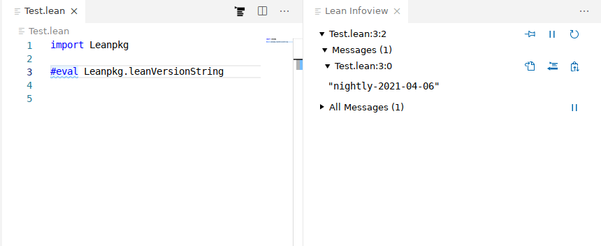

What is Lean
Lean is a functional programming language that makes it easy to write correct and maintainable code. You can also use Lean as an interactive theorem prover.
Lean programming primarily involves defining types and functions. This allows your focus to remain on the problem domain and manipulating its data, rather than the details of programming.
-- Defines a function that takes a name and produces a greeting.
def getGreeting (name : String) := s!"Hello, {name}! Isn't Lean great?"
-- The `main` function is the entry point of your program.
-- Its type is `IO Unit` because it can perform `IO` operations (side effects).
def main : IO Unit :=
-- Define a list of names
let names := ["Sebastian", "Leo", "Daniel"]
-- Map each name to a greeting
let greetings := names.map getGreeting
-- Print the list of greetings
for greeting in greetings do
IO.println greeting
Lean has numerous features, including:
- Type inference
- First-class functions
- Powerful data types
- Pattern matching
- Type classes
- Extensible syntax
- Hygienic macros
- Dependent types
- Metaprogramming framework
- Multithreading
- Verification: you can prove properties of your functions using Lean itself
Tour of Lean
The best way to learn about Lean is to read and write Lean code. This article will act as a tour through some of the key features of the Lean language and give you some code snippets that you can execute on your machine. To learn about setting up a development environment, check out Setting Up Lean.
There are two primary concepts in Lean: functions and types. This tour will emphasize features of the language which fall into these two concepts.
Functions and Namespaces
The most fundamental pieces of any Lean program are functions organized into namespaces.
Functions perform work on inputs to produce outputs,
and they are organized under namespaces,
which are the primary way you group things in Lean.
They are defined using the def command,
which give the function a name and define its arguments.
namespace BasicFunctions
-- The `#eval` command evaluates an expression on the fly and prints the result.
#eval 2+2
-- You use 'def' to define a function. This one accepts a natural number
-- and returns a natural number.
-- Parentheses are optional for function arguments, except for when
-- you use an explicit type annotation.
-- Lean can often infer the type of the function's arguments.
def sampleFunction1 x := x*x + 3
-- Apply the function, naming the function return result using 'def'.
-- The variable type is inferred from the function return type.
def result1 := sampleFunction1 4573
-- This line uses an interpolated string to print the result. Expressions inside
-- braces `{}` are converted into strings using the polymorphic method `toString`
#eval println! "The result of squaring the integer 4573 and adding 3 is {result1}"
-- When needed, annotate the type of a parameter name using '(argument : type)'.
def sampleFunction2 (x : Nat) := 2*x*x - x + 3
def result2 := sampleFunction2 (7 + 4)
#eval println! "The result of applying the 2nd sample function to (7 + 4) is {result2}"
-- Conditionals use if/then/else
def sampleFunction3 (x : Int) :=
if x > 100 then
2*x*x - x + 3
else
2*x*x + x - 37
#eval println! "The result of applying sampleFunction3 to 2 is {sampleFunction3 2}"
end BasicFunctions
-- Lean has first-class functions.
-- `twice` takes two arguments `f` and `a` where
-- `f` is a function from natural numbers to natural numbers, and
-- `a` is a natural number.
def twice (f : Nat → Nat) (a : Nat) :=
f (f a)
-- `fun` is used to declare anonymous functions
#eval twice (fun x => x + 2) 10
-- You can prove theorems about your functions.
-- The following theorem states that for any natural number `a`,
-- adding 2 twice produces a value equal to `a + 4`.
theorem twiceAdd2 (a : Nat) : twice (fun x => x + 2) a = a + 4 :=
-- The proof is by reflexivity. Lean "symbolically" reduces both sides of the equality
-- until they are identical.
rfl
-- `(. + 2)` is syntax sugar for `(fun x => x + 2)`. The parentheses + `.` notation
-- is useful for defining simple anonymous functions.
#eval twice (. + 2) 10
-- Enumerated types are a special case of inductive types in Lean,
-- which we will learn about later.
-- The following command creates a new type `Weekday`.
inductive Weekday where
| sunday : Weekday
| monday : Weekday
| tuesday : Weekday
| wednesday : Weekday
| thursday : Weekday
| friday : Weekday
| saturday : Weekday
-- `Weekday` has 7 constructors/elements.
-- The constructors live in the `Weekday` namespace.
-- Think of `sunday`, `monday`, …, `saturday` as being distinct elements of `Weekday`,
-- with no other distinguishing properties.
-- The command `#check` prints the type of a term in Lean.
#check Weekday.sunday
#check Weekday.monday
-- The `open` command opens a namespace, making all declarations in it accessible without
-- qualification.
open Weekday
#check sunday
#check tuesday
-- You can define functions by pattern matching.
-- The following function converts a `Weekday` into a natural number.
def natOfWeekday (d : Weekday) : Nat :=
match d with
| sunday => 1
| monday => 2
| tuesday => 3
| wednesday => 4
| thursday => 5
| friday => 6
| saturday => 7
#eval natOfWeekday tuesday
def isMonday : Weekday → Bool :=
-- `fun` + `match` is a common idiom.
-- The following expression is syntax sugar for
-- `fun d => match d with | monday => true | _ => false`.
fun
| monday => true
| _ => false
#eval isMonday monday
#eval isMonday sunday
-- Lean has support for type classes and polymorphic methods.
-- The `toString` method converts a value into a `String`.
#eval toString 10
#eval toString (10, 20)
-- The method `toString` converts values of any type that implements
-- the class `ToString`.
-- You can implement instances of `ToString` for your own types.
instance : ToString Weekday where
toString (d : Weekday) : String :=
match d with
| sunday => "Sunday"
| monday => "Monday"
| tuesday => "Tuesday"
| wednesday => "Wednesday"
| thursday => "Thursday"
| friday => "Friday"
| saturday => "Saturday"
#eval toString (sunday, 10)
def Weekday.next (d : Weekday) : Weekday :=
match d with
| sunday => monday
| monday => tuesday
| tuesday => wednesday
| wednesday => thursday
| thursday => friday
| friday => saturday
| saturday => sunday
#eval Weekday.next Weekday.wednesday
-- Since the `Weekday` namespace has already been opened, you can also write
#eval next wednesday
-- Matching on a parameter like in the previous definition
-- is so common that Lean provides syntax sugar for it. The following
-- function uses it.
def Weekday.previous : Weekday -> Weekday
| sunday => saturday
| monday => sunday
| tuesday => monday
| wednesday => tuesday
| thursday => wednesday
| friday => thursday
| saturday => friday
#eval next (previous wednesday)
-- We can prove that for any `Weekday` `d`, `next (previous d) = d`
theorem Weekday.nextOfPrevious (d : Weekday) : next (previous d) = d :=
match d with
| sunday => rfl
| monday => rfl
| tuesday => rfl
| wednesday => rfl
| thursday => rfl
| friday => rfl
| saturday => rfl
-- You can automate definitions such as `Weekday.nextOfPrevious`
-- using metaprogramming (or "tactics").
theorem Weekday.nextOfPrevious' (d : Weekday) : next (previous d) = d := by
cases d -- A proof by case distinction
all_goals rfl -- Each case is solved using `rfl`
Setting Up Lean
There are currently two ways to set up a Lean 4 development environment:
- basic setup (Linux/macOS/Windows): uses
elan+ your preinstalled editor - Nix setup (Linux/macOS/WSL): uses the Nix package manager for installing all dependencies localized to your project
See also the quickstart instructions for using the basic setup with VS Code as the editor.
Basic Setup
Release builds for all supported platforms are available at https://github.com/leanprover/lean4/releases.
Instead of downloading these and setting up the paths manually, however, it is recommended to use the Lean version manager elan instead:
$ elan self update # in case you haven't updated elan in a while
# download & activate latest Lean 4 release (https://github.com/leanprover/lean4/releases)
$ elan default leanprover/lean4:stable
# alternatively, use the latest nightly build (https://github.com/leanprover/lean4-nightly/releases)
$ elan default leanprover/lean4:nightly
# alternatively, activate Lean 4 in current directory only
$ elan override set leanprover/lean4:stable
leanpkg
Lean 4 comes with a basic package manager, leanpkg.
Use leanpkg init Foo to initialize a Lean package Foo in the current directory, and leanpkg build to typecheck and build it as well as all its dependencies; call leanpkg help to learn about further commands.
The general directory structure of a package Foo is
leanpkg.toml # package configuration
Foo.lean # main file, import via `import Foo`
Foo/
A.lean # further files, import via e.g. `import Foo.A`
A/... # further nesting
build/ # `leanpkg` output directory
Note however that producing native binaries and libraries (leanpkg build bin/lb) currently depends on make and an external C compiler for recursive compilation.
It has been tested on Windows by installing these tools using MSYS2, but MinGW or WSL should work, too.
Editing
Lean implements the Language Server Protocol that can be used for interactive development in Emacs, VS Code, and possibly other editors.
Changes must be saved to be visible in other files, which must then be invalidated using an editor command (see links above).
Nix Setup
The alternative setup based on Nix provides a perfectly reproducible development environment for your project from the Lean version down to the editor and Lean extension. However, it is still experimental and subject to change; in particular, it is heavily based on an unreleased version of Nix enabling Nix Flakes. The setup has been tested on NixOS, other Linux distributions, and macOS.
After installing (any version of) Nix (https://nixos.org/download.html), you can easily open a shell with the particular pre-release version of Nix needed by and tested with our setup (called the "Lean shell" from here on):
$ nix-shell https://github.com/leanprover/lean4/archive/master.tar.gz -A nix
While this shell is sufficient for executing the steps below, it is recommended to also set the following options in /etc/nix/nix.conf (nix.extraOptions in NixOS):
max-jobs = auto # Allow building multiple derivations in parallel
keep-outputs = true # Do not garbage-collect build time-only dependencies (e.g. clang)
# Allow fetching build results from the Lean Cachix cache
trusted-substituters = https://lean4.cachix.org/
trusted-public-keys = cache.nixos.org-1:6NCHdD59X431o0gWypbMrAURkbJ16ZPMQFGspcDShjY= lean4.cachix.org-1:mawtxSxcaiWE24xCXXgh3qnvlTkyU7evRRnGeAhD4Wk=
On a multi-user installation of Nix (the default), you need to restart the Nix daemon afterwards:
sudo pkill nix-daemon
The Cachix integration will magically beam any build steps already executed by the CI right onto your machine when calling Nix commands in the shell opened above. It can be set up analogously as a cache for your own project.
Note: Your system Nix might print warnings about not knowing some of the settings used by the Lean shell Nix, which can be ignored.
Basic Commands
From a Lean shell, run
$ nix flake new mypkg -t github:leanprover/lean4
$ cd mypkg && git init && git add flake.nix
to create a new Lean package in directory mypkg using the latest commit of Lean 4.
Note that Nix Flakes will not recognize your flake.nix file unless it is visible to Git.
Such packages follow the same directory layout as described in the basic setup above, except for a leanpkg.toml replaced by a flake.nix file set up so you can run Nix commands on it, for example:
$ nix build # build package and all dependencies
$ nix build .#executable # compile `main` definition into executable (after you've added one)
$ nix run .#emacs-dev # open a pinned version of Emacs with lean4-mode fully set up
$ nix run .#emacs-dev MyPackage.lean # arguments can be passed as well, e.g. the file to open
$ nix run .#vscode-dev MyPackage.lean # ditto, using VS Code
Note that if you rename MyPackage.lean, you also have to adjust the name attribute in flake.nix accordingly.
As in the basic setup, changes need to be saved to be visible in other files, which have then to be invalidated via an editor command.
If you don't want to or cannot start the pinned editor from Nix, e.g. because you're running Lean inside WSL/a container/on a different machine, you can manually point your editor at the lean wrapper script the commands above use internally:
$ nix build .#lean-dev -o result-lean-dev
The resulting ./result-lean-dev/bin/lean script essentially runs nix run .#lean in the current project's root directory when you open a Lean file or use the "refresh dependencies" command such that the correct Lean version for that project is executed.
This includes selecting the correct stage of Lean (which it will compile on the fly, though without progress output) if you are working on Lean itself.
Package dependencies can be added as further input flakes and passed to the deps list of buildLeanPackage. Example: https://github.com/Kha/testpkg2/blob/master/flake.nix#L5
For hacking, it can be useful to temporarily override an input with a local checkout/different version of a dependency:
$ nix build --override-input somedep path/to/somedep
On a build error, Nix will show the last 10 lines of the output by default. You can pass -L to nix build to show all lines, or pass the shown *.drv path to nix log to show the full log after the fact.
Keeping all outputs ever built on a machine alive can accumulate to quite impressive amounts of disk space, so you might want to trigger the Nix GC when /nix/store/ has grown too large:
nix-collect-garbage
This will remove everything not reachable from "GC roots" such as the ./result symlink created by nix build.
Note that the package information in flake.nix is currently completely independent from leanpkg.toml used in the basic setup.
Unifying the two formats is TBD.
Quickstart
These instructions will walk you through setting up Lean using the "basic" setup and VS Code as the editor. See Setup for other ways and more details on setting up Lean.
-
Install the latest Lean 4 nightly through
elan: in any bash-compatible shell, run$ curl https://raw.githubusercontent.com/leanprover/elan/master/elan-init.sh -sSf | sh -s -- --default-toolchain leanprover/lean4:nightlyAlternatively, on Windows, download the latest release and run the contained
elan-init.exe. See the elan repo for other installation options and details. -
Install VS Code.
-
Open VS Code and install the
lean4extension.
-
Create a new file with the extension
.leanand add the following code:import Leanpkg #eval Leanpkg.leanVersionStringYou should get a syntax-highlighted file with a "Lean Infoview" on the right that tells you the installed Lean version when placing your cursor on the last line.

-
You are set up! Try opening a Lean folder containing a package file
leanpkg.toml. You can create your own packages usingleanpkg initon the command line. Packages have to be opened using "File > Open Folder..." for imports to work. Saved changes are visible in other files after running "Lean 4: Refresh File Dependencies" (Ctrl+Shift+X).
Using Lean
Lexical Structure
This section describes the detailed lexical structure of the Lean language. Many readers will want to skip this section on a first reading.
Lean input is processed into a stream of tokens by its scanner, using the UTF-8 encoding. The next token is the longest matching prefix of the remaining input.
token: `symbol` | `command` | `ident` | `string` | `char` | `numeral` |
: `decimal` | `quoted_symbol` | `doc_comment` | `mod_doc_comment` |
: `field_notation`
Tokens can be separated by the whitespace characters space, tab, line
feed, and carriage return, as well as comments. Single-line comments
start with --, whereas multi-line comments are enclosed by /-
and -/ and can be nested.
Symbols and Commands
.. (TODO: list built-in symbols and command tokens?)
Symbols are static tokens that are used in term notations and
commands. They can be both keyword-like (e.g. the :keyword:have <structured_proofs> keyword) or use arbitrary Unicode characters.
Command tokens are static tokens that prefix any top-level declaration
or action. They are usually keyword-like, with transitory commands
like :keyword:#print <instructions> prefixed by an additional
#. The set of built-in commands is listed in the :numref:Chapter %s <other_commands> section.
Users can dynamically extend the sets of both symbols (via the
commands listed in :numref:quoted_symbols) and command tokens (via
the :keyword:[user_command] <attributes> attribute).
.. _identifiers:
Identifiers
An atomic identifier, or atomic name, is (roughly) an alphanumeric string that does not begin with a numeral. A (hierarchical) identifier, or name, consists of one or more atomic names separated by periods.
Parts of atomic names can be escaped by enclosing them in pairs of French double quotes «».
def Foo.«bar.baz» := 0 -- name parts ["Foo", "bar.baz"]
ident: `atomic_ident` | `ident` "." `atomic_ident`
atomic_ident: `atomic_ident_start` `atomic_ident_rest`*
atomic_ident_start: `letterlike` | "_" | `escaped_ident_part`
letterlike: [a-zA-Z] | `greek` | `coptic` | `letterlike_symbols`
greek: <[α-ωΑ-Ωἀ-῾] except for [λΠΣ]>
coptic: [ϊ-ϻ]
letterlike_symbols: [℀-⅏]
escaped_ident_part: "«" [^«»\r\n\t]* "»"
atomic_ident_rest: `atomic_ident_start` | [0-9'ⁿ] | `subscript`
subscript: [₀-₉ₐ-ₜᵢ-ᵪ]
String Literals
String literals are enclosed by double quotes ("). They may contain line breaks, which are conserved in the string value.
string : '"' `string_item` '"'
string_item : `string_char` | `string_escape`
string_char : [^\\]
string_escape: "\" ("\" | '"' | "'" | "n" | "t" | "x" `hex_char` `hex_char`)
hex_char : [0-9a-fA-F]
Char Literals
Char literals are enclosed by single quotes (').
char: "'" `string_item` "'"
Numeric Literals
Numeric literals can be specified in various bases.
numeral : `numeral10` | `numeral2` | `numeral8` | `numeral16`
numeral10 : [0-9]+
numeral2 : "0" [bB] [0-1]+
numeral8 : "0" [oO] [0-7]+
numeral16 : "0" [xX] `hex_char`+
Decimal literals are currently only being used for some :keyword:set_option <options> values.
decimal : [0-9]+ "." [0-9]+
Quoted Symbols
In a fixed set of commands (:keyword:notation <notation_declarations>, :keyword:local notation <notation_declarations>, and :keyword:reserve <notation_declarations>), symbols (known or unknown) can be quoted by
enclosing them in backticks (`````). Quoted symbols are used by these
commands for registering new notations and symbols.
quoted_symbol : "`" " "* `quoted_symbol_start` `quoted_symbol_rest`* " "* "`"
quoted_symbol_start: [^0-9"\n\t `]
quoted_symbol_rest : [^"\n\t `]
A quoted symbol may contain surrounding whitespace, which is customarily used for pretty printing the symbol and ignored while scanning.
While backticks are not allowed in a user-defined symbol, they are
used in some built-in symbols (see :ref:quotations), which are
accessible outside of the set of commands noted above.
Doc Comments
A special form of comments, doc comments are used to document modules and declarations.
doc_comment: "/--" ([^-] | "-" [^/])* "-/"
mod_doc_comment: "/-!" ([^-] | "-" [^/])* "-/"
Field Notation
Trailing field notation tokens are used in expressions such as
(1+1).to_string. Note that a.toString is a single
:ref:identifier <identifiers>, but may be interpreted as a field
notation expression by the parser.
field_notation: "." ([0-9]+ | `atomic_ident`)
Expressions
Universes
Every type in Lean is, by definition, an expression of type Sort u
for some universe level u. A universe level is one of the
following:
- a natural number,
n - a universe variable,
u(declared with the commanduniverseoruniverses) - an expression
u + n, whereuis a universe level andnis a natural number - an expression
max u v, whereuandvare universes - an expression
imax u v, whereuandvare universe levels
The last one denotes the universe level 0 if v is 0, and max u v otherwise.
universe u v
#check Sort u
#check Sort 5
#check Sort (u + 1)
#check Sort (u + 3)
#check Sort (max u v)
#check Sort (max (u + 3) v)
#check Sort (imax (u + 3) v)
#check Prop
#check Type
Expression Syntax
The set of expressions in Lean is defined inductively as follows:
Sort u: the universe of types at universe leveluc: wherecis an identifier denoting a declared constant or a defined objectx: wherexis a variable in the local context in which the expression is interpretedm?: wherem?is a metavariable in the metavariable context in which the expression is interpreted, you can view metavariable as a "hole" that still needs to be synthesized(x : α) → β: the type of functions taking an elementxofαto an element ofβ, whereβis an expression whose type is aSorts t: the result of applyingstot, wheresandtare expressionsfun x : α => torλ x : α => t: the function mapping any valuexof typeαtot, wheretis an expressionlet x := t; s: a local definition, denotes the value ofswhenxis replaced byts.i: a projection, denotes the value of thei-th field ofslit: a natural number or string literalmdata k s: the expressionsdecorated with metadatak, where is a key-value map
Every well formed term in Lean has a type, which itself is an expression of type Sort u for some u. The fact that a term t has type α is written t : α.
For an expression to be well formed, its components have to satisfy certain typing constraints. These, in turn, determine the type of the resulting term, as follows:
Sort u : Sort (u + 1)c : α, whereαis the type thatchas been declared or defined to havex : α, whereαis the type thatxhas been assigned in the local context where it is interpreted?m : α, whereαis the type that?mhas been declared in the metavariable context where it is interpreted(x : α) → β : Sort (imax u v)whereα : Sort u, andβ : Sort vassumingx : αs t : β[t/x]whereshas type(x : α) → βandthas typeα(fun x : α => t) : (x : α) → βifthas typeβwheneverxhas typeα(let x := t; s) : β[t/x]wherethas typeαandshas typeβassumingx : αlit : Natiflitis a numerallit : Stringiflitis a string literalmdata k s : αifs : αs.i : αifs : βandβis an inductive datatype with only one constructor, andi-th field has typeα
Prop abbreviates Sort 0, Type abbreviates Sort 1, and
Type u abbreviates Sort (u + 1) when u is a universe
variable. We say "α is a type" to express α : Type u for some
u, and we say "p is a proposition" to express
p : Prop. Using the propositions as types correspondence, given
p : Prop, we refer to an expression t : p as a proof of p. In
contrast, given α : Type u for some u and t : α, we
sometimes refer to t as data.
When the expression β in (x : α) → β does not depend on x,
it can be written α → β. As usual, the variable x is bound in
(x : α) → β, fun x : α => t, and let x := t; s. The
expression ∀ x : α, β is alternative syntax for (x : α) → β,
and is intended to be used when β is a proposition. An underscore
can be used to generate an internal variable in a binder, as in
fun _ : α => t.
Metavariables, that is, temporary placeholders, are used in the process of constructing terms. Terms that are added to the environment contain neither metavariable nor variables, which is to say, they are fully elaborated and make sense in the empty context.
Axioms can be declared using the axiom keyword.
Similarly, objects can be defined in various ways, such as using def and theorem keywords.
See Chapter Declarations for more information.
Writing an expression (t : α) forces Lean to elaborate t so that it has type α or report an error if it fails.
Lean supports anonymous constructor notation, anonymous projections,
and various forms of match syntax, including destructuring fun and
let. These, as well as notation for common data types (like pairs,
lists, and so on) are discussed in Chapter Declarations
in connection with inductive types.
universe u
#check Sort 0
#check Prop
#check Sort 1
#check Type
#check Sort u
#check Sort (u+1)
#check Nat → Bool
#check (α : Type u) → List α
#check (α : Type u) → (β : Type u) → Sum α β
#check fun x : Nat => x
#check fun (α : Type u) (x : α) => x
#check let x := 5; x * 2
#check "hello"
#check (fun x => x) true
Implicit Arguments
When declaring arguments to defined objects in Lean (for example, with
def, theorem, axiom, constant, inductive, or
structure; see Chapter Declarations or when
declaring variables in sections (see Chapter Other Commands),
arguments can be annotated as explicit or implicit.
This determines how expressions containing the object are interpreted.
(x : α): an explicit argument of typeα{x : α}: an implicit argument, eagerly inserted⦃x : α⦄or{{x : α}}: an implicit argument, weakly inserted[x : α]: an implicit argument that should be inferred by type class resolution(x : α := v): an optional argument, with default valuev(x : α := by tac): an implicit argument, to be synthesized by tactictac
The name of the variable can be omitted from a class resolution argument, in which case an internal name is generated.
When a function has an explicit argument, you can nonetheless ask
Lean's elaborator to infer the argument automatically, by entering it
as an underscore (_). Conversely, writing @foo indicates that
all of the arguments to be foo are to be given explicitly,
independent of how foo was declared. You can also provide a value
for an implicit parameter using named arguments. Named arguments
enable you to specify an argument for a parameter by matching the
argument with its name rather than with its position in the parameter
list. If you don't remember the order of the parameters but know
their names, you can send the arguments in any order. You may also
provide the value for an implicit parameter whenLean failed to infer
it. Named arguments also improve the readability of your code by
identifying what each argument represents.
def add (x y : Nat) : Nat :=
x + y
#check add 2 3 -- Nat
#eval add 2 3 -- 5
def id1 (α : Type u) (x : α) : α := x
#check id1 Nat 3
#check id1 _ 3
def id2 {α : Type u} (x : α) : α := x
#check id2 3
#check @id2 Nat 3
#check id2 (α := Nat) 3
#check id2
#check id2 (α := Nat)
def id3 {{α : Type u}} (x : α) : α := x
#check id3 3
#check @id3 Nat 3
#check (id3 : (α : Type) → α → α)
class Cls where
val : Nat
instance Cls_five : Cls where
val := 5
def ex2 [c : Cls] : Nat := c.val
example : ex2 = 5 := rfl
def ex2a [Cls] : Nat := ex2
example : ex2a = 5 := rfl
def ex3 (x : Nat := 5) := x
#check ex3 2
#check ex3
example : ex3 = 5 := rfl
def ex4 (x : Nat) (y : Nat := x) : Nat :=
x * y
example : ex4 x = x * x :=
rfl
Basic Data Types and Assertions
The core library contains a number of basic data types, such as the
natural numbers (Nat), the integers (Int), the
booleans (Bool), and common operations on these, as well as the
usual logical quantifiers and connectives. Some example are given
below. A list of common notations and their precedences can be found
in a file
in the core library. The core library also contains a number of basic
data type constructors. Definitions can also be found the
Data
directory of the core library. For more information, see also Chapter libraries.
/- numbers -/
def f1 (a b c : Nat) : Nat :=
a^2 + b^2 + c^2
def p1 (a b c d : Nat) : Prop :=
(a + b)^c ≤ d
def p2 (i j k : Int) : Prop :=
i % (j * k) = 0
/- booleans -/
def f2 (a b c : Bool) : Bool :=
a && (b || c)
/- pairs -/
#eval (1, 2)
def p : Nat × Bool := (1,
section
variables (a b c : Nat) (p : Nat × bool)
#check (1, 2)
#check p.1 * 2
#check p.2 && tt
#check ((1, 2, 3) : Nat × Nat × Nat)
end
/- lists -/
section
variables x y z : Nat
variables xs ys zs : list Nat
open list
#check (1 :: xs) ++ (y :: zs) ++ [1,2,3]
#check append (cons 1 xs) (cons y zs)
#check map (λ x, x^2) [1, 2, 3]
end
/- sets -/
section
variables s t u : set Nat
#check ({1, 2, 3} ∩ s) ∪ ({x | x < 7} ∩ t)
end
/- strings and characters -/
#check "hello world"
#check 'a'
/- assertions -/
#check ∀ a b c n : Nat,
a ≠ 0 ∧ b ≠ 0 ∧ c ≠ 0 ∧ n > 2 → a^n + b^n ≠ c^n
def unbounded (f : Nat → Nat) : Prop := ∀ M, ∃ n, f n ≥ M
.. _constructors_projections_and_matching:
Constructors, Projections, and Matching
Lean's foundation, the Calculus of Inductive Constructions, supports the declaration of inductive types. Such types can have any number of constructors, and an associated eliminator (or recursor). Inductive types with one constructor, known as structures, have projections. The full syntax of inductive types is described in :numref:Chapter %s <declarations>, but here we describe some syntactic elements that facilitate their use in expressions.
When Lean can infer the type of an expression and it is an inductive type with one constructor, then one can write ⟨a1, a2, ..., an⟩ to apply the constructor without naming it. For example, ⟨a, b⟩ denotes prod.mk a b in a context where the expression can be inferred to be a pair, and ⟨h₁, h₂⟩ denotes and.intro h₁ h₂ in a context when the expression can be inferred to be a conjunction. The notation will nest constructions automatically, so ⟨a1, a2, a3⟩ is interpreted as prod.mk a1 (prod.mk a2 a3) when the expression is expected to have a type of the form α1 × α2 × α3. (The latter is interpreted as α1 × (α2 × α3), since the product associates to the right.)
Similarly, one can use "dot notation" for projections: one can write p.fst and p.snd for prod.fst p and prod.snd p when Lean can infer that p is an element of a product, and h.left and h.right for and.left h and and.right h when h is a conjunction.
The anonymous projector notation can used more generally for any objects defined in a namespace (see :numref:Chapter %s <other_commands>). For example, if l has type list α then l.map f abbreviates list.map f l, in which l has been placed at the first argument position where list.map expects a list.
Finally, for data types with one constructor, one destruct an element by pattern matching using the let and assume constructs, as in the examples below. Internally, these are interpreted using the match construct, which is in turn compiled down for the eliminator for the inductive type, as described in :numref:Chapter %s <declarations>.
.. code-block:: lean
universes u v
variables {α : Type u} {β : Type v}
def p : Nat × ℤ := ⟨1, 2⟩
#check p.fst
#check p.snd
def p' : Nat × ℤ × bool := ⟨1, 2, tt⟩
#check p'.fst
#check p'.snd.fst
#check p'.snd.snd
def swap_pair (p : α × β) : β × α :=
⟨p.snd, p.fst⟩
theorem swap_conj {a b : Prop} (h : a ∧ b) : b ∧ a :=
⟨h.right, h.left⟩
#check [1, 2, 3].append [2, 3, 4]
#check [1, 2, 3].map (λ x, x^2)
example (p q : Prop) : p ∧ q → q ∧ p :=
λ h, ⟨h.right, h.left⟩
def swap_pair' (p : α × β) : β × α :=
let (x, y) := p in (y, x)
theorem swap_conj' {a b : Prop} (h : a ∧ b) : b ∧ a :=
let ⟨ha, hb⟩ := h in ⟨hb, ha⟩
def swap_pair'' : α × β → β × α :=
λ ⟨x, y⟩, (y, x)
theorem swap_conj'' {a b : Prop} : a ∧ b → b ∧ a :=
assume ⟨ha, hb⟩, ⟨hb, ha⟩
Structured Proofs
Syntactic sugar is provided for writing structured proof terms:
have h : p := s; tis sugar for(fun h : p => t) ssuffices h : p from s; tis sugar for(λ h : p => s) tsuffices h : p by s; tis sugar for(suffixes h : p from by s; t)show p from tis sugar for(have this : p := t; this)show p by tacis sugar for(show p from by tac)
Types can be omitted when they can be inferred by Lean. Lean also
allows have : p := t; s, which gives the assumption the
name this in the local context. Similarly, Lean recognizes the
variant suffices p from s; t, which use the name this for the new hypothesis.
The notation ‹p› is notation for (by assumption : p), and can
therefore be used to apply hypotheses in the local context.
As noted in Constructors, Projections and Matching, anonymous constructors and projections and match syntax can be used in proofs just as in expressions that denote data.
.. code-block:: lean
example (p q r : Prop) : p → (q ∧ r) → p ∧ q :=
assume h₁ : p,
assume h₂ : q ∧ r,
have h₃ : q, from and.left h₂,
show p ∧ q, from and.intro h₁ h₃
example (p q r : Prop) : p → (q ∧ r) → p ∧ q :=
assume : p,
assume : q ∧ r,
have q, from and.left this,
show p ∧ q, from and.intro ‹p› this
example (p q r : Prop) : p → (q ∧ r) → p ∧ q :=
assume h₁ : p,
assume h₂ : q ∧ r,
suffices h₃ : q, from and.intro h₁ h₃,
show q, from and.left h₂
Lean also supports a calculational environment, which is introduced with the keyword calc. The syntax is as follows:
.. code-block:: text
calc
<expr>_0 'op_1' <expr>_1 ':' <proof>_1
'...' 'op_2' <expr>_2 ':' <proof>_2
...
'...' 'op_n' <expr>_n ':' <proof>_n
Each <proof>_i is a proof for <expr>_{i-1} op_i <expr>_i.
Here is an example:
.. code-block:: lean
variables (a b c d e : Nat)
variable h1 : a = b
variable h2 : b = c + 1
variable h3 : c = d
variable h4 : e = 1 + d
theorem T : a = e :=
calc
a = b : h1
... = c + 1 : h2
... = d + 1 : congr_arg _ h3
... = 1 + d : add_comm d (1 : Nat)
... = e : eq.symm h4
The style of writing proofs is most effective when it is used in conjunction with the simp and rewrite tactics.
.. _computation:
Computation
Two expressions that differ up to a renaming of their bound variables are said to be α-equivalent, and are treated as syntactically equivalent by Lean.
Every expression in Lean has a natural computational interpretation, unless it involves classical elements that block computation, as described in the next section. The system recognizes the following notions of reduction:
- β-reduction : An expression
(λ x, t) sβ-reduces tot[s/x], that is, the result of replacingxbysint. - ζ-reduction : An expression
let x := s in tζ-reduces tot[s/x]. - δ-reduction : If
cis a defined constant with definitiont, thencδ-reduces to tot. - ι-reduction : When a function defined by recursion on an inductive type is applied to an element given by an explicit constructor, the result ι-reduces to the specified function value, as described in :numref:
inductive_types.
The reduction relation is transitive, which is to say, is s reduces to s' and t reduces to t', then s t reduces to s' t', λ x, s reduces to λ x, s', and so on. If s and t reduce to a common term, they are said to be definitionally equal. Definitional equality is defined to be the smallest equivalence relation that satisfies all these properties and also includes α-equivalence and the following two relations:
- η-equivalence : An expression
(λx, t x)is η-equivalent tot, assumingxdoes not occur int. - proof irrelevance : If
p : Prop,s : p, andt : p, thensandtare considered to be equivalent.
This last fact reflects the intuition that once we have proved a proposition p, we only care that is has been proved; the proof does nothing more than witness the fact that p is true.
Definitional equality is a strong notion of equalty of values. Lean's logical foundations sanction treating definitionally equal terms as being the same when checking that a term is well-typed and/or that it has a given type.
The reduction relation is believed to be strongly normalizing, which is to say, every sequence of reductions applied to a term will eventually terminate. The property guarantees that Lean's type-checking algorithm terminates, at least in principle. The consistency of Lean and its soundness with respect to set-theoretic semantics do not depend on either of these properties.
Lean provides two commands to compute with expressions:
#reduce t: use the kernel type-checking procedures to carry out reductions ontuntil no more reductions are possible, and show the result#eval t: evaluatetusing a fast bytecode evaluator, and show the result
Every computable definition in Lean is compiled to bytecode at definition time. Bytecode evaluation is more liberal than kernel evaluation: types and all propositional information are erased, and functions are evaluated using a stack-based virtual machine. As a result, #eval is more efficient than #reduce, and can be used to execute complex programs. In contrast, #reduce is designed to be small and reliable, and to produce type-correct terms at each step. Bytecode is never used in type checking, so as far as soundness and consistency are concerned, only kernel reduction is part of the trusted computing base.
.. code-block:: lean
#reduce (λ x, x + 3) 5
#eval (λ x, x + 3) 5
#reduce let x := 5 in x + 3
#eval let x := 5 in x + 3
def f x := x + 3
#reduce f 5
#eval f 5
#reduce @nat.rec (λ n, Nat) (0 : Nat)
(λ n recval : Nat, recval + n + 1) (5 : Nat)
#eval @nat.rec (λ n, Nat) (0 : Nat)
(λ n recval : Nat, recval + n + 1) (5 : Nat)
def g : Nat → Nat
| 0 := 0
| (n+1) := g n + n + 1
#reduce g 5
#eval g 5
#eval g 50000
example : (λ x, x + 3) 5 = 8 := rfl
example : (λ x, f x) = f := rfl
example (p : Prop) (h₁ h₂ : p) : h₁ = h₂ := rfl
Note: the combination of proof irrelevance and singleton Prop elimination in ι-reduction renders the ideal version of definitional equality, as described above, undecidable. Lean's procedure for checking definitional equality is only an approximation to the ideal. It is not transitive, as illustrated by the example below. Once again, this does not compromise the consistency or soundness of Lean; it only means that Lean is more conservative in the terms it recognizes as well typed, and this does not cause problems in practice. Singleton elimination will be discussed in greater detail in :numref:inductive_types.
.. code-block:: lean
def R (x y : unit) := false
def accrec := @acc.rec unit R (λ_, unit) (λ _ a ih, ()) ()
example (h) : accrec h = accrec (acc.intro _ (λ y, acc.inv h)) :=
rfl
example (h) : accrec (acc.intro _ (λ y, acc.inv h)) = () := rfl
example (h) : accrec h = () := sorry -- rfl fails
Axioms
Lean's foundational framework consists of:
-
type universes and dependent function types, as described above
-
inductive definitions, as described in :numref:
inductive_typesand :numref:inductive_families.
In addition, the core library defines (and trusts) the following axiomatic extensions:
-
propositional extensionality:
.. code-block:: lean
namespace hide
-- BEGIN axiom propext {a b : Prop} : (a ↔ b) → a = b -- END
end hide
-
quotients:
.. code-block:: lean
namespace hide -- BEGIN universes u v
constant quot : Π {α : Sort u}, (α → α → Prop) → Sort u
constant quot.mk : Π {α : Sort u} (r : α → α → Prop), α → quot r
axiom quot.ind : ∀ {α : Sort u} {r : α → α → Prop} {β : quot r → Prop}, (∀ a, β (quot.mk r a)) → ∀ (q : quot r), β q
constant quot.lift : Π {α : Sort u} {r : α → α → Prop} {β : Sort u} (f : α → β), (∀ a b, r a b → f a = f b) → quot r → β
axiom quot.sound : ∀ {α : Type u} {r : α → α → Prop} {a b : α}, r a b → quot.mk r a = quot.mk r b -- END end hide
quot rrepresents the quotient ofαby the smallest equivalence relation containingr.quot.mkandquot.liftsatisfy the following computation rule:.. code-block:: text
quot.lift f h (quot.mk r a) = f a
-
choice:
.. code-block:: lean
namespace hide universe u
-- BEGIN axiom choice {α : Sort u} : nonempty α → α -- END
end hide
Here
nonempty αis defined as follows:.. code-block:: lean
namespace hide universe u
-- BEGIN class inductive nonempty (α : Sort u) : Prop | intro : α → nonempty -- END
end hide
It is equivalent to
∃ x : α, true.
The quotient construction implies function extensionality. The choice principle, in conjunction with the others, makes the axiomatic foundation classical; in particular, it implies the law of the excluded middle and propositional decidability. Functions that make use of choice to produce data are incompatible with a computational interpretation, and do not produce bytecode. They have to be declared noncomputable.
For metaprogramming purposes, Lean also allows the definition of objects which stand outside the object language. These are denoted with the meta keyword, as described in :numref:Chapter %s <programming>.
Declarations
-- TODO (fix)
Declaration Names
A declaration name is a :ref:hierarchical identifier <identifiers> that is interpreted relative to the current namespace as well as (during lookup) to the set of open namespaces.
.. code-block:: lean
namespace a constant b.c : Nat #print b.c -- constant a.b.c : Nat end a
#print a.b.c -- constant a.b.c : Nat open a #print b.c -- constant a.b.c : Nat
Declaration names starting with an underscore are reserved for internal use. Names starting with the special atomic name _root_ are interpreted as absolute names.
.. code-block:: lean
constant a : Nat namespace a constant a : Int #print root.a -- constant a : Nat #print a.a -- constant a.a : Int end a
Contexts and Telescopes
When processing user input, Lean first parses text to a raw expression format. It then uses background information and type constants to disambiguate overloaded symbols and infer implicit arguments, resulting in a fully-formed expression. This process is known as elaboration.
As hinted in :numref:expression_syntax, expressions are parsed and
elaborated with respect to an environment and a local
context. Roughly speaking, an environment represents the state of
Lean at the point where an expression is parsed, including previously
declared axioms, constants, definitions, and theorems. In a given
environment, a local context consists of a sequence (a₁ : α₁) (a₂ : α₂) ... (aₙ : αₙ) where each aᵢ is a name denoting a local
constant and each αᵢ is an expression of type Sort u for some
u which can involve elements of the environment and the local
constants aⱼ for j < i.
Intuitively, a local context is a list of variables that are held constant while an expression is being elaborated. Consider the following
def f (a b : Nat) : Nat → Nat := fun c => a + (b + c)
Here the expression fun c => a + (b + c) is elaborated in the context (a : Nat) (b : Nat) and the expression a + (b + c) is elaborated in the context (a : Nat) (b : Nat) (c : Nat). If you replace the expression a + (b + c) with an underscore, the error message from Lean will include the current goal:
.. code-block:: text
a b c : Nat ⊢ Nat
Here a b c : Nat indicates the local context, and the second Nat indicates the expected type of the result.
A context is sometimes called a telescope, but the latter is used more generally to include a sequence of declarations occuring relative to a given context. For example, relative to the context (a₁ : α₁) (a₂ : α₂) ... (aₙ : αₙ), the types βᵢ in a telescope (b₁ : β₁) (b₂ : β₂) ... (bₙ : βₙ) can refer to a₁, ..., aₙ. Thus a context can be viewed as a telescope relative to the empty context.
Telescopes are often used to describe a list of arguments, or parameters, to a declaration. In such cases, it is often notationally convenient to let (a : α) stand for a telescope rather than just a single argument. In general, the annotations described in :ref:implicit_arguments can be used to mark arguments as implicit.
.. _basic_declarations:
Basic Declarations
Lean provides ways of adding new objects to the environment. The following provide straightforward ways of declaring new objects:
axiom c : α: declare a constant namedcof typeα, it is postulating thatαis not an empty type.def c : α := v: definescto denotev, which should have typeα.theorem c : p := v: similar todef, but intended to be used whenpis a proposition.constant c : α (:= v)?: declares a opaque constant namedcof typeα, the optional valuevis must have typeαand can be viewed as a certificate thatαis not an empty type. If the value is not provided, Lean tries to find one using a proceture based on type class resolution. The valuevis hidden from the type checker. You can assume that Lean "forgets"vafter type checking this kind of declaration.
It is sometimes useful to be able to simulate a definition or theorem without naming it or adding it to the environment.
example : α := t: elaboratestand checks that it has sortα(often a proposition), without adding it to the environment.
In def, the type (α or p, respectively) can be omitted when it can be inferred by Lean. Constants declared with theorem are marked as irreducible.
Any of def, theorem, axiom, or example can take a list of arguments (that is, a context) before the colon. If (a : α) is a context, the definition def foo (a : α) : β := t
is interpreted as def foo : (a : α) → β := fun a : α => t. Similarly, a theorem theorem foo (a : α) : p := t is interpreted as theorem foo : ∀ a : α, p := fun a : α => t.
constant c : Nat
constant d : Nat
axiom cd_eq : c = d
def foo : Nat := 5
def bar := 6
def baz (x y : Nat) (s : List Nat) := [x, y] ++ s
theorem foo_eq_five : foo = 5 := rfl
theorem baz_theorem (x y : Nat) : baz x y [] = [x, y] := rfl
example (x y : Nat) : baz x y [] = [x, y] := rfl
Inductive Types
Lean's axiomatic foundation allows users to declare arbitrary inductive families, following the pattern described by [Dybjer]_. To make the presentation more manageable, we first describe inductive types, and then describe the generalization to inductive families in the next section. The declaration of an inductive type has the following form:
inductive Foo (a : α) where
| constructor₁ : (b : β₁) → Foo a
| constructor₂ : (b : β₂) → Foo a
...
| constructorₙ : (b : βₙ) → Foo a
Here (a : α) is a context and each (b : βᵢ) is a telescope in the context (a : α) together with Foo, subject to the following constraints.
Suppose the telescope (b : βᵢ) is (b₁ : βᵢ₁) ... (bᵤ : βᵢᵤ). Each argument in the telescope is either nonrecursive or recursive.
-
An argument
(bⱼ : βᵢⱼ)is nonrecursive ifβᵢⱼdoes not refer tofoo,the inductive type being defined. In that case,βᵢⱼcan be any type, so long as it does not refer to any nonrecursive arguments. -
An argument
(bⱼ : βᵢⱼ)is recursive if itβᵢⱼof the formΠ (d : δ), foowhere(d : δ)is a telescope which does not refer tofooor any nonrecursive arguments.
The inductive type foo represents a type that is freely generated by the constructors. Each constructor can take arbitrary data and facts as arguments (the nonrecursive arguments), as well as indexed sequences of elements of foo that have been previously constructed (the recursive arguments). In set theoretic models, such sets can be represented by well-founded trees labeled by the constructor data, or they can defined using other transfinite or impredicative means.
The declaration of the type foo as above results in the addition of the following constants to the environment:
-
the type former
foo : Π (a : α), Sort u -
for each
i, the constructorfoo.constructorᵢ : Π (a : α) (b : βᵢ), foo a -
the eliminator
foo.rec, which takes arguments(a : α)(the parameters){C : foo a → Type u}(the motive of the elimination)- for each
i, the minor premise corresponding toconstructorᵢ (x : foo)(the major premise)
and returns an element of
C x. Here, The ith minor premise is a function which takes(b : βᵢ)(the arguments to the constructor)- an argument of type
Π (d : δ), C (bⱼ d)corresponding to each recursive argument(bⱼ : βᵢⱼ), whereβᵢⱼis of the formΠ (d : δ), foo(the recursive values of the function being defined)
and returns an element of
C (constructorᵢ a b), the intended value of the function atconstructorᵢ a b.
The eliminator represents a principle of recursion: to construct an element of C x where x : foo a, it suffices to consider each of the cases where x is of the form constructorᵢ a b and to provide an auxiliary construction in each case. In the case where some of the arguments to constructorᵢ are recursive, we can assume that we have already constructed values of C y for each value y constructed at an earlier stage.
Under the propositions-as-type correspondence, when C x is an element of Prop, the eliminator represents a principle of induction. In order to show ∀ x, C x, it suffices to show that C holds for each constructor, under the inductive hypothesis that it holds for all recursive inputs to the constructor.
The eliminator and constructors satisfy the following identities, in which all the arguments are shown explicitly. Suppose we set F := foo.rec a C f₁ ... fₙ. Then for each constructor, we have the definitional reduction:
.. code-block :: text
F (constructorᵢ a b) = fᵢ b ... (fun d : δᵢⱼ => F (bⱼ d)) ...
where the ellipses include one entry for each recursive argument.
Below are some common examples of inductive types, many of which are defined in the core library.
.. code-block:: lean
namespace hide universes u v
-- BEGIN inductive empty : Type
inductive unit : Type | star : unit
inductive bool : Type | ff : bool | tt : bool
inductive prod (α : Type u) (β : Type v) : Type (max u v) | mk : α → β → prod
inductive sum (α : Type u) (β : Type v) | inl : α → sum | inr : β → sum
inductive sigma (α : Type u) (β : α → Type v) | mk : Π a : α, β a → sigma
inductive false : Prop
inductive true : Prop | trivial : true
inductive and (p q : Prop) : Prop | intro : p → q → and
inductive or (p q : Prop) : Prop | inl : p → or | inr : q → or
inductive Exists (α : Type u) (p : α → Prop) : Prop | intro : ∀ x : α, p x → Exists
inductive subtype (α : Type u) (p : α → Prop) : Type u | intro : ∀ x : α, p x → subtype
inductive nat : Type | zero : nat | succ : nat → nat
inductive list (α : Type u) | nil : list | cons : α → list → list
-- full binary tree with nodes and leaves labeled from α inductive bintree (α : Type u) | leaf : α → bintree | node : bintree → α → bintree → bintree
-- every internal node has subtrees indexed by Nat inductive cbt (α : Type u) | leaf : α → cbt | node : (Nat → cbt) → cbt -- END end hide
Note that in the syntax of the inductive definition foo, the context (a : α) is left implicit. In other words, constructors and recursive arguments are written as though they have return type foo rather than foo a.
Elements of the context (a : α) can be marked implicit as described in :numref:implicit_arguments. These annotations bear only on the type former, foo. Lean uses a heuristic to determine which arguments to the constructors should be marked implicit, namely, an argument is marked implicit if it can be inferred from the type of a subsequent argument. If the annotation {} appears after the constructor, a argument is marked implicit if it can be inferred from the type of a subsequent argument or the return type. For example, it is useful to let nil denote the empty list of any type, since the type can usually be inferred in the context in which it appears. These heuristics are imperfect, and you may sometimes wish to define your own constructors in terms of the default ones. In that case, use the [pattern] :ref:attribute <attributes> to ensure that these will be used appropriately by the :ref:equation compiler <the_equation_compiler>.
There are restrictions on the universe u in the return type Sort u of the type former. There are also restrictions on the universe u in the return type Sort u of the motive of the eliminator. These will be discussed in the next section in the more general setting of inductive families.
Lean allows some additional syntactic conveniences. You can omit the return type of the type former, Sort u, in which case Lean will infer the minimal possible nonzero value for u. As with function definitions, you can list arguments to the constructors before the colon. In an enumerated type (that is, one where the constructors have no arguments), you can also leave out the return type of the constructors.
.. code-block:: lean
namespace hide universe u
-- BEGIN inductive weekday | sunday | monday | tuesday | wednesday | thursday | friday | saturday
inductive nat | zero | succ (n : nat) : nat
inductive list (α : Type u) | nil {} : list | cons (a : α) (l : list) : list
@[pattern] def list.nil' (α : Type u) : list α := list.nil
def length {α : Type u} : list α → Nat | (list.nil' .(α)) := 0 | (list.cons a l) := 1 + length l -- END
end hide
The type former, constructors, and eliminator are all part of Lean's axiomatic foundation, which is to say, they are part of the trusted kernel. In addition to these axiomatically declared constants, Lean automatically defines some additional objects in terms of these, and adds them to the environment. These include the following:
foo.rec_on: a variant of the eliminator, in which the major premise comes firstfoo.cases_on: a restricted version of the eliminator which omits any recursive callsfoo.no_confusion_type,foo.no_confusion: functions which witness the fact that the inductive type is freely generated, i.e. that the constructors are injective and that distinct constructors produce distinct objectsfoo.below,foo.ibelow: functions used by the equation compiler to implement structural recursionfoo.sizeof: a measure which can be used for well-founded recursion
Note that it is common to put definitions and theorems related to a datatype foo in a namespace of the same name. This makes it possible to use projection notation described in :numref:structures_and_records and :numref:namespaces.
.. code-block:: lean
namespace hide universe u
-- BEGIN inductive nat | zero | succ (n : nat) : nat
#check nat #check nat.rec #check nat.zero #check nat.succ
#check nat.rec_on #check nat.cases_on #check nat.no_confusion_type #check @nat.no_confusion #check nat.brec_on #check nat.below #check nat.ibelow #check nat.sizeof
-- END
end hide
.. _inductive_families:
Inductive Families
In fact, Lean implements a slight generalization of the inductive types described in the previous section, namely, inductive families. The declaration of an inductive family in Lean has the following form:
.. code-block:: text
inductive foo (a : α) : Π (c : γ), Sort u | constructor₁ : Π (b : β₁), foo t₁ | constructor₂ : Π (b : β₂), foo t₂ ... | constructorₙ : Π (b : βₙ), foo tₙ
Here (a : α) is a context, (c : γ) is a telescope in context (a : α), each (b : βᵢ) is a telescope in the context (a : α) together with (foo : Π (c : γ), Sort u) subject to the constraints below, and each tᵢ is a tuple of terms in the context (a : α) (b : βᵢ) having the types γ. Instead of defining a single inductive type foo a, we are now defining a family of types foo a c indexed by elements c : γ. Each constructor, constructorᵢ, places its result in the type foo a tᵢ, the member of the family with index tᵢ.
The modifications to the scheme in the previous section are straightforward. Suppose the telescope (b : βᵢ) is (b₁ : βᵢ₁) ... (bᵤ : βᵢᵤ).
-
As before, an argument
(bⱼ : βᵢⱼ)is nonrecursive ifβᵢⱼdoes not refer tofoo,the inductive type being defined. In that case,βᵢⱼcan be any type, so long as it does not refer to any nonrecursive arguments. -
An argument
(bⱼ : βᵢⱼ)is recursive ifβᵢⱼis of the formΠ (d : δ), foo swhere(d : δ)is a telescope which does not refer tofooor any nonrecursive arguments andsis a tuple of terms in context(a : α)and the previous nonrecursivebⱼ's with typesγ.
The declaration of the type foo as above results in the addition of the following constants to the environment:
-
the type former
foo : Π (a : α) (c : γ), Sort u -
for each
i, the constructorfoo.constructorᵢ : Π (a : α) (b : βᵢ), foo a tᵢ -
the eliminator
foo.rec, which takes arguments(a : α)(the parameters){C : Π (c : γ), foo a c → Type u}(the motive of the elimination)- for each
i, the minor premise corresponding toconstructorᵢ (x : foo a)(the major premise)
and returns an element of
C x. Here, The ith minor premise is a function which takes(b : βᵢ)(the arguments to the constructor)- an argument of type
Π (d : δ), C s (bⱼ d)corresponding to each recursive argument(bⱼ : βᵢⱼ), whereβᵢⱼis of the formΠ (d : δ), foo s
and returns an element of
C tᵢ (constructorᵢ a b).
Suppose we set F := foo.rec a C f₁ ... fₙ. Then for each constructor, we have the definitional reduction, as before:
.. code-block :: text
F (constructorᵢ a b) = fᵢ b ... (fun d : δᵢⱼ => F (bⱼ d)) ...
where the ellipses include one entry for each recursive argument.
The following are examples of inductive families.
.. code-block:: lean
namespace hide universe u
-- BEGIN inductive vector (α : Type u) : Nat → Type u | nil : vector 0 | succ : Π n, vector n → vector (n + 1)
-- 'is_prod s n' means n is a product of elements of s inductive is_prod (s : set Nat) : Nat → Prop | base : ∀ n ∈ s, is_prod n | step : ∀ m n, is_prod m → is_prod n → is_prod (m * n)
inductive eq {α : Sort u} (a : α) : α → Prop | refl : eq a -- END
end hide
We can now describe the constraints on the return type of the type former, Sort u. We can always take u to be 0, in which case we are defining an inductive family of propositions. If u is nonzero, however, it must satisfy the following constraint: for each type βᵢⱼ : Sort v occurring in the constructors, we must have u ≥ v. In the set-theoretic interpretation, this ensures that the universe in which the resulting type resides is large enough to contain the inductively generated family, given the number of distinctly-labeled constructors. The restriction does not hold for inductively defined propositions, since these contain no data.
Putting an inductive family in Prop, however, does impose a restriction on the eliminator. Generally speaking, for an inductive family in Prop, the motive in the eliminator is required to be in Prop. But there is an exception to this rule: you are allowed to eliminate from an inductively defined Prop to an arbitrary Sort when there is only one constructor, and each argument to that constructor is either in Prop or an index. The intuition is that in this case the elimination does not make use of any information that is not already given by the mere fact that the type of argument is inhabited. This special case is known as singleton elimination.
.. _mutual_and_nested_inductive_definitions:
Mutual and Nested Inductive Definitions
Lean supports two generalizations of the inductive families described above, namely, mutual and nested inductive definitions. These are not implemented natively in the kernel. Rather, the definitions are compiled down to the primitive inductive types and families.
The first generalization allows for multiple inductive types to be defined simultaneously.
.. code-block:: text
mutual inductive foo, bar (a : α) with foo : Π (c : γ), Sort u | constructor₁₁ : Π (b : β₁₁), foo t₁₁ | constructor₁₂ : Π (b : β₁₂), foo t₁₂ ... | constructor₁ₙ : Π (b : β₁ₙ), foo t₁ₙ with bar : | constructor₂₁ : Π (b : β₂₁), bar t₂₁ | constructor₂₂ : Π (b : β₂₂), bar t₂₂ ... | constructor₂ₘ : Π (b : β₂ₘ), bar t₂ₘ
Here the syntax is shown for defining two inductive families, foo and bar, but any number is allowed. The restrictions are almost the same as for ordinary inductive families. For example, each (b : βᵢⱼ) is a telescope relative to the context (a : α). The difference is that the constructors can now have recursive arguments whose return types are any of the inductive families currently being defined, in this case foo and bar. Note that all of the inductive definitions share the same parameters (a : α), though they may have different indices.
A mutual inductive definition is compiled down to an ordinary inductive definition using an extra finite-valued index to distinguish the components. The details of the internal construction are meant to be hidden from most users. Lean defines the expected type formers foo and bar and constructors constructorᵢⱼ from the internal inductive definition. There is no straightforward elimination principle, however. Instead, Lean defines an appropriate sizeof measure, meant for use with well-founded recursion, with the property that the recursive arguments to a constructor are smaller than the constructed value.
The second generalization relaxes the restriction that in the recursive definition of foo, foo can only occur strictly positively in the type of any of its recursive arguments. Specifically, in a nested inductive definition, foo can appear as an argument to another inductive type constructor, so long as the corresponding parameter occurs strictly positively in the constructors for that inductive type. This process can be iterated, so that additional type constructors can be applied to those, and so on.
A nested inductive definition is compiled down to an ordinary inductive definition using a mutual inductive definition to define copies of all the nested types simultaneously. Lean then constructs isomorphisms between the mutually defined nested types and their independently defined counterparts. Once again, the internal details are not meant to be manipulated by users. Rather, the type former and constructors are made available and work as expected, while an appropriate sizeof measure is generated for use with well-founded recursion.
.. code-block:: lean
universe u
-- BEGIN
mutual inductive even, odd
with even : Nat → Prop
| even_zero : even 0
| even_succ : ∀ n, odd n → even (n + 1)
with odd : Nat → Prop
| odd_succ : ∀ n, even n → odd (n + 1)
inductive tree (α : Type u)
| mk : α → list tree → tree
inductive double_tree (α : Type u)
| mk : α → list double_tree × list double_tree → double_tree
-- END
.. _the_equation_compiler:
The Equation Compiler
The equation compiler takes an equational description of a function or proof and tries to define an object meeting that specification. It expects input with the following syntax:
.. code-block:: text
def foo (a : α) : Π (b : β), γ
| [patterns₁] := t₁
...
| [patternsₙ] := tₙ
Here (a : α) is a telescope, (b : β) is a telescope in the context (a : α), and γ is an expression in the context (a : α) (b : β) denoting a Type or a Prop.
Each patternsᵢ is a sequence of patterns of the same length as (b : β). A pattern is either:
- a variable, denoting an arbitrary value of the relevant type,
- an underscore, denoting a wildcard or anonymous variable,
- an inaccessible term (see below), or
- a constructor for the inductive type of the corresponding argument, applied to a sequence of patterns.
In the last case, the pattern must be enclosed in parentheses.
Each term tᵢ is an expression in the context (a : α) together with the variables introduced on the left-hand side of the token :=. The term tᵢ can also include recursive calls to foo, as described below. The equation compiler does case splitting on the variables (b : β) as necessary to match the patterns, and defines foo so that it has the value tᵢ in each of the cases. In ideal circumstances (see below), the equations hold definitionally. Whether they hold definitionally or only propositionally, the equation compiler proves the relevant equations and assigns them internal names. They are accessible by the rewrite and simp tactics under the name foo (see :numref:the_rewriter and :numref:the_simplifier). If some of the patterns overlap, the equation compiler interprets the definition so that the first matching pattern applies in each case. Thus, if the last pattern is a variable, it covers all the remaining cases. If the patterns that are presented do not cover all possible cases, the equation compiler raises an error.
When identifiers are marked with the [pattern] attribute, the equation compiler unfolds them in the hopes of exposing a constructor. For example, this makes it possible to write n+1 and 0 instead of nat.succ n and nat.zero in patterns.
For a nonrecursive definition involving case splits, the defining equations will hold definitionally. With inductive types like char, string, and fin n, a case split would produce definitions with an inordinate number of cases. To avoid this, the equation compiler uses if ... then ... else instead of cases_on when defining the function. In this case, the defining equations hold definitionally as well.
.. code-block:: lean
open nat
def sub2 : Nat → Nat
| zero := 0
| (succ zero) := 0
| (succ (succ a)) := a
def bar : Nat → list Nat → bool → Nat
| 0 _ ff := 0
| 0 (b :: _) _ := b
| 0 [] tt := 7
| (a+1) [] ff := a
| (a+1) [] tt := a + 1
| (a+1) (b :: _) _ := a + b
def baz : char → Nat
| 'A' := 1
| 'B' := 2
| _ := 3
If any of the terms tᵢ in the template above contain a recursive call to foo, the equation compiler tries to interpret the definition as a structural recursion. In order for that to succeed, the recursive arguments must be subterms of the corresponding arguments on the left-hand side. The function is then defined using a course of values recursion, using automatically generated functions below and brec in the namespace corresponding to the inductive type of the recursive argument. In this case the defining equations hold definitionally, possibly with additional case splits.
.. code-block:: lean
namespace hide
-- BEGIN
def fib : nat → nat
| 0 := 1
| 1 := 1
| (n+2) := fib (n+1) + fib n
def append {α : Type} : list α → list α → list α
| [] l := l
| (h::t) l := h :: append t l
example : append [(1 : Nat), 2, 3] [4, 5] = [1, 2, 3, 4, 5] := rfl
-- END
end hide
If structural recursion fails, the equation compiler falls back on well-founded recursion. It tries to infer an instance of has_sizeof for the type of each argument, and then show that each recursive call is decreasing under the lexicographic order of the arguments with respect to sizeof measure. If it fails, the error message provides information as to the goal that Lean tried to prove. Lean uses information in the local context, so you can often provide the relevant proof manually using have in the body of the definition. In this case of well-founded recursion, the defining equations hold only propositionally, and can be accessed using simp and rewrite with the name foo.
.. code-block:: lean
namespace hide
open nat
-- BEGIN
def div : Nat → Nat → Nat
| x y :=
if h : 0 < y ∧ y ≤ x then
have x - y < x,
from sub_lt (lt_of_lt_of_le h.left h.right) h.left,
div (x - y) y + 1
else
0
example (x y : Nat) :
div x y = if 0 < y ∧ y ≤ x then div (x - y) y + 1 else 0 :=
by rw [div]
-- END
end hide
Note that recursive definitions can in general require nested recursions, that is, recursion on different arguments of foo in the template above. The equation compiler handles this by abstracting later arguments, and recursively defining higher-order functions to meet the specification.
The equation compiler also allows mutual recursive definitions, with a syntax similar to that of :ref:mutual inductive definitions <mutual_and_nested_inductive_definitions>. They are compiled using well-founded recursion, and so once again the defining equations hold only propositionally.
.. code-block:: lean
mutual def even, odd
with even : Nat → bool
| 0 := tt
| (a+1) := odd a
with odd : Nat → bool
| 0 := ff
| (a+1) := even a
example (a : Nat) : even (a + 1) = odd a :=
by simp [even]
example (a : Nat) : odd (a + 1) = even a :=
by simp [odd]
Well-founded recursion is especially useful with :ref:mutual and nested inductive definitions <mutual_and_nested_inductive_definitions>, since it provides the canonical way of defining functions on these types.
.. code-block:: lean
mutual inductive even, odd
with even : Nat → Prop
| even_zero : even 0
| even_succ : ∀ n, odd n → even (n + 1)
with odd : Nat → Prop
| odd_succ : ∀ n, even n → odd (n + 1)
open even odd
theorem not_odd_zero : ¬ odd 0.
mutual theorem even_of_odd_succ, odd_of_even_succ
with even_of_odd_succ : ∀ n, odd (n + 1) → even n
| _ (odd_succ n h) := h
with odd_of_even_succ : ∀ n, even (n + 1) → odd n
| _ (even_succ n h) := h
inductive term
| const : string → term
| app : string → list term → term
open term
mutual def num_consts, num_consts_lst
with num_consts : term → nat
| (term.const n) := 1
| (term.app n ts) := num_consts_lst ts
with num_consts_lst : list term → nat
| [] := 0
| (t::ts) := num_consts t + num_consts_lst ts
The case where patterns are matched against an argument whose type is an inductive family is known as dependent pattern matching. This is more complicated, because the type of the function being defined can impose constraints on the patterns that are matched. In this case, the equation compiler will detect inconsistent cases and rule them out.
.. code-block:: lean
universe u
inductive vector (α : Type u) : Nat → Type u
| nil {} : vector 0
| cons : Π {n}, α → vector n → vector (n+1)
namespace vector
def head {α : Type} : Π {n}, vector α (n+1) → α
| n (cons h t) := h
def tail {α : Type} : Π {n}, vector α (n+1) → vector α n
| n (cons h t) := t
def map {α β γ : Type} (f : α → β → γ) :
Π {n}, vector α n → vector β n → vector γ n
| 0 nil nil := nil
| (n+1) (cons a va) (cons b vb) := cons (f a b) (map va vb)
end vector
An expression of the form .(t) in a pattern is known as an inaccessible term. It is not viewed as part of the pattern; rather, it is explicit information that is used by the elaborator and equation compiler when interpreting the definition. Inaccessible terms do not participate in pattern matching. They are sometimes needed for a pattern to make sense, for example, when a constructor depends on a parameter that is not a pattern-matching variable. In other cases, they can be used to inform the equation compiler that certain arguments do not require a case split, and they can be used to make a definition more readable.
.. code-block:: lean
universe u
inductive vector (α : Type u) : Nat → Type u
| nil {} : vector 0
| cons : Π {n}, α → vector n → vector (n+1)
namespace vector
-- BEGIN
variable {α : Type u}
def add [has_add α] :
Π {n : Nat}, vector α n → vector α n → vector α n
| ._ nil nil := nil
| ._ (cons a v) (cons b w) := cons (a + b) (add v w)
def add' [has_add α] :
Π {n : Nat}, vector α n → vector α n → vector α n
| .(0) nil nil := nil
| .(n+1) (@cons .(α) n a v) (cons b w) := cons (a + b) (add' v w)
-- END
end vector
.. _match_expressions:
Match Expressions
Lean supports a match ... with ... construct similar to ones found in most functional programming languages. The syntax is as follows:
.. code-block:: text
match t₁, ..., tₙ with
| p₁₁, ..., p₁ₙ := s₁
...
| pₘ₁, ..., pₘₙ := sₘ
Here t₁, ..., tₙ are any terms in the context in which the expression appears, the expressions pᵢⱼ are patterns, and the terms sᵢ are expressions in the local context together with variables introduced by the patterns on the left-hand side. Each sᵢ should have the expected type of the entire match expression.
Any match expression is interpreted using the equation compiler, which generalizes t₁, ..., tₙ, defines an internal function meeting the specification, and then applies it to t₁, ..., tₙ. In contrast to the definitions in :numref:the_equation_compiler, the terms tᵢ are arbitrary terms rather than just variables, and the expression can occur anywhere within a Lean expression, not just at the top level of a definition. Note that the syntax here is somewhat different: both the terms tᵢ and the patterns pᵢⱼ are separated by commas.
.. code-block:: lean
def foo (n : Nat) (b c : bool) :=
5 + match n - 5, b && c with
| 0, tt := 0
| m+1, tt := m + 7
| 0, ff := 5
| m+1, ff := m + 3
end
When a match has only one line, the vertical bar may be left out. In that case, Lean provides alternative syntax with a destructuring let, as well as a destructuring lambda abstraction. Thus the following definitions all have the same net effect.
.. code-block:: lean
def bar₁ : Nat × Nat → Nat
| (m, n) := m + n
def bar₂ (p : Nat × Nat) : Nat :=
match p with (m, n) := m + n end
def bar₃ : Nat × Nat → Nat :=
fun ⟨m, n⟩ => m + n
def bar₄ (p : Nat × Nat) : Nat :=
let ⟨m, n⟩ := p in m + n
.. _structures_and_records:
Structures and Records
The structure command in Lean is used to define an inductive data type with a single constructor and to define its projections at the same time. The syntax is as follows:
.. code-block:: text
structure foo (a : α) extends bar, baz : Sort u :=
constructor :: (field₁ : β₁) ... (fieldₙ : βₙ)
Here (a : α) is a telescope, that is, the parameters to the inductive definition. The name constructor followed by the double colon is optional; if it is not present, the name mk is used by default. The keyword extends followed by a list of previously defined structures is also optional; if it is present, an instance of each of these structures is included among the fields to foo, and the types βᵢ can refer to their fields as well. The output type, Sort u, can be omitted, in which case Lean infers to smallest non-Prop sort possible. Finally, (field₁ : β₁) ... (fieldₙ : βₙ) is a telescope relative to (a : α) and the fields in bar and baz.
The declaration above is syntactic sugar for an inductive type declaration, and so results in the addition of the following constants to the environment:
-
the type former :
foo : Π (a : α), Sort u -
the single constructor :
.. code-block:: text
foo.constructor : Π (a : α) (_to_foo : foo) (_to_bar : bar) (field₁ : β₁) ... (fieldₙ : βₙ), foo a
-
the eliminator
foo.recfor the inductive type with that constructor
In addition, Lean defines
- the projections :
fieldᵢ : Π (a : α) (c : foo) : βᵢfor eachi
where any other fields mentioned in βᵢ are replaced by the relevant projections from c.
Given c : foo, Lean offers the following convenient syntax for the projection foo.fieldᵢ c:
- anonymous projections :
c.fieldᵢ - numbered projections :
c.i
These can be used in any situation where Lean can infer that the type of c is of the form foo a. The convention for anonymous projections is extended to any function f defined in the namespace foo, as described in :numref:namespaces.
Similarly, Lean offers the following convenient syntax for constructing elements of foo. They are equivalent to foo.constructor b₁ b₂ f₁ f₁ ... fₙ, where b₁ : foo, b₂ : bar, and each fᵢ : βᵢ :
-
anonymous constructor:
⟨ b₁, b₂, f₁, ..., fₙ ⟩ -
record notation:
.. code-block:: text
{ foo . to_bar := b₁, to_baz := b₂, field₁ := f₁, ..., fieldₙ := fₙ }
The anonymous constructor can be used in any context where Lean can infer that the expression should have a type of the form foo a. The unicode brackets are entered as \< and \> respectively. The tokens (| and |) are ascii equivalents.
When using record notation, you can omit the annotation foo . when Lean can infer that the expression should have a type of the form foo a. You can replace either to_bar or to_baz by assignments to their fields as well, essentially acting as though the fields of bar and baz are simply imported into foo. Finally, record notation also supports
- record updates:
{ t with ... fieldᵢ := fᵢ ...}
Here t is a term of type foo a for some a. The notation instructs Lean to take values from t for any field assignment that is omitted from the list.
Lean also allows you to specify a default value for any field in a structure by writing (fieldᵢ : βᵢ := t). Here t specifies the value to use when the field fieldᵢ is left unspecified in an instance of record notation.
.. code-block:: lean
universes u v
structure vec (α : Type u) (n : Nat) :=
(l : list α) (h : l.length = n)
structure foo (α : Type u) (β : Nat → Type v) : Type (max u v) :=
(a : α) (n : Nat) (b : β n)
structure bar :=
(c : Nat := 8) (d : Nat)
structure baz extends foo Nat (vec Nat), bar :=
(v : vec Nat n)
#check foo
#check @foo.mk
#check @foo.rec
#check foo.a
#check foo.n
#check foo.b
#check baz
#check @baz.mk
#check @baz.rec
#check baz.to_foo
#check baz.to_bar
#check baz.v
def bzz := vec.mk [1, 2, 3] rfl
#check vec.l bzz
#check vec.h bzz
#check bzz.l
#check bzz.h
#check bzz.1
#check bzz.2
example : vec Nat 3 := vec.mk [1, 2, 3] rfl
example : vec Nat 3 := ⟨[1, 2, 3], rfl⟩
example : vec Nat 3 := (| [1, 2, 3], rfl |)
example : vec Nat 3 := { vec . l := [1, 2, 3], h := rfl }
example : vec Nat 3 := { l := [1, 2, 3], h := rfl }
example : foo Nat (vec Nat) := ⟨1, 3, bzz⟩
example : baz := ⟨⟨1, 3, bzz⟩, ⟨5, 7⟩, bzz⟩
example : baz := { a := 1, n := 3, b := bzz, c := 5, d := 7, v := bzz}
def fzz : foo Nat (vec Nat) := {a := 1, n := 3, b := bzz}
example : foo Nat (vec Nat) := { fzz with a := 7 }
example : baz := { fzz with c := 5, d := 7, v := bzz }
example : bar := { c := 8, d := 9 }
example : bar := { d := 9 } -- uses the default value for c
.. _type_classes:
Type Classes
(Classes and instances. Anonymous instances. Local instances.)
.. [Dybjer] Dybjer, Peter, Inductive Families. Formal Aspects of Computing 6, 1994, pages 440-465.
Organizational features
In this section we introduce some organizational features of Lean that are not a part of its kernel per se, but make it possible to work in the framework more efficiently.
Variables and Sections
Consider the following three function definitions:
def compose (α β γ : Type) (g : β → γ) (f : α → β) (x : α) : γ :=
g (f x)
def doTwice (α : Type) (h : α → α) (x : α) : α :=
h (h x)
def doThrice (α : Type) (h : α → α) (x : α) : α :=
h (h (h x))
Lean provides us with the variable command to make such declarations look more compact:
variable (α β γ : Type)
def compose (g : β → γ) (f : α → β) (x : α) : γ :=
g (f x)
def doTwice (h : α → α) (x : α) : α :=
h (h x)
def doThrice (h : α → α) (x : α) : α :=
h (h (h x))
We can declare variables of any type, not just Type itself:
variable (α β γ : Type)
variable (g : β → γ) (f : α → β) (h : α → α)
variable (x : α)
def compose := g (f x)
def doTwice := h (h x)
def doThrice := h (h (h x))
#print compose
#print doTwice
#print doThrice
Printing them out shows that all three groups of definitions have exactly the same effect.
The variable command instructs Lean to insert the declared variables as bound variables in definitions that refer to them.
Lean is smart enough to figure out which variables are used explicitly or implicitly in a definition. We can therefore proceed as
though α, β, γ, g, f, h, and x are fixed objects when we write our definitions, and let Lean abstract
the definitions for us automatically.
When declared in this way, a variable stays in scope until the end of the file we are working on.
Sometimes, however, it is useful to limit the scope of a variable. For that purpose, Lean provides the notion of a section:
section useful
variable (α β γ : Type)
variable (g : β → γ) (f : α → β) (h : α → α)
variable (x : α)
def compose := g (f x)
def doTwice := h (h x)
def doThrice := h (h (h x))
end useful
When the section is closed, the variables go out of scope, and become nothing more than a distant memory.
You do not have to indent the lines within a section. Nor do you have to name a section, which is to say,
you can use an anonymous section / end pair.
If you do name a section, however, you have to close it using the same name.
Sections can also be nested, which allows you to declare new variables incrementally.
Namespaces
Lean provides us with the ability to group definitions into nested, hierarchical namespaces:
namespace Foo
def a : Nat := 5
def f (x : Nat) : Nat := x + 7
def fa : Nat := f a
def ffa : Nat := f (f a)
#check a
#check f
#check fa
#check ffa
#check Foo.fa
end Foo
-- #check a -- error
-- #check f -- error
#check Foo.a
#check Foo.f
#check Foo.fa
#check Foo.ffa
open Foo
#check a
#check f
#check fa
#check Foo.fa
When we declare that we are working in the namespace Foo, every identifier we declare has
a full name with prefix "Foo." Within the namespace, we can refer to identifiers
by their shorter names, but once we end the namespace, we have to use the longer names.
The open command brings the shorter names into the current context. Often, when we import a
module, we will want to open one or more of the namespaces it contains, to have access to the short identifiers.
But sometimes we will want to leave this information hidden, for example, when they conflict with
identifiers in another namespace we want to use. Thus namespaces give us a way to manage our working environment.
For example, Lean groups definitions and theorems involving lists into a namespace List.
#check List.nil
#check List.cons
#check List.map
We will discuss their types, below. The command open List allows us to use the shorter names:
open List
#check nil
#check cons
#check map
Like sections, namespaces can be nested:
namespace Foo
def a : Nat := 5
def f (x : Nat) : Nat := x + 7
def fa : Nat := f a
namespace Bar
def ffa : Nat := f (f a)
#check fa
#check ffa
end Bar
#check fa
#check Bar.ffa
end Foo
#check Foo.fa
#check Foo.Bar.ffa
open Foo
#check fa
#check Bar.ffa
Namespaces that have been closed can later be reopened, even in another file:
namespace Foo
def a : Nat := 5
def f (x : Nat) : Nat := x + 7
def fa : Nat := f a
end Foo
#check Foo.a
#check Foo.f
namespace Foo
def ffa : Nat := f (f a)
end Foo
Like sections, nested namespaces have to be closed in the order they are opened.
Namespaces and sections serve different purposes: namespaces organize data and sections declare variables for insertion in definitions.
Sections are also useful for delimiting the scope of commands such as set_option and open.
In many respects, however, a namespace ... end block behaves the same as a section ... end block.
In particular, if you use the variable command within a namespace, its scope is limited to the namespace.
Similarly, if you use an open command within a namespace, its effects disappear when the namespace is closed.
Implicit Arguments
Suppose we define the compose function as.
def compose (α β γ : Type) (g : β → γ) (f : α → β) (x : α) : γ :=
g (f x)
The function compose takes three types, α, β, and γ, and two functions, g : β → γ and f : α → β, a value x : α, and
returns g (f x), the composition of g and f.
We say compose is polymorphic over types α, β, and γ. Now, let's use compose:
def compose (α β γ : Type) (g : β → γ) (f : α → β) (x : α) : γ :=
g (f x)
def double (x : Nat) := 2*x
def triple (x : Nat) := 3*x
#check compose Nat Nat Nat double triple 10 -- Nat
#eval compose Nat Nat Nat double triple 10 -- 60
def appendWorld (s : String) := s ++ "world"
#check String.length -- String → Nat
#check compose String String Nat String.length appendWorld "hello" -- Nat
#eval compose String String Nat String.length appendWorld "hello" -- 10
Because compose is polymorphic over types α, β, and γ, we have to provide them in the examples above.
But this information is redundant: one can infer the types from the arguments g and f.
This is a central feature of dependent type theory: terms carry a lot of information, and often some of that information can be inferred from the context.
In Lean, one uses an underscore, _, to specify that the system should fill in the information automatically.
def compose (α β γ : Type) (g : β → γ) (f : α → β) (x : α) : γ :=
g (f x)
def double (x : Nat) := 2*x
def triple (x : Nat) := 3*x
#check compose _ _ _ double triple 10 -- Nat
#eval compose Nat Nat Nat double triple 10 -- 60
def appendWorld (s : String) := s ++ "world"
#check String.length -- String → Nat
#check compose _ _ _ String.length appendWorld "hello" -- Nat
#eval compose _ _ _ String.length appendWorld "hello" -- 10
It is still tedious, however, to type all these underscores. When a function takes an argument that can generally be inferred from context, Lean allows us to specify that this argument should, by default, be left implicit. This is done by putting the arguments in curly braces, as follows:
def compose {α β γ : Type} (g : β → γ) (f : α → β) (x : α) : γ :=
g (f x)
def double (x : Nat) := 2*x
def triple (x : Nat) := 3*x
#check compose double triple 10 -- Nat
#eval compose double triple 10 -- 60
def appendWorld (s : String) := s ++ "world"
#check String.length -- String → Nat
#check compose String.length appendWorld "hello" -- Nat
#eval compose String.length appendWorld "hello" -- 10
All that has changed are the braces around α β γ: Type.
It makes these three arguments implicit. Notationally, this hides the specification of the type,
making it look as though compose simply takes 3 arguments.
Variables can also be specified as implicit when they are declared with
the variables command:
universe u
section
variable {α : Type u}
variable (x : α)
def ident := x
end
variable (α β : Type u)
variable (a : α) (b : β)
#check ident
#check ident a
#check ident b
This definition of ident here has the same effect as the one above.
Lean has very complex mechanisms for instantiating implicit arguments, and we will see that they can be used to infer function types, predicates, and even proofs.
The process of instantiating these "holes," or "placeholders," in a term is part of a bigger process called elaboration.
The presence of implicit arguments means that at times there may be insufficient information to fix the meaning of an expression precisely.
An expression like ident is said to be polymorphic, because it can take on different meanings in different contexts.
One can always specify the type T of an expression e by writing (e : T).
This instructs Lean's elaborator to use the value T as the type of e when trying to elaborate it.
In the following example, this mechanism is used to specify the desired types of the expressions ident.
def ident {α : Type u} (a : α) : α := a
#check (ident : Nat → Nat) -- Nat → Nat
Numerals are overloaded in Lean, but when the type of a numeral cannot be inferred, Lean assumes, by default, that it is a natural number.
So the expressions in the first two #check commands below are elaborated in the same way, whereas the third #check command interprets 2 as an integer.
#check 2 -- Nat
#check (2 : Nat) -- Nat
#check (2 : Int) -- Int
Sometimes, however, we may find ourselves in a situation where we have declared an argument to a function to be implicit,
but now want to provide the argument explicitly. If foo is such a function, the notation @foo denotes the same function with all
the arguments made explicit.
def ident {α : Type u} (a : α) : α := a
variable (α β : Type)
#check @ident -- {α : Type u} → α → α
#check @ident α -- α → α
#check @ident β -- β → β
#check @ident Nat -- Nat → Nat
#check @ident Bool true -- Bool
Notice that now the first #check command gives the type of the identifier, ident, without inserting any placeholders.
Moreover, the output indicates that the first argument is implicit.
Named arguments enable you to specify an argument for a parameter by matching the argument with its name rather than with its position in the parameter list. You can use them to specify explicit and implicit arguments. If you don't remember the order of the parameters but know their names, you can send the arguments in any order. You may also provide the value for an implicit parameter when Lean failed to infer it. Named arguments also improve the readability of your code by identifying what each argument represents.
def ident {α : Type u} (a : α) : α := a
#check ident (α := Nat) -- Nat → Nat
#check ident (α := Bool) -- Bool → Bool
Auto Bound Implicit Arguments
In the previous section, we have shown how implicit arguments make functions more convenient to use.
However, functions such as compose are still quite verbose to define. Note that the universe
polymorphic compose is even more verbose than the one previously defined.
universe u v w
def compose {α : Type u} {β : Type v} {γ : Type w}
(g : β → γ) (f : α → β) (x : α) : γ :=
g (f x)
You can avoid the universe command by providing the universe parameters when defining compose.
def compose.{u, v, w}
{α : Type u} {β : Type v} {γ : Type w}
(g : β → γ) (f : α → β) (x : α) : γ :=
g (f x)
Lean 4 supports a new feature called auto bound implicit arguments. It makes functions such as
compose much more convenient to write. When Lean processes the header of a declaration,
any unbound identifier is automatically added as an implicit argument if it is a single lower case or
greek letter. With this feature, we can write compose as
def compose (g : β → γ) (f : α → β) (x : α) : γ :=
g (f x)
#check @compose
-- {β : Sort u_1} → {γ : Sort u_2} → {α : Sort u_3} → (β → γ) → (α → β) → α → γ
Note that, Lean inferred a more general type using Sort instead of Type.
Although we love this feature and use it extensively when implementing Lean,
we realize some users may feel uncomfortable with it. Thus, you can disable it using
the command set_option autoBoundImplicitLocal false.
set_option autoBoundImplicitLocal false
/- The following definition produces `unknown identifier` errors -/
-- def compose (g : β → γ) (f : α → β) (x : α) : γ :=
-- g (f x)
Dependent Types
In this section, we introduce simple type theory, types as objects, definitions, and explain what makes dependent type theory dependent.
Simple Type Theory
"Type theory" gets its name from the fact that every expression has an associated type.
For example, in a given context, x + 0 may denote a natural number and f may denote a function on the natural numbers.
For those that don't like math, a Lean natural number is an arbitrary-precision unsigned integer.
Here are some examples of how we can declare objects in Lean and check their types.
/- Declare some constants. -/
constant m : Nat -- m is a natural number
constant n : Nat
constant b1 : Bool -- b1 is a Boolean
constant b2 : Bool
/- Check their types. -/
#check m -- output: Nat
#check n
#check n + 0 -- Nat
#check m * (n + 0) -- Nat
#check b1 -- Bool
#check b1 && b2 -- "&&" is the Boolean and
#check b1 || b2 -- Boolean or
#check true -- Boolean "true"
Any text between /- and -/ constitutes a comment block that is ignored by Lean.
Similarly, two dashes -- indicate that the rest of the line contains a comment that is also ignored.
Comment blocks can be nested, making it possible to "comment out" chunks of code, just as in many programming languages.
The constant command introduce new constant symbols into the working environment.
The #check command asks Lean to report their types; in Lean, auxiliary commands that query the system for
information typically begin with the hash symbol. You should try declaring some constants and type checking
some expressions on your own. Declaring new objects in this way is a good way to experiment with the system.
What makes simple type theory powerful is that one can build new types out of others.
For example, if a and b are types, a -> b denotes the type of functions from a to b,
and a × b denotes the type of pairs consisting of an element of a
paired with an element of b, also known as the Cartesian product.
Note that × is a Unicode symbol. We believe that judicious use of Unicode improves legibility,
and all modern editors have great support for it. In the Lean standard library, we often use
Greek letters to denote types, and the Unicode symbol → as a more compact version of ->.
constant m : Nat
constant n : Nat
constant f : Nat → Nat -- type the arrow as "\to" or "\r"
constant f' : Nat -> Nat -- alternative ASCII notation
constant p : Nat × Nat -- type the product as "\times"
constant q : Prod Nat Nat -- alternative notation
constant g : Nat → Nat → Nat
constant g' : Nat → (Nat → Nat) -- has the same type as g!
constant h : Nat × Nat → Nat
constant F : (Nat → Nat) → Nat -- a "functional"
#check f -- Nat → Nat
#check f n -- Nat
#check g m n -- Nat
#check g m -- Nat → Nat
#check (m, n) -- Nat × Nat
#check p.1 -- Nat
#check p.2 -- Nat
#check (m, n).1 -- Nat
#check (p.1, n) -- Nat × Nat
#check F f -- Nat
Once again, you should try some examples on your own.
Let us dispense with some basic syntax. You can enter the unicode arrow → by typing \to or \r.
You can also use the ASCII alternative ->, so the expressions Nat -> Nat and Nat → Nat mean the same thing.
Both expressions denote the type of functions that take a natural number as input and return a natural number as output.
The unicode symbol × for the Cartesian product is entered as \times.
We will generally use lower-case Greek letters like α, β, and γ to range over types.
You can enter these particular ones with \a, \b, and \g.
There are a few more things to notice here. First, the application of a function f to a value x is denoted f x.
Second, when writing type expressions, arrows associate to the right; for example, the type of g is Nat → (Nat → Nat).
Thus we can view g as a function that takes natural numbers and returns another function that takes a natural number and
returns a natural number.
In type theory, this is generally more convenient than writing g as a function that takes a pair of natural numbers as input
and returns a natural number as output. For example, it allows us to "partially apply" the function g.
The example above shows that g m has type Nat → Nat, that is, the function that "waits" for a second argument, n,
and then returns g m n. Taking a function h of type Nat × Nat → Nat and "redefining" it to look like g is a process
known as currying, something we will come back to below.
By now you may also have guessed that, in Lean, (m, n) denotes the ordered pair of m and n,
and if p is a pair, p.1 and p.2 denote the two projections.
Types as objects
One way in which Lean's dependent type theory extends simple type theory is that types themselves --- entities like Nat and Bool ---
are first-class citizens, which is to say that they themselves are objects. For that to be the case, each of them also has to have a type.
#check Nat -- Type
#check Bool -- Type
#check Nat → Bool -- Type
#check Nat × Bool -- Type
#check Nat → Nat -- ...
#check Nat × Nat → Nat
#check Nat → Nat → Nat
#check Nat → (Nat → Nat)
#check Nat → Nat → Bool
#check (Nat → Nat) → Nat
We see that each one of the expressions above is an object of type Type. We can also declare new constants and constructors for types:
constant α : Type
constant β : Type
constant F : Type → Type
constant G : Type → Type → Type
#check α -- Type
#check F α -- Type
#check F Nat -- Type
#check G α -- Type → Type
#check G α β -- Type
#check G α Nat -- Type
Indeed, we have already seen an example of a function of type Type → Type → Type, namely, the Cartesian product.
constant α : Type
constant β : Type
#check Prod α β -- Type
#check Prod Nat Nat -- Type
Here is another example: given any type α, the type List α denotes the type of lists of elements of type α.
constant α : Type
#check List α -- Type
#check List Nat -- Type
Given that every expression in Lean has a type, it is natural to ask: what type does Type itself have?
#check Type -- Type 1
We have actually come up against one of the most subtle aspects of Lean's typing system. Lean's underlying foundation has an infinite hierarchy of types:
#check Type -- Type 1
#check Type 1 -- Type 2
#check Type 2 -- Type 3
#check Type 3 -- Type 4
#check Type 4 -- Type 5
Think of Type 0 as a universe of "small" or "ordinary" types.
Type 1 is then a larger universe of types, which contains Type 0 as an element,
and Type 2 is an even larger universe of types, which contains Type 1 as an element.
The list is indefinite, so that there is a Type n for every natural number n.
Type is an abbreviation for Type 0:
#check Type
#check Type 0
There is also another type universe, Prop, which has special properties.
#check Prop -- Type
We will discuss Prop later.
We want some operations, however, to be polymorphic over type universes. For example, List α should
make sense for any type α, no matter which type universe α lives in. This explains the type annotation of the function List:
#check List -- Type u_1 → Type u_1
Here u_1 is a variable ranging over type levels. The output of the #check command means that whenever α has type Type n, List α also has type Type n. The function Prod is similarly polymorphic:
#check Prod -- Type u_1 → Type u_2 → Type (max u_1 u_2)
To define polymorphic constants and variables, Lean allows us to declare universe variables explicitly using the universe command:
universe u
constant α : Type u
#check α
Equivalently, we can write Type _ to avoid giving the arbitrary universe a name:
constant α : Type _
#check α
Several Lean 3 users use the shorthand Type* for Type _. The Type* notation is not builtin in Lean 4, but you can easily define it using a macro.
macro "Type*" : term => `(Type _)
def f (α : Type*) (a : α) := a
def g (α : Type _) (a : α) := a
#check f
#check g
We explain later how the macro command works.
Function Abstraction and Evaluation
We have seen that if we have m n : Nat, then we have (m, n) : Nat × Nat.
This gives us a way of creating pairs of natural numbers.
Conversely, if we have p : Nat × Nat, then
we have p.1 : Nat and p.2 : Nat.
This gives us a way of "using" a pair, by extracting its two components.
We already know how to "use" a function f : α → β, namely,
we can apply it to an element a : α to obtain f a : β.
But how do we create a function from another expression?
The companion to application is a process known as "lambda abstraction."
Suppose that giving a variable x : α we can construct an expression t : β.
Then the expression fun (x : α) => t, or, equivalently, λ (x : α) => t, is an object of type α → β.
Think of this as the function from α to β which maps any value x to the value t,
which may depend on x.
#check fun (x : Nat) => x + 5
#check λ (x : Nat) => x + 5
#check fun x : Nat => x + 5
#check λ x : Nat => x + 5
Here are some more examples:
constant f : Nat → Nat
constant h : Nat → Bool → Nat
#check fun x : Nat => fun y : Bool => h (f x) y -- Nat → Bool → Nat
#check fun (x : Nat) (y : Bool) => h (f x) y -- Nat → Bool → Nat
#check fun x y => h (f x) y -- Nat → Bool → Nat
Lean interprets the final three examples as the same expression; in the last expression,
Lean infers the type of x and y from the types of f and h.
Some mathematically common examples of operations of functions can be described in terms of lambda abstraction:
constant f : Nat → String
constant g : String → Bool
constant b : Bool
#check fun x : Nat => x -- Nat → Nat
#check fun x : Nat => b -- Nat → Bool
#check fun x : Nat => g (f x) -- Nat → Bool
#check fun x => g (f x) -- Nat → Bool
Think about what these expressions mean. The expression fun x : Nat => x denotes the identity function on Nat,
the expression fun x : α => b denotes the constant function that always returns b,
and fun x : Nat => g (f x), denotes the composition of f and g.
We can, in general, leave off the type annotation on a variable and let Lean infer it for us.
So, for example, we can write fun x => g (f x) instead of fun x : Nat => g (f x).
We can abstract over the constants f and g in the previous definitions:
#check fun (g : String → Bool) (f : Nat → String) (x : Nat) => g (f x)
-- (String → Bool) → (Nat → String) → Nat → Bool
We can also abstract over types:
#check fun (α β γ : Type) (g : β → γ) (f : α → β) (x : α) => g (f x)
The last expression, for example, denotes the function that takes three types, α, β, and γ, and two functions, g : β → γ and f : α → β, and returns the composition of g and f. (Making sense of the type of this function requires an understanding of dependent products, which we will explain below.) Within a lambda expression fun x : α => t, the variable x is a "bound variable": it is really a placeholder, whose "scope" does not extend beyond t.
For example, the variable b in the expression fun (b : β) (x : α) => b has nothing to do with the constant b declared earlier.
In fact, the expression denotes the same function as fun (u : β) (z : α), u. Formally, the expressions that are the same up to a renaming of bound variables are called alpha equivalent, and are considered "the same." Lean recognizes this equivalence.
Notice that applying a term t : α → β to a term s : α yields an expression t s : β.
Returning to the previous example and renaming bound variables for clarity, notice the types of the following expressions:
#check (fun x : Nat => x) 1 -- Nat
#check (fun x : Nat => true) 1 -- Bool
constant f : Nat → String
constant g : String → Bool
#check
(fun (α β γ : Type) (g : β → γ) (f : α → β) (x : α) => g (f x)) Nat String Bool g f 0
-- Bool
As expected, the expression (fun x : Nat => x) 1 has type Nat.
In fact, more should be true: applying the expression (fun x : Nat => x) to 1 should "return" the value 1. And, indeed, it does:
#reduce (fun x : Nat => x) 1 -- 1
#reduce (fun x : Nat => true) 1 -- true
constant f : Nat → String
constant g : String → Bool
#reduce
(fun (α β γ : Type) (g : β → γ) (f : α → β) (x : α) => g (f x)) Nat String Bool g f 0
-- g (f 0)
The command #reduce tells Lean to evaluate an expression by reducing it to its normal form,
which is to say, carrying out all the computational reductions that are sanctioned by its kernel.
The process of simplifying an expression (fun x => t) s to t[s/x] -- that is, t with s substituted for the variable x --
is known as beta reduction, and two terms that beta reduce to a common term are called beta equivalent.
But the #reduce command carries out other forms of reduction as well:
constant m : Nat
constant n : Nat
constant b : Bool
#reduce (m, n).1 -- m
#reduce (m, n).2 -- n
#reduce true && false -- false
#reduce false && b -- false
#reduce b && false -- Bool.rec false false b
#reduce n + 0 -- n
#reduce n + 2 -- Nat.succ (Nat.succ n)
#reduce 2 + 3 -- 5
We explain later how these terms are evaluated.
For now, we only wish to emphasize that this is an important feature of dependent type theory:
every term has a computational behavior, and supports a notion of reduction, or normalization.
In principle, two terms that reduce to the same value are called definitionally equal.
They are considered "the same" by Lean's type checker, and Lean does its best to recognize and support these identifications.
The #reduce command is mainly useful to understand why two terms are considered the same.
Lean is also a programming language. It has a compiler to native code and an interpreter.
You can use the command #eval to execute expressions, and it is the preferred way of testing your functions.
Note that #eval and #reduce are not equivalent. The command #eval first compiles Lean expressions
into an intermediate representation (IR) and then uses an interpreter to execute the generated IR.
Some builtin types (e.g., Nat, String, Array) have a more efficient representation in the IR.
The IR has support for using foreign functions that are opaque to Lean.
In contrast, the #reduce command relies on a reduction engine similar to the one used in Lean's trusted kernel,
the part of Lean that is responsible for checking and verifying the correctness of expressions and proofs.
It is less efficient than #eval, and treats all foreign functions as opaque constants.
We later discuss other differences between the two commands.
Introducing Definitions
The def command provides one important way of defining new objects.
def foo : (Nat → Nat) → Nat :=
fun f => f 0
#check foo -- (Nat → Nat) → Nat
#print foo
We can omit the type when Lean has enough information to infer it:
def foo :=
fun (f : Nat → Nat) => f 0
The general form of a definition is def foo : α := bar. Lean can usually infer the type α, but it is often a good idea to write it explicitly.
This clarifies your intention, and Lean will flag an error if the right-hand side of the definition does not have the right type.
Lean also allows us to use an alternative format that puts the abstracted variables before the colon and omits the lambda:
def double (x : Nat) : Nat :=
x + x
#print double
#check double 3
#reduce double 3 -- 6
#eval double 3 -- 6
def square (x : Nat) :=
x * x
#print square
#check square 3
#reduce square 3 -- 9
#eval square 3 -- 9
def doTwice (f : Nat → Nat) (x : Nat) : Nat :=
f (f x)
#eval doTwice double 2 -- 8
These definitions are equivalent to the following:
def double : Nat → Nat :=
fun x => x + x
def square : Nat → Nat :=
fun x => x * x
def doTwice : (Nat → Nat) → Nat → Nat :=
fun f x => f (f x)
We can even use this approach to specify arguments that are types:
def compose (α β γ : Type) (g : β → γ) (f : α → β) (x : α) : γ :=
g (f x)
What makes dependent type theory dependent?
The short explanation is that what makes dependent type theory dependent is that types can depend on parameters.
You have already seen a nice example of this: the type List α depends on the argument α, and
this dependence is what distinguishes List Nat and List Bool.
For another example, consider the type Vector α n, the type of vectors of elements of α of length n.
This type depends on two parameters: the type α : Type of the elements in the vector and the length n : Nat.
Suppose we wish to write a function cons which inserts a new element at the head of a list.
What type should cons have? Such a function is polymorphic: we expect the cons function for Nat, Bool,
or an arbitrary type α to behave the same way.
So it makes sense to take the type to be the first argument to cons, so that for any type, α, cons α
is the insertion function for lists of type α. In other words, for every α, cons α is the function that takes an element a : α
and a list as : List α, and returns a new list, so we have cons α a as : list α.
It is clear that cons α should have type α → List α → List α. But what type should cons have?
A first guess might be Type → α → list α → list α, but, on reflection, this does not make sense:
the α in this expression does not refer to anything, whereas it should refer to the argument of type Type.
In other words, assuming α : Type is the first argument to the function, the type of the next two elements are α and List α.
These types vary depending on the first argument, α.
This is an instance of a dependent function type, or dependent arrow type. Given α : Type and β : α → Type,
think of β as a family of types over α, that is, a type β a for each a : α.
In that case, the type (a : α) → β a denotes the type of functions f with the property that,
for each a : α, f a is an element of β a. In other words, the type of the value returned by f depends on its input.
Notice that (a : α) → β makes sense for any expression β : Type. When the value of β depends on a
(as does, for example, the expression β a in the previous paragraph), (a : α) → β denotes a dependent function type.
When β doesn't depend on a, (a : α) → β is no different from the type α → β.
Indeed, in dependent type theory (and in Lean), α → β is just notation for (a : α) → β when β does not depend on a.
Returning to the example of lists, we can use the command #check to inspect the type of the following List functions
We will explain the @ symbol and the difference between the round and curly braces momentarily.
#check @List.cons -- {α : Type u_1} → α → List α → List α
#check @List.nil -- {α : Type u_1} → List α
#check @List.length -- {α : Type u_1} → List α → Nat
#check @List.append -- {α : Type u_1} → List α → List α → List α
Just as dependent function types (a : α) → β a generalize the notion of a function type α → β by allowing β to depend on α,
dependent Cartesian product types (a : α) × β a generalize the Cartesian product α × β in the same way. Dependent products are also
called sigma types, and you can also write them as Σ a : α, β a. You can use ⟨a, b⟩ or Sigma.mk a b to create a dependent pair.
universe u v
def f (α : Type u) (β : α → Type v) (a : α) (b : β a) : (a : α) × β a :=
⟨a, b⟩
def g (α : Type u) (β : α → Type v) (a : α) (b : β a) : Σ a : α, β a :=
Sigma.mk a b
#reduce f
#reduce g
#reduce f Type (fun α => α) Nat 10
#reduce g Type (fun α => α) Nat 10
#reduce (f Type (fun α => α) Nat 10).1 -- Nat
#reduce (g Type (fun α => α) Nat 10).1 -- Nat
#reduce (f Type (fun α => α) Nat 10).2 -- 10
#reduce (g Type (fun α => α) Nat 10).2 -- 10
The function f and g above denote the same function.
Tactics
Tactics are metaprograms, that is, programs that create programs.
Lean is implemented in Lean, you can import its implementation using import Lean.
The Lean package is part of the Lean distribution.
You can use the functions in the Lean package to write your own metaprograms
that automate repetitive tasks when writing programs and proofs.
We provide the tactic domain specific language (DSL) for using the tactic framework.
The tactic DSL provides commands for creating terms (and proofs). You
don't need to import the Lean package for using the tactic DSL.
Simple extensions can be implemented using macros. More complex extensions require
the Lean package. Notation used to write Lean terms can be easily lifted to the tactic DSL.
Tactics are instructions that tell Lean how to construct a term or proof. Tactics operate on holes also known as goals. Each hole represents a missing part of the term you are trying to build. Internally these holes are represented as metavariables. They have a type and a local context. The local context contains all local variables in scope.
In the following example, we prove the same simple theorem using different tactics.
The keyword by instructs Lean to use the tactic DSL to construct a term.
Our initial goal is a hole with type p ∨ q → q ∨ p. The tactic intro h
fills this hole using the term fun h => ?m where ?m is a new hole we need to solve.
This hole has type q ∨ p, and the local context contains h : p ∨ q.
The tactic cases fills the hole using Or.casesOn h (fun h1 => ?m1) (fun h2 => ?m2)
where ?m1 and ?m2 are new holes. The tactic apply Or.inr fills the hole ?m1
with the application Or.inr ?m3, and exact h1 fills ?m3 with h1.
The tactic assumption tries to fill a hole by searching the local context for a term with the same type.
theorem ex1 : p ∨ q → q ∨ p := by
intro h
cases h with
| inl h1 =>
apply Or.inr
exact h1
| inr h2 =>
apply Or.inl
assumption
#print ex1
/-
theorem ex1 : {p q : Prop} → p ∨ q → q ∨ p :=
fun {p q : Prop} (h : p ∨ q) =>
Or.casesOn h (fun (h1 : p) => Or.inr h1) fun (h2 : q) => Or.inl h2
-/
-- You can use `match-with` in tactics.
theorem ex2 : p ∨ q → q ∨ p := by
intro h
match h with
| Or.inl _ => apply Or.inr; assumption
| Or.inr h2 => apply Or.inl; exact h2
-- As we have the `fun+match` syntax sugar for terms,
-- we have the `intro+match` syntax sugar
theorem ex3 : p ∨ q → q ∨ p := by
intro
| Or.inl h1 =>
apply Or.inr
exact h1
| Or.inr h2 =>
apply Or.inl
assumption
The examples above are all structured, but Lean 4 still supports unstructured proofs. Unstructured proofs are useful when creating reusable scripts that may discharge different goals. Here is an unstructured version of the example above.
theorem ex1 : p ∨ q → q ∨ p := by
intro h
cases h
apply Or.inr
assumption
apply Or.inl
assumption
done -- fails with an error here if there are unsolvable goals
theorem ex2 : p ∨ q → q ∨ p := by
intro h
cases h
focus -- instructs Lean to `focus` on the first goal,
apply Or.inr
assumption
-- it will fail if there are still unsolvable goals here
focus
apply Or.inl
assumption
theorem ex3 : p ∨ q → q ∨ p := by
intro h
cases h
-- You can still use curly braces and semicolons instead of
-- whitespace sensitive notation as in the previous example
{ apply Or.inr;
assumption
-- It will fail if there are unsolved goals
}
{ apply Or.inl;
assumption
}
-- Many tactics tag subgoals. The tactic `cases` tag goals using constructor names.
-- The tactic `case tag => tactics` instructs Lean to solve the goal
-- with the matching tag.
theorem ex4 : p ∨ q → q ∨ p := by
intro h
cases h
case inr =>
apply Or.inl
assumption
case inl =>
apply Or.inr
assumption
-- Same example for curly braces and semicolons aficionados
theorem ex5 : p ∨ q → q ∨ p := by {
intro h;
cases h;
case inr => {
apply Or.inl;
assumption
}
case inl => {
apply Or.inr;
assumption
}
}
Rewrite
TODO
Pattern matching
As a convenience, pattern-matching has been integrated into tactics such as intro and funext.
theorem ex1 : s ∧ q ∧ r → p ∧ r → q ∧ p := by
intro ⟨_, ⟨hq, _⟩⟩ ⟨hp, _⟩
exact ⟨hq, hp⟩
theorem ex2 :
(fun (x : Nat × Nat) (y : Nat × Nat) => x.1 + y.2)
=
(fun (x : Nat × Nat) (z : Nat × Nat) => z.2 + x.1) := by
funext (a, b) (c, d)
show a + d = d + a
rw [Nat.add_comm]
Induction
The induction tactic now supports user-defined induction principles with
multiple targets (aka major premises).
/-
theorem Nat.mod.inductionOn
{motive : Nat → Nat → Sort u}
(x y : Nat)
(ind : ∀ x y, 0 < y ∧ y ≤ x → motive (x - y) y → motive x y)
(base : ∀ x y, ¬(0 < y ∧ y ≤ x) → motive x y)
: motive x y :=
-/
theorem ex (x : Nat) {y : Nat} (h : y > 0) : x % y < y := by
induction x, y using Nat.mod.inductionOn with
| ind x y h₁ ih =>
rw [Nat.mod_eq_sub_mod h₁.2]
exact ih h
| base x y h₁ =>
have : ¬ 0 < y ∨ ¬ y ≤ x := Iff.mp (Decidable.not_and_iff_or_not ..) h₁
match this with
| Or.inl h₁ => exact absurd h h₁
| Or.inr h₁ =>
have hgt : y > x := Nat.gt_of_not_le h₁
rw [← Nat.mod_eq_of_lt hgt] at hgt
assumption
Cases
TODO
Injection
TODO
Dependent pattern matching
The match-with expression implements dependent pattern matching. You can use it to create concise proofs.
inductive Mem : α → List α → Prop where
| head (a : α) (as : List α) : Mem a (a::as)
| tail (a b : α) (bs : List α) : Mem a bs → Mem a (b::bs)
infix:50 "∈" => Mem
theorem mem_split {a : α} {as : List α} (h : a ∈ as) : ∃ s t, as = s ++ a :: t :=
match a, as, h with
| _, _, Mem.head a bs => ⟨[], ⟨bs, rfl⟩⟩
| _, _, Mem.tail a b bs h =>
match bs, mem_split h with
| _, ⟨s, ⟨t, rfl⟩⟩ => ⟨b::s, ⟨t, List.cons_append .. ▸ rfl⟩⟩
In the tactic DSL, the right-hand-side of each alternative in a match-with is a sequence of tactics instead of a term.
Here is a similar proof using the tactic DSL.
inductive Mem : α → List α → Prop where
| head (a : α) (as : List α) : Mem a (a::as)
| tail (a b : α) (bs : List α) : Mem a bs → Mem a (b::bs)
infix:50 "∈" => Mem
theorem mem_split {a : α} {as : List α} (h : a ∈ as) : ∃ s t, as = s ++ a :: t := by
match a, as, h with
| _, _, Mem.head a bs => exists []; exists bs; rfl
| _, _, Mem.tail a b bs h =>
match bs, mem_split h with
| _, ⟨s, ⟨t, rfl⟩⟩ =>
exists b::s; exists t;
rw [List.cons_append]
We can use match-with nested in tactics.
Here is a similar proof that uses the induction tactic instead of recursion.
inductive Mem : α → List α → Prop where
| head (a : α) (as : List α) : Mem a (a::as)
| tail (a b : α) (bs : List α) : Mem a bs → Mem a (b::bs)
infix:50 "∈" => Mem
theorem mem_split {a : α} {as : List α} (h : a ∈ as) : ∃ s t, as = s ++ a :: t := by
induction as with
| nil => cases h
| cons b bs ih => cases h with
| head a bs => exact ⟨[], ⟨bs, rfl⟩⟩
| tail a b bs h =>
match bs, ih h with
| _, ⟨s, ⟨t, rfl⟩⟩ =>
exists b::s; exists t
rw [List.cons_append]
You can create your own notation using existing tactics. In the following example,
we define a simple obtain tactic using macros. We say it is simple because it takes only one
discriminant. Later, we show how to create more complex automation using macros.
inductive Mem : α → List α → Prop where
| head (a : α) (as : List α) : Mem a (a::as)
| tail (a b : α) (bs : List α) : Mem a bs → Mem a (b::bs)
infix:50 "∈" => Mem
macro "obtain " p:term " from " d:term : tactic =>
`(tactic| match $d:term with | $p:term => ?_)
theorem mem_split {a : α} {as : List α} (h : a ∈ as) : ∃ s t, as = s ++ a :: t := by
induction as with
| cons b bs ih => cases h with
| tail a b bs h =>
obtain ⟨s, ⟨t, h⟩⟩ from ih h
exists b::s; exists t
rw [h, List.cons_append]
| head a bs => exact ⟨[], ⟨bs, rfl⟩⟩
| nil => cases h
Extensible tactics
In the following example, we define the notation triv for the tactic DSL using
the command syntax. Then, we use the command macro_rules to specify what should
be done when triv is used. You can provide different expansions, and the tactic DSL
interpreter will try all of them until one succeeds.
-- Define a new notation for the tactic DSL
syntax "triv" : tactic
macro_rules
| `(tactic| triv) => `(tactic| assumption)
theorem ex1 (h : p) : p := by
triv
-- You cannot prove the following theorem using `triv`
-- theorem ex2 (x : α) : x = x := by
-- triv
-- Let's extend `triv`. The `by` DSL interpreter
-- tries all possible macro extensions for `triv` until one succeeds
macro_rules
| `(tactic| triv) => `(tactic| rfl)
theorem ex2 (x : α) : x = x := by
triv
theorem ex3 (x : α) (h : p) : x = x ∧ p := by
apply And.intro <;> triv
let-rec
You can use let rec to write local recursive functions. We lifted it to the tactic DSL,
and you can use it to create proofs by induction.
theorem length_replicate {α} (n : Nat) (a : α) : (List.replicate n a).length = n := by
let rec aux (n : Nat) (as : List α)
: (List.replicate.loop a n as).length = n + as.length := by
match n with
| 0 => rw [Nat.zero_add]; rfl
| n+1 =>
show List.length (List.replicate.loop a n (a::as)) = Nat.succ n + as.length
rw [aux n, List.length_cons, Nat.add_succ, Nat.succ_add]
exact aux n []
You can also introduce auxiliary recursive declarations using where clause after your definition.
Lean converts them into a let rec.
theorem length_replicate {α} (n : Nat) (a : α) : (List.replicate n a).length = n :=
loop n []
where
loop n as : (List.replicate.loop a n as).length = n + as.length := by
match n with
| 0 => rw [Nat.zero_add]; rfl
| n+1 =>
show List.length (List.replicate.loop a n (a::as)) = Nat.succ n + as.length
rw [loop n, List.length_cons, Nat.add_succ, Nat.succ_add]
begin-end lovers
If you love Lean 3 begin ... end tactic blocks and commas, you can define this notation
in Lean 4 using macros in a few lines of code.
open Lean in
macro "begin " ts:tactic,*,? i:"end" : term => do
-- preserve position of the last token, which is used
-- as the error position in case of an unfinished proof
`(by { $[$ts:tactic]* }%$i)
theorem ex1 (x : Nat) : x + 0 = 0 + x :=
begin
rw [Nat.zero_add],
rw [Nat.add_zero],
end
Syntax Extensions
Lean's syntax can be extended and customized by users at every level, ranging from basic "mixfix" notations to custom elaborators.
In fact, all builtin syntax is parsed and processed using the same mechanisms and APIs open to users.
In this section, we will describe and explain the various extension points.
Significant syntax extensions already builtin into Lean such as the do notation are described in subsections.
While introducing new notations is a relatively rare feature in programming languages and sometimes even frowned upon because of its potential to obscure code, it is an invaluable tool in formalization for expressing established conventions and notations of the respective field succinctly in code. Going beyond basic notations, Lean's ability to factor out common boilerplate code into (well-behaved) macros and to embed entire custom domain specific languages (DSLs) to textually encode subproblems efficiently and readably can be of great benefit to both programmers and proof engineers alike.
Notations and Precedence
The most basic syntax extension commands allow introducing new (or overloading existing) prefix, infix, and postfix operators.
infixl:65 " + " => HAdd.hAdd -- left-associative
infix:50 " = " => Eq -- non-associative
infixr:80 " ^ " => HPow.hPow -- right-associative
prefix:100 "-" => Neg.neg
set_option quotPrecheck false
postfix:max "⁻¹" => Inv.inv
After the initial command name describing the operator kind (its "fixity"), we give the parsing precedence of the operator preceded by a colon :, then a new or existing token surrounded by double quotes (the whitespace is used for pretty printing), then the function this operator should be translated to after the arrow =>.
The precedence is a natural number describing how "tightly" an operator binds to its arguments, encoding the order of operations. We can make this more precise by looking at the commands above unfold to:
notation:65 lhs:65 " + " rhs:66 => HAdd.hAdd lhs rhs
notation:50 lhs:51 " = " rhs:51 => Eq lhs rhs
notation:80 lhs:81 " ^ " rhs:80 => HPow.hPow lhs rhs
notation:100 "-" arg:100 => Neg.neg arg
set_option quotPrecheck false
notation:1024 arg:1024 "⁻¹" => Inv.inv arg -- `max` is a shorthand for precedence 1024
It turns out that all commands from the first code block are in fact command macros translating to the more general notation command.
We will learn about writing such macros below.
Instead of a single token, the notation command accepts a mixed sequence of tokens and named term placeholders with precedences, which can be referenced on the right-hand side of => and will be replaced by the respective term parsed at that position.
A placeholder with precedence p accepts only notations with precedence at least p in that place.
Thus the string a + b + c cannot be parsed as the equivalent of a + (b + c) because the right-hand side operand of an infixl notation has precedence one greater than the notation itself.
In contrast, infixr reuses the notation's precedence for the right-hand side operand, so a ^ b ^ c can be parsed as a ^ (b ^ c).
Note that if we used notation directly to introduce an infix notation like
set_option quotPrecheck false
notation:65 lhs:65 " ~ " rhs:65 => wobble lhs rhs
where the precedences do not sufficiently determine associativity, Lean's parser will default to right associativity.
More precisely, Lean's parser follows a local longest parse rule in the presence of ambiguous grammars: when parsing the right-hand side of a ~ in a ~ b ~ c, it will continue parsing as long as possible (as the current precedence allows), not stopping after b but parsing ~ c as well.
Thus the term is equivalent to a ~ (b ~ c).
As mentioned above, the notation command allows us to define arbitrary mixfix syntax freely mixing tokens and placeholders.
set_option quotPrecheck false
notation:max "(" e ")" => e
notation:10 Γ " ⊢ " e " : " τ => Typing Γ e τ
Placeholders without precedence default to 0, i.e. they accept notations of any precedence in their place.
If two notations overlap, we again apply the longest parse rule:
notation:65 a " + " b:66 " + " c:66 => a + b - c
#eval 1 + 2 + 3 -- 0
The new notation is preferred to the binary notation since the latter, before chaining, would stop parsing after 1 + 2.
If there are multiple notations accepting the same longest parse, the choice will be delayed until elaboration, which will fail unless exactly one overload is type correct.
Syntax and Macros
Elaborators
TODO. See Lean Together 2021: Metaprogramming in Lean 4 for an overview as well the continuation about tactic programming. For more information on antiquotations, see also §4.1 of Beyond Notations: Hygienic Macro Expansion for Theorem Proving Languages.
The do notation
Lean is a pure functional programming language, but you can write effectful code using the do embedded domain specific language (DSL). The following simple program prints two strings "hello" and "world" in the standard output and terminates with exit code 0. Note that the type of the program is IO UInt32. You can read this type as the type of values that perform input-output effects and produce a value of type UInt32.
def main : IO UInt32 := do
IO.println "hello"
IO.println "world"
return 0
The type of IO.println is String → IO Unit. That is, it is a function from String to IO Unit which indicates it may perform input-output effects and produce a value of type Unit. We often say that functions that may perform effects are methods.
We also say a method application, such as IO.println "hello" is an action.
Note that the examples above also demonstrates that braceless do blocks are whitespace sensitive.
If you like ;s and curly braces, you can write the example above as
def main : IO UInt32 := do {
IO.println "hello";
IO.println "world";
return 0;
}
Semicolons can be used even when curly braces are not used. They are particularly useful when you want to "pack" more than one action in a single line.
def main : IO UInt32 := do
IO.println "hello"; IO.println "world"
return 0
Whitespace sensitivity in programming languages is a controversial topic among programmers. You should use your own style. We, the Lean developers, love the braceless and semicolon-free style. We believe it is clean and beautiful.
The do DSL expands into the core Lean language. Let's inspect the different components using the commands #print and #check.
def main : IO UInt32 := do
IO.println "hello"
IO.println "world"
return 0
#check IO.println "hello"
-- IO Unit
#print main
-- Output contains the infix operator `>>=` and `pure`
-- The following `set_option` disables notation such as `>>=` in the output
set_option pp.notation false in
#print main
-- Output contains `bind` and `pure`
#print bind
-- bind : {m : Type u → Type v} → [self : Bind m] → {α β : Type u} →
-- m α → (α → m β) → m β
#print pure
-- pure : {m : Type u → Type v} → [self : Pure m] → {α : Type u} →
-- α → m α
-- IO implements the type classes `Bind` and `Pure`.
#check (inferInstance : Bind IO)
#check (inferInstance : Pure IO)
The types of bind and pure may look daunting at first sight.
They both have many implicit arguments. Let's focus first on the explicit arguments.
bind has two explicit arguments m α and α → m β. The first one should
be viewed as an action with effects m and producing a value of type α.
The second is a function that takes a value of type α and produces an action
with effects m and a value of type β. The result is m β. The method bind is composing
these two actions. We often say bind is an abstract semicolon. The method pure converts
a value α into an action that produces an action m α.
Here is the same function being defined using bind and pure without the do DSL.
def main : IO UInt32 :=
bind (IO.println "hello") fun _ =>
bind (IO.println "world") fun _ =>
pure 0
The notations let x <- action1; action2 and let x ← action1; action2 are just syntax sugar for bind action1 fun x => action2.
Here is a small example using it.
def isGreaterThan0 (x : Nat) : IO Bool := do
IO.println s!"value: {x}"
return x > 0
def f (x : Nat) : IO Unit := do
let c <- isGreaterThan0 x
if c then
IO.println s!"{x} is greater than 0"
else
pure ()
#eval f 10
-- value: 10
-- 10 is greater than 0
Nested actions
Note that we cannot write if isGreaterThan0 x then ... else ... because the condition in a if-then-else is a pure value without effects, but isGreaterThan0 x has type IO Bool. You can use the nested action notation to avoid this annoyance. Here is an equivalent definition for f using a nested action.
def isGreaterThan0 (x : Nat) : IO Bool := do
IO.println s!"x: {x}"
return x > 0
def f (x : Nat) : IO Unit := do
if (<- isGreaterThan0 x) then
IO.println s!"{x} is greater than 0"
else
pure ()
#print f
Lean "lifts" the nested actions and introduces the bind for us.
Here is an example with two nested actions. Note that both actions are executed
even if x = 0.
def isGreaterThan0 (x : Nat) : IO Bool := do
IO.println s!"x: {x}"
return x > 0
def f (x y : Nat) : IO Unit := do
if (<- isGreaterThan0 x) && (<- isGreaterThan0 y) then
IO.println s!"{x} and {y} are greater than 0"
else
pure ()
#eval f 0 10
-- value: 0
-- value: 10
-- The function `f` above is equivalent to
def g (x y : Nat) : IO Unit := do
let c1 <- isGreaterThan0 x
let c2 <- isGreaterThan0 y
if c1 && c2 then
IO.println s!"{x} and {y} are greater than 0"
else
pure ()
theorem fgEqual : f = g :=
rfl -- proof by reflexivity
Here are two ways to achieve the short-circuit semantics in the example above
def isGreaterThan0 (x : Nat) : IO Bool := do
IO.println s!"x: {x}"
return x > 0
def f1 (x y : Nat) : IO Unit := do
if (<- isGreaterThan0 x <&&> isGreaterThan0 y) then
IO.println s!"{x} and {y} are greater than 0"
else
pure ()
-- `<&&>` is the effectful version of `&&`
-- Given `x y : IO Bool`, `x <&&> y` : m Bool`
-- It only executes `y` if `x` returns `true`.
#eval f1 0 10
-- value: 0
#eval f1 1 10
-- value: 1
-- value: 10
-- 1 and 10 are greater than 0
def f2 (x y : Nat) : IO Unit := do
if (<- isGreaterThan0 x) then
if (<- isGreaterThan0 y) then
IO.println s!"{x} and {y} are greater than 0"
else
pure ()
else
pure ()
if-then notation
In the do DSL, we can write if c then action as a shorthand for if c then action else pure (). Here is the method f2 using this shorthand.
def isGreaterThan0 (x : Nat) : IO Bool := do
IO.println s!"x: {x}"
return x > 0
def f2 (x y : Nat) : IO Unit := do
if (<- isGreaterThan0 x) then
if (<- isGreaterThan0 y) then
IO.println s!"{x} and {y} are greater than 0"
Reassignments
When writing effectful code, it is natural to think imperatively.
For example, suppose we want to create an empty array xs,
add 0 if some condition holds, add 1 if another condition holds,
and then print it. In the following example, we use variable
"shadowing" to simulate this kind of "update".
def f (b1 b2 : Bool) : IO Unit := do
let xs := #[]
let xs := if b1 then xs.push 0 else xs
let xs := if b2 then xs.push 1 else xs
IO.println xs
#eval f true true
-- #[0, 1]
#eval f false true
-- #[1]
#eval f true false
-- #[0]
#eval f false false
-- #[]
We can use tuples to simulate updates on multiple variables.
def f (b1 b2 : Bool) : IO Unit := do
let xs := #[]
let ys := #[]
let (xs, ys) := if b1 then (xs.push 0, ys) else (xs, ys.push 0)
let (xs, ys) := if b2 then (xs.push 1, ys) else (xs, ys.push 1)
IO.println s!"xs: {xs}, ys: {ys}"
#eval f true false
-- xs: #[0], ys: #[1]
We can also simulate the control-flow above using join-points.
A join-point is a let that is always tail called and fully applied.
The Lean compiler implements them using gotos.
Here is the same example using join-points.
def f (b1 b2 : Bool) : IO Unit := do
let jp1 xs ys := IO.println s!"xs: {xs}, ys: {ys}"
let jp2 xs ys := if b2 then jp1 (xs.push 1) ys else jp1 xs (ys.push 1)
let xs := #[]
let ys := #[]
if b1 then jp2 (xs.push 0) ys else jp2 xs (ys.push 0)
#eval f true false
-- xs: #[0], ys: #[1]
You can capture complex control-flow using join-points.
The do DSL offers the variable reassignment feature to make this kind of code more comfortable to write. In the following example, the mut modifier at let mut xs := #[] indicates that variable xs can be reassigned. The example contains two reassignments xs := xs.push 0 and xs := xs.push 1. The reassignments are compiled using join-points. There is no hidden state being updated.
def f (b1 b2 : Bool) : IO Unit := do
let mut xs := #[]
if b1 then xs := xs.push 0
if b2 then xs := xs.push 1
IO.println xs
#eval f true true
-- #[0, 1]
The notation x <- action reassigns x with the value produced by the action. It is equivalent to x := (<- action)
Iteration
The do DSL provides a unified notation for iterating over datastructures. Here are a few examples.
def sum (xs : Array Nat) : IO Nat := do
let mut s := 0
for x in xs do
IO.println s!"x: {x}"
s := s + x
return s
#eval sum #[1, 2, 3]
-- x: 1
-- x: 2
-- x: 3
-- 6
-- We can write pure code using the `do` DSL too.
def sum' (xs : Array Nat) : Nat := do
let mut s := 0
for x in xs do
s := s + x
return s
#eval sum' #[1, 2, 3]
-- 6
def sumEven (xs : Array Nat) : IO Nat := do
let mut s := 0
for x in xs do
if x % 2 == 0 then
IO.println s!"x: {x}"
s := s + x
return s
#eval sumEven #[1, 2, 3, 6]
-- x: 2
-- x: 6
-- 8
def splitEvenOdd (xs : List Nat) : IO Unit := do
let mut evens := #[]
let mut odds := #[]
for x in xs do
if x % 2 == 0 then
evens := evens.push x
else
odds := odds.push x
IO.println s!"evens: {evens}, odds: {odds}"
#eval splitEvenOdd [1, 2, 3, 4]
-- evens: #[2, 4], odds: #[1, 3]
def findNatLessThan (x : Nat) (p : Nat → Bool) : IO Nat := do
-- [:x] is notation for the range [0, x)
for i in [:x] do
if p i then
return i -- `return` from the `do` block
throw (IO.userError "value not found")
#eval findNatLessThan 10 (fun x => x > 5 && x % 4 == 0)
-- 8
def sumOddUpTo (xs : List Nat) (threshold : Nat) : IO Nat := do
let mut s := 0
for x in xs do
if x % 2 == 0 then
continue -- it behaves like the `continue` statement in imperative languages
IO.println s!"x: {x}"
s := s + x
if s > threshold then
break -- it behaves like the `break` statement in imperative languages
IO.println s!"result: {s}"
return s
#eval sumOddUpTo [2, 3, 4, 11, 20, 31, 41, 51, 107] 40
-- x: 3
-- x: 11
-- x: 31
-- result: 45
-- 45
TODO: describe forIn
Try-catch
TODO
Pattern matching
TODO
Monads
TODO
ReaderT
TODO
StateT
TODO
StateRefT
TODO
ExceptT
TODO
MonadLift and automatic lifting
TODO
String interpolation
The s! prefix identifies a string literal as an interpolated string.
An interpolated string is a string literal that might contain interpolation expressions.
When an interpolated string is resolved to a result string, items with interpolation expressions are
replaced by the string representations of the expression results. The polymorphic method toString is used
to convert the value into a string.
String interpolation provides a more readable and convenient syntax to create formatted strings than a string composite formatting feature. The following example uses both features to produce the same output:
def name := "John"
def age := 28
#eval IO.println s!"Hello, {name}! Are you {age} years old?"
#eval IO.println ("Hello, " ++ name ++ "! Are you " ++ toString age ++ " years old?")
-- `println! <interpolated-string>` is a macro for `IO.println s!<interpolated-string>`
#eval println! "Hello, {name}! Are you {age} years old?"
Structure of an interpolated string
To identify a string literal as an interpolated string, prepend it with s!.
Terms inside braces {} are ordinary expressions whose type implements the type class ToString.
To include a curly brace { in your interpolated string, you must escape it using \{.
You can nest interpolated strings inside interpolated strings.
def vals := [1, 2, 3]
#eval IO.println s!"\{ vals := {vals} }"
#eval IO.println s!"variables: {vals.map (fun i => s!"x_{i}")}"
ToString instances
You can define a ToString instance for your own datatypes.
structure Person where
name : String
age : Nat
instance : ToString Person where
toString : Person -> String
| { name := n, age := v } => s!"\{ name := {n}, age := {v} }"
def person1 : Person := {
name := "John"
age := 28
}
#eval println! "person1: {person1}"
Metaprogramming
Declaring New Types
In Lean's library, every concrete type other than the universes and every type constructor other than the dependent function type is an instance of a general family of type constructions known as inductive types. It is remarkable that it is possible to develop complex programs and formalize mathematics based on nothing more than the type universes, dependent function types, and inductive types; everything else follows from those.
Intuitively, an inductive type is built up from a specified list of constructors. In Lean, the basic syntax for specifying such a type is as follows:
inductive NewType where
| constructor_1 : ... → NewType
| constructor_2 : ... → NewType
...
| constructor_n : ... → NewType
The intuition is that each constructor specifies a way of building new objects of NewType, possibly from previously constructed values.
The type NewType consists of nothing more than the objects that are constructed in this way.
We will see below that the arguments to the constructors can include objects of type NewType,
subject to a certain "positivity" constraint, which guarantees that elements of NewType are built
from the bottom up. Roughly speaking, each ... can be any function type constructed from NewType
and previously defined types, in which NewType appears, if at all, only as the "target" of the function type.
We will provide a number of examples of inductive types. We will also consider slight generalizations of the scheme above, to mutually defined inductive types, and so-called inductive families.
Every inductive type comes with constructors, which show how to construct an element of the type, and elimination rules, which show how to "use" an element of the type in another construction.
Enumerated Types
The simplest kind of inductive type is simply a type with a finite, enumerated list of elements.
The following command declares the enumerated type Weekday.
inductive Weekday where
| sunday : Weekday
| monday : Weekday
| tuesday : Weekday
| wednesday : Weekday
| thursday : Weekday
| friday : Weekday
| saturday : Weekday
The Weekday type has 7 constructors/elements. The constructors live in the Weekday namespace
Think of sunday, monday, …, saturday as being distinct elements of Weekday,
with no other distinguishing properties.
inductive Weekday where
| sunday : Weekday
| monday : Weekday
| tuesday : Weekday
| wednesday : Weekday
| thursday : Weekday
| friday : Weekday
| saturday : Weekday
#check Weekday.sunday -- Weekday
#check Weekday.monday -- Weekday
You can define functions by pattern matching.
The following function converts a Weekday into a natural number.
inductive Weekday where
| sunday : Weekday
| monday : Weekday
| tuesday : Weekday
| wednesday : Weekday
| thursday : Weekday
| friday : Weekday
| saturday : Weekday
def natOfWeekday (d : Weekday) : Nat :=
match d with
| Weekday.sunday => 1
| Weekday.monday => 2
| Weekday.tuesday => 3
| Weekday.wednesday => 4
| Weekday.thursday => 5
| Weekday.friday => 6
| Weekday.saturday => 7
#eval natOfWeekday Weekday.tuesday -- 3
It is often useful to group definitions related to a type in a namespace with the same name.
For example, we can put the function above into the Weekday namespace.
We are then allowed to use the shorter name when we open the namespace.
In the following example, we define functions from Weekday to Weekday in the namespace Weekday.
inductive Weekday where
| sunday : Weekday
| monday : Weekday
| tuesday : Weekday
| wednesday : Weekday
| thursday : Weekday
| friday : Weekday
| saturday : Weekday
namespace Weekday
def next (d : Weekday) : Weekday :=
match d with
| sunday => monday
| monday => tuesday
| tuesday => wednesday
| wednesday => thursday
| thursday => friday
| friday => saturday
| saturday => sunday
end Weekday
It is so common to start a definition with a match in Lean, that Lean provides a syntax sugar for it.
inductive Weekday where
| sunday : Weekday
| monday : Weekday
| tuesday : Weekday
| wednesday : Weekday
| thursday : Weekday
| friday : Weekday
| saturday : Weekday
namespace Weekday
def previous : Weekday -> Weekday
| sunday => saturday
| monday => sunday
| tuesday => monday
| wednesday => tuesday
| thursday => wednesday
| friday => thursday
| saturday => friday
end Weekday
We can use the command #eval to test our definitions.
inductive Weekday where
| sunday : Weekday
| monday : Weekday
| tuesday : Weekday
| wednesday : Weekday
| thursday : Weekday
| friday : Weekday
| saturday : Weekday
namespace Weekday
def next (d : Weekday) : Weekday :=
match d with
| sunday => monday
| monday => tuesday
| tuesday => wednesday
| wednesday => thursday
| thursday => friday
| friday => saturday
| saturday => sunday
def previous : Weekday -> Weekday
| sunday => saturday
| monday => sunday
| tuesday => monday
| wednesday => tuesday
| thursday => wednesday
| friday => thursday
| saturday => friday
def toString : Weekday -> String
| sunday => "Sunday"
| monday => "Monday"
| tuesday => "Tuesday"
| wednesday => "Wednesday"
| thursday => "Thursday"
| friday => "Friday"
| saturday => "Saturday"
#eval toString (next sunday) -- "Monday"
#eval toString (next tuesday) -- "Wednesday"
#eval toString (previous wednesday) -- "Tuesday"
#eval toString (next (previous sunday)) -- "Sunday"
#eval toString (next (previous monday)) -- "Monday"
-- ..
end Weekday
We can now prove the general theorem that next (previous d) = d for any weekday d.
The idea is to perform a proof by cases using match, and rely on the fact for each constructor both
sides of the equality reduce to the same term.
inductive Weekday where
| sunday : Weekday
| monday : Weekday
| tuesday : Weekday
| wednesday : Weekday
| thursday : Weekday
| friday : Weekday
| saturday : Weekday
namespace Weekday
def next (d : Weekday) : Weekday :=
match d with
| sunday => monday
| monday => tuesday
| tuesday => wednesday
| wednesday => thursday
| thursday => friday
| friday => saturday
| saturday => sunday
def previous : Weekday -> Weekday
| sunday => saturday
| monday => sunday
| tuesday => monday
| wednesday => tuesday
| thursday => wednesday
| friday => thursday
| saturday => friday
theorem nextOfPrevious (d : Weekday) : next (previous d) = d :=
match d with
| sunday => rfl
| monday => rfl
| tuesday => rfl
| wednesday => rfl
| thursday => rfl
| friday => rfl
| saturday => rfl
end Weekday
Inductive Types
TODO
Structures
Structure is a special case of inductive datatype. It has only one constructor and is not recursive.
Similar to the inductive command, the structure command introduces a namespace with the same name.
The general form is as follows:
structure <name> <parameters> <parent-structures> where
<constructor-name> :: <fields>
Most parts are optional. Here is our first example.
structure Point (α : Type u) where
x : α
y : α
In the example above, the constructor name is not provided. So, the constructor is named mk by Lean.
Values of type Point are created using Point.mk a b or { x := a, y := b : Point α }. The latter can be
written as { x := a, y := b } when the expected type is known.
The fields of a point p are accessed using Point.x p and Point.y p. You can also the more compact notation p.x and p.y as a shorthand
for Point.x p and Point.y p.
structure Point (α : Type u) where
x : α
y : α
#check Point
#check Point -- Type u -> Type u
#check @Point.mk -- {α : Type u} → α → α → Point α
#check @Point.x -- {α : Type u} → Point α → α
#check @Point.y -- {α : Type u} → Point α → α
#check Point.mk 10 20 -- Point Nat
#check { x := 10, y := 20 : Point Nat } -- Point Nat
def mkPoint (a : Nat) : Point Nat :=
{ x := a, y := a }
#eval (Point.mk 10 20).x -- 10
#eval (Point.mk 10 20).y -- 20
#eval { x := 10, y := 20 : Point Nat }.x -- 10
#eval { x := 10, y := 20 : Point Nat }.y -- 20
def addXY (p : Point Nat) : Nat :=
p.x + p.y
#eval addXY { x := 10, y := 20 } -- 30
In the notation { ... }, if the fields are in different lines, the , is optional.
structure Point (α : Type u) where
x : α
y : α
def mkPoint (a : Nat) : Point Nat := {
x := a
y := a
}
You can also use where instead of := { ... }.
structure Point (α : Type u) where
x : α
y : α
def mkPoint (a : Nat) : Point Nat where
x := a
y := a
Here are some simple theorems about our Point type.
structure Point (α : Type u) where
x : α
y : α
theorem ex1 (a b : α) : (Point.mk a b).x = a :=
rfl
theorem ex2 (a b : α) : (Point.mk a b).y = b :=
rfl
theorem ex3 (a b : α) : Point.mk a b = { x := a, y := b } :=
rfl
The dot notation is convenient not just for accessing the projections of a structure,
but also for applying functions defined in a namespace with the same name.
If p has type Point, the expression p.foo is interpreted as Point.foo p,
assuming that the first argument to foo has type Point.
The expression p.add q is therefore shorthand for Point.add p q in the example below.
structure Point (α : Type u) where
x : α
y : α
def Point.add (p q : Point Nat) : Point Nat :=
{ x := p.x + q.x, y := p.y + q.y }
def p : Point Nat := Point.mk 1 2
def q : Point Nat := Point.mk 3 4
#eval (p.add q).x -- 4
#eval (p.add q).y -- 6
After we introduce type classes, we show how to define a function like add so that
it works generically for elements of Point α rather than just Point Nat,
assuming α has an associated addition operation.
More generally, given an expression p.foo x y z, Lean will insert p at the first argument to foo of type Point.
For example, with the definition of scalar multiplication below, p.smul 3 is interpreted as Point.smul 3 p.
structure Point (α : Type u) where
x : α
y : α
def Point.smul (n : Nat) (p : Point Nat) :=
Point.mk (n * p.x) (n * p.y)
def p : Point Nat :=
Point.mk 1 2
#eval (p.smul 3).x -- 3
#eval (p.smul 3).y -- 6
Inheritance
We can extend existing structures by adding new fields. This feature allows us to simulate a form of inheritance.
structure Point (α : Type u) where
x : α
y : α
inductive Color where
| red
| green
| blue
structure ColorPoint (α : Type u) extends Point α where
color : Color
#check { x := 10, y := 20, color := Color.red : ColorPoint Nat }
-- { toPoint := { x := 10, y := 20 }, color := Color.red }
The output for the check command above suggests how Lean encoded inheritance and multiple inheritance.
Lean uses fields to each parent structure.
structure Foo where
x : Nat
y : Nat
structure Boo where
w : Nat
z : Nat
structure Bla extends Foo, Boo where
bit : Bool
#check Bla.mk -- Foo → Boo → Bool → Bla
#check Bla.mk { x := 10, y := 20 } { w := 30, z := 40 } true
#check { x := 10, y := 20, w := 30, z := 40, bit := true : Bla }
#check { toFoo := { x := 10, y := 20 },
toBoo := { w := 30, z := 40 },
bit := true : Bla }
theorem ex :
Bla.mk { x := x, y := y } { w := w, z := z } b
=
{ x := x, y := y, w := w, z := z, bit := b } :=
rfl
Default field values
You can assign default value to fields when declaring a new structure.
inductive MessageSeverity
| error | warning
structure Message where
fileName : String
pos : Option Nat := none
severity : MessageSeverity := MessageSeverity.error
caption : String := ""
data : String
def msg1 : Message :=
{ fileName := "foo.lean", data := "failed to import file" }
#eval msg1.pos -- none
#eval msg1.fileName -- "foo.lean"
#eval msg1.caption -- ""
When extending a structure, you can not only add new fields, but provide new default values for existing fields.
inductive MessageSeverity
| error | warning
structure Message where
fileName : String
pos : Option Nat := none
severity : MessageSeverity := MessageSeverity.error
caption : String := ""
data : String
structure MessageExt extends Message where
timestamp : Nat
caption := "extended" -- new default value for field `caption`
def msg2 : MessageExt where
fileName := "bar.lean"
data := "error at initialization"
timestamp := 10
#eval msg2.fileName -- "bar.lean"
#eval msg2.timestamp -- 10
#eval msg2.caption -- "extended"
Updating structure fields
TODO
Type classes
Typeclasses were introduced as a principled way of enabling ad-hoc polymorphism in functional programming languages. We first observe that it would be easy to implement an ad-hoc polymorphic function (such as addition) if the function simply took the type-specific implementation of addition as an argument and then called that implementation on the remaining arguments. For example, suppose we declare a structure in Lean to hold implementations of addition
namespace Ex
structure Add (a : Type) where
add : a -> a -> a
#check @Add.add
-- Add.add : {a : Type} → Add a → a → a → a
end Ex
In the above Lean code, the field add has type
Add.add : {α : Type} → Add α → α → α → α
where the curly braces around the type a mean that it is an implicit argument.
We could implement double by
namespace Ex
structure Add (a : Type) where
add : a -> a -> a
def double (s : Add a) (x : a) : a :=
s.add x x
#eval double { add := Nat.add } 10
-- 20
#eval double { add := Nat.mul } 10
-- 100
#eval double { add := Int.add } 10
-- 20
end Ex
Note that you can double a natural number n by double { add := Nat.add } n.
Of course, it would be highly cumbersome for users to manually pass the
implementations around in this way.
Indeed, it would defeat most of the potential benefits of ad-hoc
polymorphism.
The main idea behind typeclasses is to make arguments such as Add a implicit,
and to use a database of user-defined instances to synthesize the desired instances
automatically through a process known as typeclass resolution. In Lean, by changing
structure to class in the example above, the type of Add.add becomes
namespace Ex
class Add (a : Type) where
add : a -> a -> a
#check @Add.add
-- Add.add : {a : Type} → [self : Add a] → a → a → a
end Ex
where the square brackets indicate that the argument of type Add a is instance implicit,
i.e. that it should be synthesized using typeclass resolution. This version of
add is the Lean analogue of the Haskell term add :: Add a => a -> a -> a.
Similarly, we can register an instance by
namespace Ex
class Add (a : Type) where
add : a -> a -> a
instance : Add Nat where
add := Nat.add
end Ex
Then for n : Nat and m : Nat, the term Add.add n m triggers typeclass resolution with the goal
of Add Nat, and typeclass resolution will synthesize the instance above. In
general, instances may depend on other instances in complicated ways. For example,
you can declare an (anonymous) instance stating that if a has addition, then Array a
has addition:
instance [Add a] : Add (Array a) where
add x y := Array.zipWith x y (. + .)
#eval Add.add #[1, 2] #[3, 4]
-- #[4, 6]
#eval #[1, 2] + #[3, 4]
-- #[4, 6]
Note that x + y is notation for Add.add x y in Lean.
The example above demonstrates how type classes are used to overload notation.
Now, we explore another application. We often need an arbitrary element of a given type.
Recall that types may not have any elements in Lean.
It often happens that we would like a definition to return an arbitrary element in a "corner case."
For example, we may like the expression head xs to be of type a when xs is of type List a.
Similarly, many theorems hold under the additional assumption that a type is not empty.
For example, if a is a type, exists x : a, x = x is true only if a is not empty.
The standard library defines a type class Inhabited to enable type class inference to infer a
"default" or "arbitrary" element of an inhabited type.
Let us start with the first step of the program above, declaring an appropriate class:
namespace Ex
class Inhabited (a : Type u) where
default : a
#check @Inhabited.default
-- Inhabited.default : {a : Type u} → [self : Inhabited a] → a
end Ex
Note Inhabited.default doesn't have any explicit argument.
An element of the class Inhabited a is simply an expression of the form Inhabited.mk x, for some element x : a.
The projection Inhabited.default will allow us to "extract" such an element of a from an element of Inhabited a.
Now we populate the class with some instances:
namespace Ex
class Inhabited (a : Type _) where
default : a
instance : Inhabited Bool where
default := true
instance : Inhabited Nat where
default := 0
instance : Inhabited Unit where
default := ()
instance : Inhabited Prop where
default := True
#eval (Inhabited.default : Nat)
-- 0
#eval (Inhabited.default : Bool)
-- true
end Ex
You can use the command export to create the alias default for Inhabited.default
namespace Ex
class Inhabited (a : Type _) where
default : a
instance : Inhabited Bool where
default := true
instance : Inhabited Nat where
default := 0
instance : Inhabited Unit where
default := ()
instance : Inhabited Prop where
default := True
export Inhabited (default)
#eval (default : Nat)
-- 0
#eval (default : Bool)
-- true
end Ex
Sometimes we want to think of the default element of a type as being an arbitrary element, whose specific value should not play a role in our proofs.
For that purpose, we can write arbitrary instead of default. We define arbitrary as an opaque constant.
Opaque constants are never unfolded by the type checker.
namespace Ex
export Inhabited (default)
theorem defNatEq0 : (default : Nat) = 0 :=
rfl
constant arbitrary [Inhabited a] : a :=
Inhabited.default
-- theorem arbitraryNatEq0 : (arbitrary : Nat) = 0 :=
-- rfl
/-
error: type mismatch
rfl
has type
arbitrary = arbitrary
but is expected to have type
arbitrary = 0
-/
end Ex
The theorem defNatEq0 type checks because the type checker can unfold (default : Nat) and reduce it to 0. This is not the case in the theorem arbitraryNatEq0 because arbitrary is an opaque constant.
Chaining Instances
If that were the extent of type class inference, it would not be all that impressive; it would be simply a mechanism of storing a list of instances for the elaborator to find in a lookup table. What makes type class inference powerful is that one can chain instances. That is, an instance declaration can in turn depend on an implicit instance of a type class. This causes class inference to chain through instances recursively, backtracking when necessary, in a Prolog-like search.
For example, the following definition shows that if two types a and b are inhabited, then so is their product:
instance [Inhabited a] [Inhabited b] : Inhabited (a × b) where
default := (arbitrary, arbitrary)
With this added to the earlier instance declarations, type class instance can infer, for example, a default element of Nat × Bool:
namespace Ex
class Inhabited (a : Type u) where
default : a
instance : Inhabited Bool where
default := true
instance : Inhabited Nat where
default := 0
constant arbitrary [Inhabited a] : a :=
Inhabited.default
instance [Inhabited a] [Inhabited b] : Inhabited (a × b) where
default := (arbitrary, arbitrary)
#eval (arbitrary : Nat × Bool)
-- (0, true)
end Ex
Similarly, we can inhabit type function with suitable constant functions:
instance [Inhabited b] : Inhabited (a -> b) where
default := fun _ => arbitrary
As an exercise, try defining default instances for other types, such as List and Sum types.
The Lean standard library contains the definition inferInstance. It has type {α : Sort u} → [i : α] → α,
and is useful for triggering the type class resolution procedure when the expected type is an instance.
#check (inferInstance : Inhabited Nat) -- Inhabited Nat
def foo : Inhabited (Nat × Nat) :=
inferInstance
theorem ex : foo.default = (arbitrary, arbitrary) :=
rfl
You can use the command #print to inspect how simple inferInstance is.
#print inferInstance
ToString
The polymorphic method toString has type {α : Type u} → [ToString α] → α → String. You implement the instance
for your own types and use chaining to convert complex values into strings. Lean comes with ToString instances
for most builtin types.
structure Person where
name : String
age : Nat
instance : ToString Person where
toString p := p.name ++ "@" ++ toString p.age
#eval toString { name := "Leo", age := 542 : Person }
#eval toString ({ name := "Daniel", age := 18 : Person }, "hello")
Numerals
Numerals are polymorphic in Lean. You can use a numeral (e.g., 2) to denote an element of any type that implements
the type class OfNat.
structure Rational where
num : Int
den : Nat
inv : den ≠ 0
instance : OfNat Rational n where
ofNat := { num := n, den := 1, inv := by decide }
instance : ToString Rational where
toString r := s!"{r.num}/{r.den}"
#eval (2 : Rational) -- 2/1
#check (2 : Rational) -- Rational
#check (2 : Nat) -- Nat
Lean elaborate the terms (2 : Nat) and (2 : Rational) as
OfNat.ofNat Nat 2 (instOfNatNat 2) and
OfNat.ofNat Rational 2 (instOfNatRational 2) respectively.
We say the numerals 2 occurring in the elaborated terms are raw natural numbers.
You can input the raw natural number 2 using the macro nat_lit 2.
#check nat_lit 2 -- Nat
Raw natural numbers are not polymorphic.
The OfNat instance is parametric on the numeral. So, you can define instances for particular numerals.
The second argument is often a variable as in the example above, or a raw natural number.
class Monoid (α : Type u) where
unit : α
op : α → α → α
instance [s : Monoid α] : OfNat α (nat_lit 1) where
ofNat := s.unit
def getUnit [Monoid α] : α :=
1
Output parameters
By default, Lean only tries to synthesize an instance Inhabited T when the term T is known and does not
contain missing parts. The following command produces the error
"failed to create type class instance for Inhabited (Nat × ?m.1499)" because the type has a missing part (i.e., the _).
#check_failure (inferInstance : Inhabited (Nat × _))
You can view the parameter of the type class Inhabited as an input value for the type class synthesizer.
When a type class has multiple parameters, you can mark some of them as output parameters.
Lean will start type class synthesizer even when these parameters have missing parts.
In the following example, we use output parameters to define a heterogeneous polymorphic
multiplication.
namespace Ex
class HMul (α : Type u) (β : Type v) (γ : outParam (Type w)) where
hMul : α → β → γ
export HMul (hMul)
instance : HMul Nat Nat Nat where
hMul := Nat.mul
instance : HMul Nat (Array Nat) (Array Nat) where
hMul a bs := bs.map (fun b => hMul a b)
#eval hMul 4 3 -- 12
#eval hMul 4 #[2, 3, 4] -- #[8, 12, 16]
end Ex
The parameters α and β are considered input parameters and γ an output one.
Given an application hMul a b, after types of a and b are known, the type class
synthesizer is invoked, and the resulting type is obtained from the output parameter γ.
In the example above, we defined two instances. The first one is the homogeneous
multiplication for natural numbers. The second is the scalar multiplication for arrays.
Note that, you chain instances and generalize the second instance.
namespace Ex
class HMul (α : Type u) (β : Type v) (γ : outParam (Type w)) where
hMul : α → β → γ
export HMul (hMul)
instance : HMul Nat Nat Nat where
hMul := Nat.mul
instance : HMul Int Int Int where
hMul := Int.mul
instance [HMul α β γ] : HMul α (Array β) (Array γ) where
hMul a bs := bs.map (fun b => hMul a b)
#eval hMul 4 3 -- 12
#eval hMul 4 #[2, 3, 4] -- #[8, 12, 16]
#eval hMul (-2) #[3, -1, 4] -- #[-6, 2, -8]
#eval hMul 2 #[#[2, 3], #[0, 4]] -- #[#[4, 6], #[0, 8]]
end Ex
You can use our new scalar array multiplication instance on arrays of type Array β
with a scalar of type α whenever you have an instance HMul α β γ.
In the last #eval, note that the instance was used twice on an array of arrays.
Default instances
In the class HMul, the parameters α and β are treated as input values.
Thus, type class synthesis only starts after these two types are known. This may often
be too restrictive.
namespace Ex
class HMul (α : Type u) (β : Type v) (γ : outParam (Type w)) where
hMul : α → β → γ
export HMul (hMul)
instance : HMul Int Int Int where
hMul := Int.mul
def xs : List Int := [1, 2, 3]
-- Error "failed to create type class instance for HMul Int ?m.1767 (?m.1797 x)"
#check_failure fun y => xs.map (fun x => hMul x y)
end Ex
The instance HMul is not synthesized by Lean because the type of y has not been provided.
However, it is natural to assume that the type of y and x should be the same in
this kind of situation. We can achieve exactly that using default instances.
namespace Ex
class HMul (α : Type u) (β : Type v) (γ : outParam (Type w)) where
hMul : α → β → γ
export HMul (hMul)
@[defaultInstance]
instance : HMul Int Int Int where
hMul := Int.mul
def xs : List Int := [1, 2, 3]
#check fun y => xs.map (fun x => hMul x y) -- Int -> List Int
end Ex
By tagging the instance above with the attribute defaultInstance, we are instructing Lean
to use this instance on pending type class synthesis problems.
The actual Lean implementation defines homogeneous and heterogeneous classes for arithmetical operators.
Moreover, a+b, a*b, a-b, a/b, and a%b are notations for the heterogeneous versions.
The instance OfNat Nat n is the default instance for the OfNat class. This is why the numeral
2 has type Nat when the expected type is not known. You can define default instances with higher
priority to override the builtin ones.
structure Rational where
num : Int
den : Nat
inv : den ≠ 0
@[defaultInstance 1]
instance : OfNat Rational n where
ofNat := { num := n, den := 1, inv := by decide }
instance : ToString Rational where
toString r := s!"{r.num}/{r.den}"
#check 2 -- Rational
Priorities are also useful to control the interaction between different default instances.
For example, suppose xs has type α, when elaboration xs.map (fun x => 2 * x), we want the homogeneous instance for multiplication
to have higher priority than the default instance for OfNat. This is particularly important when we have implemented only the instance
HMul α α α, and did not implement HMul Nat α α.
Now, we reveal how the notation a*b is defined in Lean.
namespace Ex
class OfNat (α : Type u) (n : Nat) where
ofNat : α
@[defaultInstance]
instance (n : Nat) : OfNat Nat n where
ofNat := n
class HMul (α : Type u) (β : Type v) (γ : outParam (Type w)) where
hMul : α → β → γ
class Mul (α : Type u) where
mul : α → α → α
@[defaultInstance 10]
instance [Mul α] : HMul α α α where
hMul a b := Mul.mul a b
infixl:70 " * " => HMul.hMul
end Ex
The Mul class is convenient for types that only implement the homogeneous multiplication.
Scoped Instances
TODO
Local Instances
TODO
Unification Hints
TODO
Builtin Types
Numeric Operations
Lean supports the basic mathematical operations you’d expect for all of the number types: addition, subtraction, multiplication, division, and remainder.
The following code shows how you’d use each one in a def commands:
-- addition
def sum := 5 + 10
-- subtraction
def difference := 95.5 - 4.3
-- multiplication
def product := 4 * 30
-- division
def quotient := 53.7 / 32.2
-- remainder/modulo
def modulo := 43 % 5
Each expression in these statements uses a mathematical operator and evaluates to a single value.
Natural numbers
The Nat type represents the natural numbers, i.e., arbitrary-precision unsigned integers.
There are no overflows.
#eval 100000000000000000 * 200000000000000000000 * 1000000000000000000000
A numeral is considered to be a Nat if there are no typing constraints.
#check 10 -- Nat
#check id 10 -- Nat
def f (x : Int) : Int :=
x - 1
#eval f (3 - 5) -- 3 and 5 are `Int` since `f` expects an `Int`.
-- -3
The operator - for Nat implements truncated subtraction.
#eval 10 - 5 -- 5
#eval 5 - 10 -- 0
theorem ex : 5 - 10 = 0 :=
rfl
#eval (5:Int) - 10 -- -5
The operator / for Nat implements Euclidean division.
#eval 10 / 4 -- 2
#check 10.0 / 4.0 -- Float
#eval 10.0 / 4.0 -- 2.5
As we described in the previous sections, we define the Nat type as an inductive datatype.
namespace hidden
inductive Nat where
| zero : Nat
| succ : Nat → Nat
end hidden
However, the internal representation of Nat is optimized. Small natural numbers (i.e., < 2^63 in a 64-bit machine) are
represented by a single machine word. Big numbers are implemented using GMP numbers.
We recommend you use fixed precision numeric types only in performance critical code.
The Lean kernel has builtin support for the Nat type too, and can efficiently reduce Nat expressions during type checking.
#reduce 100000000000000000 * 200000000000000000000 * 1000000000000000000000
theorem ex
: 1000000000000000 * 2000000000000000000 = 2000000000000000000000000000000000 :=
rfl
The sharp-eyed reader will notice that GMP is part of the Lean kernel trusted code base. We believe this is not a problem because you can use external type checkers to double-check your developments, and we consider GMP very trustworthy. Existing external type checkers for Lean 3 (e.g., Trepplein and TC) can be easily adapted to Lean 4. If you are still concerned after checking your development with multiple different external checkers because they may all rely on buggy arbitrary-precision libraries, you can develop your own certified arbitrary-precision library and use it to implement your own type checker for Lean.
Integers
The Int type represents the arbitrary-precision integers. There are no overflows.
#eval (100000000000000000 : Int) * 200000000000000000000 * 1000000000000000000000
Recall that nonnegative numerals are considered to be a Nat if there are no typing constraints.
#check 1 -- Nat
#check -1 -- Int
#check (1:Int) -- Int
The operator / for Int implements integer division.
#eval -10 / 4 -- -2
Similar to Nat, the internal representation of Int is optimized. Small integers are
represented by a single machine word. Big integers are implemented using GMP numbers.
We recommend you use fixed precision numeric types only in performance critical code.
The Lean kernel does not have special support for reducing Int during type checking.
However, since Int is defined as
namespace hidden
inductive Int : Type where
| ofNat : Nat → Int
| negSucc : Nat → Int
end hidden
the type checker will be able reduce Int expressions efficiently by relying on the special support for Nat.
theorem ex : -2000000000 * 1000000000 = -2000000000000000000 :=
rfl
Fixed precision unsigned integers
Float
Arrays
The Array type implements a dynamic (aka growable) array.
It is defined as
namespace hidden
structure Array (α : Type u) where
data : List α
end hidden
but its execution time representation is optimized, and it is similar to C++ std::vector<T> and Rust Vec<T>.
The Lean type checker has no special support for reducing Arrays.
You can create arrays in several ways. You can create a small array by listing consecutive values between
#[ and ] and separated by commas, as shown in the following examples.
#check #[1, 2, 3] -- Array Nat
#check #[] -- Array ?m
The type of the array elements is inferred from the literals used and must be consistent.
#check #["hello", "world"] -- Array String
-- The following is not valid
#check_failure #[10, "hello"]
Recall that the command #check_failure <term> only succeeds when the given term is not type correct.
To create an array of size n in which all the elements are initialized to some value a, use mkArray.
#eval mkArray 5 'a'
-- #['a', 'a', 'a', 'a', 'a']
Accessing elements
You can access array elements by using brackets ([ and ]).
#eval #['a', 'b', 'c'][1]
-- 'b'
def getThird (xs : Array Nat) : Nat :=
xs[2]
#eval getThird #[10, 20, 30, 40]
-- 30
The bracket operator is whitespace sensitive.
def f (xs : List Nat) : List Nat :=
xs ++ xs
def as : Array Nat :=
#[1, 2, 3, 4]
#eval f [1, 2, 3] -- This is a function application
#eval as[2] -- This is an array access
List
Characters
Strings
Option
Thunks, Tasks, and Threads
A Thunk is defined as
namespace Ex
universe u
structure Thunk (α : Type u) : Type u where
fn : Unit → α
end Ex
A Thunk encapsulates a computation without evaluation.
That is, a Thunk stores the way of how the value would be computed.
The Lean runtime has special support for Thunks. It caches their values
after they are computed for the first time. This feature is useful for implementing
data structures such as lazy lists.
Here is a small example using a Thunk.
def fib : Nat → Nat
| 0 => 0
| 1 => 1
| x+2 => fib (x+1) + fib x
def f (c : Bool) (x : Thunk Nat) : Nat :=
if c then
x.get
else
0
def g (c : Bool) (x : Nat) : Nat :=
f c (Thunk.mk (fun _ => fib x))
#eval g false 1000
The function f above uses x.get to evaluate the Thunk x.
The expression Thunk.mk (fun _ => fib x) creates a Thunk for computing fib x.
Note that fib is a very naive function for computing the Fibonacci numbers,
and it would an unreasonable amount of time to compute fib 1000. However, our
test terminates instantaneously because the Thunk is not evaluated when c is false.
Lean has a builtin coercion from any type a to Thunk a. You write the function g above as
def fib : Nat → Nat
| 0 => 0
| 1 => 1
| x+2 => fib (x+1) + fib x
def f (c : Bool) (x : Thunk Nat) : Nat :=
if c then
x.get
else
0
def g (c : Bool) (x : Nat) : Nat :=
f c (fib x)
#eval g false 1000
In the following example, we use the macro dbg_trace to demonstrate
that the Lean runtime caches the value computed by a Thunk.
We remark that the macro dbg_trace should be use for debugging purposes
only.
def add1 (x : Nat) : Nat :=
dbg_trace "add1: {x}"
x + 1
def double (x : Thunk Nat) : Nat :=
x.get + x.get
def triple (x : Thunk Nat) : Nat :=
double x + x.get
def test (x : Nat) : Nat :=
triple (add1 x)
#eval test 2
-- add1: 2
-- 9
Note that the message add1: 2 is printed only once.
Now, consider the same example using Unit -> Nat instead of Thunk Nat.
def add1 (x : Nat) : Nat :=
dbg_trace "add1: {x}"
x + 1
def double (x : Unit -> Nat) : Nat :=
x () + x ()
def triple (x : Unit -> Nat) : Nat :=
double x + x ()
def test (x : Nat) : Nat :=
triple (fun _ => add1 x)
#eval test 2
-- add1: 2
-- add1: 2
-- 9
Now, the message add1: 2 is printed twice.
It may come as a surprise that it was printed twice instead of three times.
As we pointed out, dbg_trace is a macro used for debugging purposes only,
and add1 is still considered to be a pure function.
The Lean compiler performs common subexpression elimination when compiling double,
and the produced code for double executes x () only once instead of twice.
This transformation is safe because x : Unit -> Nat is pure.
Task
Functions
Functions are the fundamental unit of program execution in any programming language. As in other languages, a Lean function has a name, can have parameters and take arguments, and has a body. Lean also supports functional programming constructs such as treating functions as values, using unnamed functions in expressions, composition of functions to form new functions, curried functions, and the implicit definition of functions by way of the partial application of function arguments.
You define functions by using the def keyword followed by its name, a parameter list, return type and its body.
The parameter list consists of successive parameters that are separated by spaces.
You can specify an explicit type for each parameter.
If you do not specify a specific argument type, the compiler tries to infer the type from the function body.
An error is returned when it cannot be inferred.
The expression that makes up the function body is typically a compound expression consisting of a number of expressions
that culminate in a final expression that is the return value.
The return type is a colon followed by a type and is optional.
If you do not specify the type of the return value explicitly,
the compiler tries to determine the return type from the final expression.
def f x := x + 1
In the previous example, the function name is f, the argument is x, which has type Nat,
the function body is x + 1, and the return value is of type Nat.
The following example defines the factorial recursive function using pattern matching.
def fact x :=
match x with
| 0 => 1
| n+1 => (n+1) * fact n
#eval fact 100
By default, Lean only accepts total functions. The partial keyword should be used when Lean cannot
establish that a function always terminates.
partial def g (x : Nat) (p : Nat -> Bool) : Nat :=
if p x then
x
else
g (x+1) p
#eval g 0 (fun x => x > 10)
In the previous example, g x p only terminates if there is a y >= x such that p y returns true.
Of course, g 0 (fun x => false) never terminates.
Lambda expressions
A lambda expression is an unnamed function.
You define lambda expressions by using the fun keyword. A lambda expression resembles a function definition, except that instead of the := token,
the => token is used to separate the argument list from the function body. As in a regular function definition,
the argument types can be inferred or specified explicitly, and the return type of the lambda expression is inferred from the type of the
last expression in the body.
def twice (f : Nat -> Nat) (x : Nat) : Nat :=
f (f x)
#eval twice (fun x => x + 1) 3
#eval twice (fun (x : Nat) => x * 2) 3
#eval List.map (fun x => x + 1) [1, 2, 3]
-- [2, 3, 4]
#eval List.map (fun (x, y) => x + y) [(1, 2), (3, 4)]
-- [3, 7]
Syntax sugar for simple lambda expressions
Simple functions can be defined using parentheses and . (or ·) as a placeholder.
#check (. + 1)
-- fun a => a + 1
#check (· + 1)
-- fun a => a + 1
#check (2 - .)
-- fun a => 2 - a
#eval [1, 2, 3, 4, 5].foldl (. * .) 1
-- 120
def h (x y z : Nat) :=
x + y + z
#check (h . 1 .)
-- fun a b => h a 1 b
#eval [(1, 2), (3, 4), (5, 6)].map (·.1)
-- [1, 3, 5]
In the previous example, the term (·.1) is syntax sugar for fun x => x.1. Note that, the ASCII version (..1)
is not supported because .. is a reserved symbol.
Pipelining
Pipelining enables function calls to be chained together as successive operations. Pipelining works as follows:
def add1 x := x + 1
def times2 x := x * 2
#eval times2 (add1 100)
#eval 100 |> add1 |> times2
#eval times2 <| add1 <| 100
The result of the previous #eval commands is 202.
The forward pipeline |> operator takes a function and an argument and return a value.
In contrast, the backward pipeline <| operator takes an argument and a function and returns a value.
These operators are useful for minimizing the number of parentheses.
def add1Times3FilterEven (xs : List Nat) :=
List.filter (. % 2 == 0) (List.map (. * 3) (List.map (. + 1) xs))
#eval add1Times3FilterEven [1, 2, 3, 4]
-- [6, 12]
-- Define the same function using pipes
def add1Times3FilterEven' (xs : List Nat) :=
xs |> List.map (. + 1) |> List.map (. * 3) |> List.filter (. % 2 == 0)
#eval add1Times3FilterEven' [1, 2, 3, 4]
-- [6, 12]
Lean also supports the operator |>. which combines forward pipeline |> operator with the . field notation.
-- Define the same function using pipes
def add1Times3FilterEven'' (xs : List Nat) :=
xs.map (. + 1) |>.map (. * 3) |>.filter (. % 2 == 0)
#eval add1Times3FilterEven'' [1, 2, 3, 4]
-- [6, 12]
For users familiar with the Haskell programming language,
Lean also supports the notation f $ a for the backward pipeline f <| a.
Tactics
Tactics are metaprograms, that is, programs that create programs.
Lean is implemented in Lean, you can import its implementation using import Lean.
The Lean package is part of the Lean distribution.
You can use the functions in the Lean package to write your own metaprograms
that automate repetitive tasks when writing programs and proofs.
We provide the tactic domain specific language (DSL) for using the tactic framework.
The tactic DSL provides commands for creating terms (and proofs). You
don't need to import the Lean package for using the tactic DSL.
Simple extensions can be implemented using macros. More complex extensions require
the Lean package. Notation used to write Lean terms can be easily lifted to the tactic DSL.
Tactics are instructions that tell Lean how to construct a term or proof. Tactics operate on holes also known as goals. Each hole represents a missing part of the term you are trying to build. Internally these holes are represented as metavariables. They have a type and a local context. The local context contains all local variables in scope.
In the following example, we prove the same simple theorem using different tactics.
The keyword by instructs Lean to use the tactic DSL to construct a term.
Our initial goal is a hole with type p ∨ q → q ∨ p. The tactic intro h
fills this hole using the term fun h => ?m where ?m is a new hole we need to solve.
This hole has type q ∨ p, and the local context contains h : p ∨ q.
The tactic cases fills the hole using Or.casesOn h (fun h1 => ?m1) (fun h2 => ?m2)
where ?m1 and ?m2 are new holes. The tactic apply Or.inr fills the hole ?m1
with the application Or.inr ?m3, and exact h1 fills ?m3 with h1.
The tactic assumption tries to fill a hole by searching the local context for a term with the same type.
theorem ex1 : p ∨ q → q ∨ p := by
intro h
cases h with
| inl h1 =>
apply Or.inr
exact h1
| inr h2 =>
apply Or.inl
assumption
#print ex1
/-
theorem ex1 : {p q : Prop} → p ∨ q → q ∨ p :=
fun {p q : Prop} (h : p ∨ q) =>
Or.casesOn h (fun (h1 : p) => Or.inr h1) fun (h2 : q) => Or.inl h2
-/
-- You can use `match-with` in tactics.
theorem ex2 : p ∨ q → q ∨ p := by
intro h
match h with
| Or.inl _ => apply Or.inr; assumption
| Or.inr h2 => apply Or.inl; exact h2
-- As we have the `fun+match` syntax sugar for terms,
-- we have the `intro+match` syntax sugar
theorem ex3 : p ∨ q → q ∨ p := by
intro
| Or.inl h1 =>
apply Or.inr
exact h1
| Or.inr h2 =>
apply Or.inl
assumption
The examples above are all structured, but Lean 4 still supports unstructured proofs. Unstructured proofs are useful when creating reusable scripts that may discharge different goals. Here is an unstructured version of the example above.
theorem ex1 : p ∨ q → q ∨ p := by
intro h
cases h
apply Or.inr
assumption
apply Or.inl
assumption
done -- fails with an error here if there are unsolvable goals
theorem ex2 : p ∨ q → q ∨ p := by
intro h
cases h
focus -- instructs Lean to `focus` on the first goal,
apply Or.inr
assumption
-- it will fail if there are still unsolvable goals here
focus
apply Or.inl
assumption
theorem ex3 : p ∨ q → q ∨ p := by
intro h
cases h
-- You can still use curly braces and semicolons instead of
-- whitespace sensitive notation as in the previous example
{ apply Or.inr;
assumption
-- It will fail if there are unsolved goals
}
{ apply Or.inl;
assumption
}
-- Many tactics tag subgoals. The tactic `cases` tag goals using constructor names.
-- The tactic `case tag => tactics` instructs Lean to solve the goal
-- with the matching tag.
theorem ex4 : p ∨ q → q ∨ p := by
intro h
cases h
case inr =>
apply Or.inl
assumption
case inl =>
apply Or.inr
assumption
-- Same example for curly braces and semicolons aficionados
theorem ex5 : p ∨ q → q ∨ p := by {
intro h;
cases h;
case inr => {
apply Or.inl;
assumption
}
case inl => {
apply Or.inr;
assumption
}
}
Rewrite
TODO
Pattern matching
As a convenience, pattern-matching has been integrated into tactics such as intro and funext.
theorem ex1 : s ∧ q ∧ r → p ∧ r → q ∧ p := by
intro ⟨_, ⟨hq, _⟩⟩ ⟨hp, _⟩
exact ⟨hq, hp⟩
theorem ex2 :
(fun (x : Nat × Nat) (y : Nat × Nat) => x.1 + y.2)
=
(fun (x : Nat × Nat) (z : Nat × Nat) => z.2 + x.1) := by
funext (a, b) (c, d)
show a + d = d + a
rw [Nat.add_comm]
Induction
The induction tactic now supports user-defined induction principles with
multiple targets (aka major premises).
/-
theorem Nat.mod.inductionOn
{motive : Nat → Nat → Sort u}
(x y : Nat)
(ind : ∀ x y, 0 < y ∧ y ≤ x → motive (x - y) y → motive x y)
(base : ∀ x y, ¬(0 < y ∧ y ≤ x) → motive x y)
: motive x y :=
-/
theorem ex (x : Nat) {y : Nat} (h : y > 0) : x % y < y := by
induction x, y using Nat.mod.inductionOn with
| ind x y h₁ ih =>
rw [Nat.mod_eq_sub_mod h₁.2]
exact ih h
| base x y h₁ =>
have : ¬ 0 < y ∨ ¬ y ≤ x := Iff.mp (Decidable.not_and_iff_or_not ..) h₁
match this with
| Or.inl h₁ => exact absurd h h₁
| Or.inr h₁ =>
have hgt : y > x := Nat.gt_of_not_le h₁
rw [← Nat.mod_eq_of_lt hgt] at hgt
assumption
Cases
TODO
Injection
TODO
Dependent pattern matching
The match-with expression implements dependent pattern matching. You can use it to create concise proofs.
inductive Mem : α → List α → Prop where
| head (a : α) (as : List α) : Mem a (a::as)
| tail (a b : α) (bs : List α) : Mem a bs → Mem a (b::bs)
infix:50 "∈" => Mem
theorem mem_split {a : α} {as : List α} (h : a ∈ as) : ∃ s t, as = s ++ a :: t :=
match a, as, h with
| _, _, Mem.head a bs => ⟨[], ⟨bs, rfl⟩⟩
| _, _, Mem.tail a b bs h =>
match bs, mem_split h with
| _, ⟨s, ⟨t, rfl⟩⟩ => ⟨b::s, ⟨t, List.cons_append .. ▸ rfl⟩⟩
In the tactic DSL, the right-hand-side of each alternative in a match-with is a sequence of tactics instead of a term.
Here is a similar proof using the tactic DSL.
inductive Mem : α → List α → Prop where
| head (a : α) (as : List α) : Mem a (a::as)
| tail (a b : α) (bs : List α) : Mem a bs → Mem a (b::bs)
infix:50 "∈" => Mem
theorem mem_split {a : α} {as : List α} (h : a ∈ as) : ∃ s t, as = s ++ a :: t := by
match a, as, h with
| _, _, Mem.head a bs => exists []; exists bs; rfl
| _, _, Mem.tail a b bs h =>
match bs, mem_split h with
| _, ⟨s, ⟨t, rfl⟩⟩ =>
exists b::s; exists t;
rw [List.cons_append]
We can use match-with nested in tactics.
Here is a similar proof that uses the induction tactic instead of recursion.
inductive Mem : α → List α → Prop where
| head (a : α) (as : List α) : Mem a (a::as)
| tail (a b : α) (bs : List α) : Mem a bs → Mem a (b::bs)
infix:50 "∈" => Mem
theorem mem_split {a : α} {as : List α} (h : a ∈ as) : ∃ s t, as = s ++ a :: t := by
induction as with
| nil => cases h
| cons b bs ih => cases h with
| head a bs => exact ⟨[], ⟨bs, rfl⟩⟩
| tail a b bs h =>
match bs, ih h with
| _, ⟨s, ⟨t, rfl⟩⟩ =>
exists b::s; exists t
rw [List.cons_append]
You can create your own notation using existing tactics. In the following example,
we define a simple obtain tactic using macros. We say it is simple because it takes only one
discriminant. Later, we show how to create more complex automation using macros.
inductive Mem : α → List α → Prop where
| head (a : α) (as : List α) : Mem a (a::as)
| tail (a b : α) (bs : List α) : Mem a bs → Mem a (b::bs)
infix:50 "∈" => Mem
macro "obtain " p:term " from " d:term : tactic =>
`(tactic| match $d:term with | $p:term => ?_)
theorem mem_split {a : α} {as : List α} (h : a ∈ as) : ∃ s t, as = s ++ a :: t := by
induction as with
| cons b bs ih => cases h with
| tail a b bs h =>
obtain ⟨s, ⟨t, h⟩⟩ from ih h
exists b::s; exists t
rw [h, List.cons_append]
| head a bs => exact ⟨[], ⟨bs, rfl⟩⟩
| nil => cases h
Extensible tactics
In the following example, we define the notation triv for the tactic DSL using
the command syntax. Then, we use the command macro_rules to specify what should
be done when triv is used. You can provide different expansions, and the tactic DSL
interpreter will try all of them until one succeeds.
-- Define a new notation for the tactic DSL
syntax "triv" : tactic
macro_rules
| `(tactic| triv) => `(tactic| assumption)
theorem ex1 (h : p) : p := by
triv
-- You cannot prove the following theorem using `triv`
-- theorem ex2 (x : α) : x = x := by
-- triv
-- Let's extend `triv`. The `by` DSL interpreter
-- tries all possible macro extensions for `triv` until one succeeds
macro_rules
| `(tactic| triv) => `(tactic| rfl)
theorem ex2 (x : α) : x = x := by
triv
theorem ex3 (x : α) (h : p) : x = x ∧ p := by
apply And.intro <;> triv
let-rec
You can use let rec to write local recursive functions. We lifted it to the tactic DSL,
and you can use it to create proofs by induction.
theorem length_replicate {α} (n : Nat) (a : α) : (List.replicate n a).length = n := by
let rec aux (n : Nat) (as : List α)
: (List.replicate.loop a n as).length = n + as.length := by
match n with
| 0 => rw [Nat.zero_add]; rfl
| n+1 =>
show List.length (List.replicate.loop a n (a::as)) = Nat.succ n + as.length
rw [aux n, List.length_cons, Nat.add_succ, Nat.succ_add]
exact aux n []
You can also introduce auxiliary recursive declarations using where clause after your definition.
Lean converts them into a let rec.
theorem length_replicate {α} (n : Nat) (a : α) : (List.replicate n a).length = n :=
loop n []
where
loop n as : (List.replicate.loop a n as).length = n + as.length := by
match n with
| 0 => rw [Nat.zero_add]; rfl
| n+1 =>
show List.length (List.replicate.loop a n (a::as)) = Nat.succ n + as.length
rw [loop n, List.length_cons, Nat.add_succ, Nat.succ_add]
begin-end lovers
If you love Lean 3 begin ... end tactic blocks and commas, you can define this notation
in Lean 4 using macros in a few lines of code.
open Lean in
macro "begin " ts:tactic,*,? i:"end" : term => do
-- preserve position of the last token, which is used
-- as the error position in case of an unfinished proof
`(by { $[$ts:tactic]* }%$i)
theorem ex1 (x : Nat) : x + 0 = 0 + x :=
begin
rw [Nat.zero_add],
rw [Nat.add_zero],
end
Frequently Asked Questions
- What is Lean?
Lean is a new open source theorem prover being developed at Microsoft Research. It is a research project that aims to bridge the gap between interactive and automated theorem proving. Lean can be also used as a programming language. Actually, some Lean features are implemented in Lean itself.
- Are pull requests welcome?
In the past, we accepted most pull requests. This practice produced hard to maintain code, performance problems, and bugs. It takes time to review a pull request and make sure it is correct, useful and is not in conflict with our plans. Small bug fixes (few lines of code) are always welcome. Any other kind of unrequested pull request is not. Thus, before implementing a feature or modifying the system, please ask whether the change is welcome or not. We have issues tagged with "help wanted", if you want to contribute to the project, please take a look at them. If you are interested in one of them, post comments, ask questions, and engage with the core developers there.
- Should I use Lean?
Lean is under heavy development, and we are constantly trying new ideas and tweaking the system. It is a research project and not a product. Things change rapidly, and we constantly break backward compatibility. Lean comes "as is", you should not expect we will fix bugs and/or add new features for your project. We have our own priorities, and will not change them to accommodate your needs. Even if you implement a new feature or fix a bug, we may not want to merge it because it may conflict with our plans for Lean, it may not be performant, we may not want to maintain it, we may be busy, etc. If you really need this new feature or bug fix, we suggest you create your own fork and maintain it yourself.
- Where is the documentation?
This is the Lean 4 manual. It is a work in progress, but it will eventually cover the whole language. A public and very active chat room dedicated to Lean is open on Zulip. It is a good place to interact with other Lean users.
- Should I use Lean to teach a course?
Lean has been used to teach courses on logic, type theory and programming languages at CMU and the University of Washington. The lecture notes for the CMU course Logic and Proof are available online, but they are for Lean 3. If you decide to teach a course using Lean, we suggest you prepare all material before the beginning of the course, and make sure that Lean attends all your needs. You should not expect we will fix bugs and/or add features needed for your course.
- Are there IDEs for Lean?
Yes, see Setting Up Lean.
- Is Lean sound? How big is the kernel? Should I trust it?
Lean has a relatively small kernel. Several independent checkers have been implemented for Lean 3. Two of them are tc and trepplein. We expect similar independent checkers will be built for Lean 4.
- Should I open a new issue?
We use GitHub to track bugs and new features. Bug reports are always welcome, but nitpicking issues are not (e.g., the error message is confusing). See also our contribution guidelines.
Significant changes from Lean 3
Lean 4 is not backward compatible with Lean 3. We have rewritten most of the system, and took the opportunity to cleanup the syntax, metaprogramming framework, and elaborator. In this section, we go over the most significant changes.
Lambda expressions
We do not use , anymore to separate the binders from the lambda expression body.
The Lean 3 syntax for lambda expressions was unconventional, and , has been overused in Lean 3.
For example, we believe a list of lambda expressions is quite confusing in Lean 3, since , is used
to separate the elements of a list, and in the lambda expression itself. We now use => as the separator,
as an example, fun x => x is the identity function. One may still use the symbol λ as a shorthand for fun.
The lambda expression notation has many new features that are not supported in Lean 3.
- Pattern matching
In Lean 4, one can easily create new notation that abbreviates commonly used idioms. One of them is a
fun followed by a match. In the following examples, we define a few functions using fun+match notation.
namespace ex1
def Prod.str : Nat × Nat → String :=
fun (a, b) => "(" ++ toString a ++ ", " ++ toString b ++ ")"
structure Point where
x : Nat
y : Nat
z : Nat
def Point.addX : Point → Point → Nat :=
fun { x := a, .. } { x := b, .. } => a+b
def Sum.str : Option Nat → String :=
fun
| some a => "some " ++ toString a
| none => "none"
end ex1
- Implicit lambdas
In Lean 3 stdlib, we find many instances of the dreadful @+_ idiom.
It is often used when we the expected type is a function type with implicit arguments,
and we have a constant (reader_t.pure in the example) which also takes implicit arguments. In Lean 4, the elaborator automatically introduces lambdas
for consuming implicit arguments. We are still exploring this feature and analyzing its impact, but the experience so far has been very positive. As an example,
here is the example in the link above using Lean 4 implicit lambdas.
variable (ρ : Type) (m : Type → Type) [Monad m]
instance : Monad (ReaderT ρ m) where
pure := ReaderT.pure
bind := ReaderT.bind
Users can disable the implicit lambda feature by using @ or writing a lambda expression with {} or [] binder annotations.
Here are few examples
namespace ex2
def id1 : {α : Type} → α → α :=
fun x => x
def listId : List ({α : Type} → α → α) :=
(fun x => x) :: []
-- In this example, implicit lambda introduction has been disabled because
-- we use `@` before `fun`
def id2 : {α : Type} → α → α :=
@fun α (x : α) => id1 x
def id3 : {α : Type} → α → α :=
@fun α x => id1 x
def id4 : {α : Type} → α → α :=
fun x => id1 x
-- In this example, implicit lambda introduction has been disabled
-- because we used the binder annotation `{...}`
def id5 : {α : Type} → α → α :=
fun {α} x => id1 x
end ex2
- Sugar for simple functions
In Lean 3, we can create simple functions from infix operators by using parentheses. For example, (+1) is sugar for fun x, x + 1. In Lean 4, we generalize this notation using · As a placeholder. Here are a few examples:
namespace ex3
#check (· + 1)
-- fun a => a + 1
#check (2 - ·)
-- fun a => 2 - a
#eval [1, 2, 3, 4, 5].foldl (·*·) 1
-- 120
def f (x y z : Nat) :=
x + y + z
#check (f · 1 ·)
-- fun a b => f a 1 b
#eval [(1, 2), (3, 4), (5, 6)].map (·.1)
-- [1, 3, 5]
end ex3
As in Lean 3, the notation is activated using parentheses, and the lambda abstraction is created by collecting the nested ·s.
The collection is interrupted by nested parentheses. In the following example, two different lambda expressions are created.
#check (Prod.mk · (· + 1))
-- fun a => (a, fun b => b + 1)
Function applications
In Lean 4, we have support for named arguments. Named arguments enable you to specify an argument for a parameter by matching the argument with its name rather than with its position in the parameter list. If you don't remember the order of the parameters but know their names, you can send the arguments in any order. You may also provide the value for an implicit parameter when Lean failed to infer it. Named arguments also improve the readability of your code by identifying what each argument represents.
def sum (xs : List Nat) :=
xs.foldl (init := 0) (·+·)
#eval sum [1, 2, 3, 4]
-- 10
example {a b : Nat} {p : Nat → Nat → Nat → Prop} (h₁ : p a b b) (h₂ : b = a)
: p a a b :=
Eq.subst (motive := fun x => p a x b) h₂ h₁
In the following examples, we illustrate the interaction between named and default arguments.
def f (x : Nat) (y : Nat := 1) (w : Nat := 2) (z : Nat) :=
x + y + w - z
example (x z : Nat) : f (z := z) x = x + 1 + 2 - z := rfl
example (x z : Nat) : f x (z := z) = x + 1 + 2 - z := rfl
example (x y : Nat) : f x y = fun z => x + y + 2 - z := rfl
example : f = (fun x z => x + 1 + 2 - z) := rfl
example (x : Nat) : f x = fun z => x + 1 + 2 - z := rfl
example (y : Nat) : f (y := 5) = fun x z => x + 5 + 2 - z := rfl
def g {α} [Add α] (a : α) (b? : Option α := none) (c : α) : α :=
match b? with
| none => a + c
| some b => a + b + c
variable {α} [Add α]
example : g = fun (a c : α) => a + c := rfl
example (x : α) : g (c := x) = fun (a : α) => a + x := rfl
example (x : α) : g (b? := some x) = fun (a c : α) => a + x + c := rfl
example (x : α) : g x = fun (c : α) => x + c := rfl
example (x y : α) : g x y = fun (c : α) => x + y + c := rfl
In Lean 4, we can use .. to provide missing explicit arguments as _.
This feature combined with named arguments is useful for writing patterns. Here is an example:
inductive Term where
| var (name : String)
| num (val : Nat)
| add (fn : Term) (arg : Term)
| lambda (name : String) (type : Term) (body : Term)
def getBinderName : Term → Option String
| Term.lambda (name := n) .. => some n
| _ => none
def getBinderType : Term → Option Term
| Term.lambda (type := t) .. => some t
| _ => none
Ellipsis are also useful when explicit argument can be automatically inferred by Lean, and we want
to avoid a sequence of _s.
example (f : Nat → Nat) (a b c : Nat) : f (a + b + c) = f (a + (b + c)) :=
congrArg f (Nat.add_assoc ..)
Dependent function types
Given α : Type and β : α → Type, (x : α) → β x denotes the type of functions f with the property that,
for each a : α, f a is an element of β a. In other words, the type of the value returned by f depends on its input.
We say (x : α) → β x is a dependent function type. In Lean 3, we write the dependent function type (x : α) → β x using
one of the following three equivalent notations:
forall x : α, β x or ∀ x : α, β x or Π x : α, β x.
The first two were intended to be used for writing propositions, and the latter for writing code.
Although the notation Π x : α, β x has historical significance, we have removed it from Lean 4 because
it is awkward to use and often confuses new users. We can still write forall x : α, β x and ∀ x : α, β x.
#check forall (α : Type), α → α
#check ∀ (α : Type), α → α
#check ∀ α : Type, α → α
#check ∀ α, α → α
#check (α : Type) → α → α
#check {α : Type} → (a : Array α) → (i : Nat) → i < a.size → α
#check {α : Type} → [ToString α] → α → String
#check forall {α : Type} (a : Array α) (i : Nat), i < a.size → α
#check {α β : Type} → α → β → α × β
The meta keyword
In Lean 3, the keyword meta is used to mark definitions that can use primitives implemented in C/C++.
These metadefinitions can also call themselves recursively, relaxing the termination
restriction imposed by ordinary type theory. Metadefinitions may also use unsafe primitives such as
eval_expr (α : Type u) [reflected α] : expr → tactic α, or primitives that break referential transparency
tactic.unsafe_run_io.
The keyword meta has been currently removed from Lean 4. However, we may re-introduce it in the future,
but with a much more limited purpose: marking meta code that should not be included in the executables produced by Lean.
The keywords axiom and constant are not equivalent in Lean 4. In Lean 4, constant is used to define
an opaque definition. Here are two simple examples:
namespace meta1
constant x : Nat := 1
-- The following example will not type check since `x` is opaque
-- example : x = 1 := rfl
-- We can evaluate `x`
#eval x
-- 1
-- When no value is provided, the elaborator tries to build one automatically for us
-- using the `Inhabited` type class
constant y : Nat
end meta1
We can instruct Lean to use a foreign function as the implementation for any constant or definition
using the attribute @[extern "foreign_function"]. It is the user's responsibility to ensure the
foreign implementation is correct.
However, a user mistake here will only impact the code generated by Lean, and
it will not compromise the logical soundness of the system.
That is, you cannot prove False using the @[extern] attribute.
We use @[extern] with definitions when we want to provide a reference implementation in Lean
that can be used for reasoning. When we write a definition such as
@[extern "lean_nat_add"]
def add : Nat → Nat → Nat
| a, Nat.zero => a
| a, Nat.succ b => Nat.succ (add a b)
Lean assumes that the foreign function lean_nat_add implements the reference implementation above.
The unsafe keyword allows us to define functions using unsafe features such as general recursion,
and arbitrary type casting. Regular (safe) functions cannot directly use unsafe ones since it would
compromise the logical soundness of the system. As in regular programming languages, programs written
using unsafe features may crash at runtime. Here are a few unsafe examples:
unsafe def unsound : False :=
unsound
#check @unsafeCast
-- {α : Type _} → {β : Type _} → α → β
unsafe def nat2String (x : Nat) : String :=
unsafeCast x
-- The following definition doesn't type check because it is not marked as `unsafe`
-- def nat2StringSafe (x : Nat) : String :=
-- unsafeCast x
The unsafe keyword is particularly useful when we want to take advantage of an implementation detail of the
Lean execution runtime. For example, we cannot prove in Lean that arrays have a maximum size, but
the runtime used to execute Lean programs guarantees that an array cannot have more than 2^64 (2^32) elements
in a 64-bit (32-bit) machine. We can take advantage of this fact to provide a more efficient implementation for
array functions. However, the efficient version would not be very useful if it can only be used in
unsafe code. Thus, Lean 4 provides the attribute @[implementedBy functionName]. The idea is to provide
an unsafe (and potentially more efficient) version of a safe definition or constant. The function f
at the attribute @[implementedBy f] is very similar to an extern/foreign function,
the key difference is that it is implemented in Lean itself. Again, the logical soundness of the system
cannot be compromised by using the attribute implementedBy, but if the implementation is incorrect your
program may crash at runtime. In the following example, we define withPtrUnsafe a k h which
executes k using the memory address where a is stored in memory. The argument h is proof
that k is a constant function. Then, we "seal" this unsafe implementation at withPtr. The proof h
ensures the reference implementation k 0 is correct. For more information, see the article
"Sealing Pointer-Based Optimizations Behind Pure Functions".
unsafe
def withPtrUnsafe {α β : Type} (a : α) (k : USize → β) (h : ∀ u, k u = k 0) : β :=
k (ptrAddrUnsafe a)
@[implementedBy withPtrUnsafe]
def withPtr {α β : Type} (a : α) (k : USize → β) (h : ∀ u, k u = k 0) : β :=
k 0
General recursion is very useful in practice, and it would be impossible to implement Lean 4 without it.
The keyword partial implements a very simple and efficient approach for supporting general recursion.
Simplicity was key here because of the bootstrapping problem. That is, we had to implement Lean in Lean before
many of its features were implemented (e.g., the tactic framework or support for wellfounded recursion).
Another requirement for us was performance. Functions tagged with partial should be as efficient as the ones implemented in mainstream functional programming
languages such as OCaml. When the partial keyword is used, Lean generates an auxiliary unsafe definition that
uses general recursion, and then defines an opaque constant that is implemented by this auxiliary definition.
This is very simple, efficient, and is sufficient for users that want to use Lean as a regular programming language.
A partial definition cannot use unsafe features such as unsafeCast and ptrAddrUnsafe, and it can only be used to
implement types we already known to be inhabited. Finally, since we "seal" the auxiliary definition using an opaque
constant, we cannot reason about partial definitions.
We are aware that proof assistants such as Isabelle provide a framework for defining partial functions that does not prevent users from proving properties about them. This kind of framework can be implemented in Lean 4. Actually, it can be implemented by users since Lean 4 is an extensible system. The developers current have no plans to implement this kind of support for Lean 4. However, we remark that users can implement it using a function that traverses the auxiliary unsafe definition generated by Lean, and produces a safe one using an approach similar to the one used in Isabelle.
namespace partial1
partial def f (x : Nat) : IO Unit := do
IO.println x
if x < 100 then
f (x+1)
#eval f 98
end partial1
You can copy highlighted code straight from VS Code to any rich text editor supporting HTML input. For highlighting code in LaTeX, there are two options:
- listings, which is a common package and simple to set up, but you may run into some restrictions of it and LaTeX around Unicode
minted, a LaTeX package wrapping the Pygments syntax highlighting library. It needs a few more steps to set up, but provides unrestricted support for Unicode when combined with XeLaTeX or LuaLaTex.
Example with listings
Save lstlean.tex into the same directory, or anywhere in your TEXINPUTS path, as the following test file:
\documentclass{article}
\usepackage[T1]{fontenc}
\usepackage[utf8]{inputenc}
\usepackage{listings}
\usepackage{color}
\definecolor{keywordcolor}{rgb}{0.7, 0.1, 0.1} % red
\definecolor{tacticcolor}{rgb}{0.0, 0.1, 0.6} % blue
\definecolor{commentcolor}{rgb}{0.4, 0.4, 0.4} % grey
\definecolor{symbolcolor}{rgb}{0.0, 0.1, 0.6} % blue
\definecolor{sortcolor}{rgb}{0.1, 0.5, 0.1} % green
\definecolor{attributecolor}{rgb}{0.7, 0.1, 0.1} % red
\def\lstlanguagefiles{lstlean.tex}
% set default language
\lstset{language=lean}
\begin{document}
\begin{lstlisting}
theorem funext {f₁ f₂ : ∀ (x : α), β x} (h : ∀ x, f₁ x = f₂ x) : f₁ = f₂ := by
show extfunApp (Quotient.mk f₁) = extfunApp (Quotient.mk f₂)
apply congrArg
apply Quotient.sound
exact h
\end{lstlisting}
\end{document}
Compile the file via
$ pdflatex test.tex
- for older LaTeX versions, you might need to use
[utf8x]instead of[utf8]withinputenc
Example with minted
First install Pygments. Then save lean4.py, which contains an version of the Lean highlighter updated for Lean 4, and the following sample LaTeX file test.tex into the same directory:
\documentclass{article}
\usepackage{fontspec}
% switch to a monospace font supporting more Unicode characters
\setmonofont{FreeMono}
\usepackage{minted}
% instruct minted to use our local theorem.py
\newmintinline[lean]{lean4.py:Lean4Lexer -x}{bgcolor=white}
\newminted[leancode]{lean4.py:Lean4Lexer -x}{fontsize=\footnotesize}
\begin{document}
% some example options
\begin{minted}[mathescape,
linenos,
numbersep=5pt,
frame=lines,
framesep=2mm]{Lean}
theorem funext {f₁ f₂ : ∀ (x : α), β x} (h : ∀ x, f₁ x = f₂ x) : f₁ = f₂ := by
show extfunApp (Quotient.mk f₁) = extfunApp (Quotient.mk f₂)
apply congrArg
apply Quotient.sound
exact h
\end{minted}
\end{document}
You can then compile test.tex by executing the following command:
xelatex --shell-escape test.tex
Some remarks:
- either
xelatexorlualatexis required to handle Unicode characters in the code. --shell-escapeis needed to allowxelatexto executepygmentizein a shell.- If the chosen monospace font is missing some Unicode symbols, you can direct them to be displayed using a fallback font or other replacement LaTeX code.
\usepackage{newunicodechar}
\newfontfamily{\freeserif}{DejaVu Sans}
\newunicodechar{✝}{\freeserif{✝}}
\newunicodechar{𝓞}{\ensuremath{\mathcal{O}}}
- minted has a "helpful" feature that draws red boxes around characters the chosen lexer doesn't recognize. Since the Lean lexer cannot encompass all user-defined syntax, it is advisable to work around this feature.
Development Workflow
- Commit Convention
- Building Lean
- Unit Testing
- Building This Manual
- Fixing Tests
- Debugging
- C++ Coding Style
You will notice there is a stage0 folder. This is for bootstrapping
the compiler development. Generally you do not change any code in
stage0 manually. It is important that you read bootstrapping
pipeline so you understand how this works.
The dev team uses elan to manage which lean toolchain to use
locally and elan can be used to setup the version of Lean you are
manually building. This means you generally do not use make install. You use elan instead.
Development Setup
You can use any of the supported editors for editing
the Lean source code. If you set up elan as below, opening src/ as
a workspace folder should ensure that stage 0 will be used for file
in that directory. You should also set the LEAN_SRC_PATH environment
variable to the path of the src/ directory to enable
go-to-definition in the stdlib (automatically set when using
nix-shell).
Dev setup using elan
You can use elan to easily
switch between stages and build configurations based on the current
directory, both for the lean/leanc/leanmake binaries in your shell's
PATH and inside your editor.
To install elan, you can do so, without installing a default version of Lean, using
curl https://raw.githubusercontent.com/leanprover/elan/master/elan-init.sh -sSf | sh -s -- --default-toolchain none
You can use elan toolchain link to give a specific stage build
directory a reference name, then use elan override set to associate
such a name to the current directory. We usually want to use stage0
for editing files in src and stage1 for everything else (e.g.
tests).
# in the Lean rootdir
elan toolchain link lean4 build/release/stage1
elan toolchain link lean4-stage0 build/release/stage0
# make `lean` etc. point to stage1 in the rootdir and subdirs
elan override set lean4
cd src
# make `lean` etc. point to stage0 anywhere inside `src`
elan override set lean4-stage0
You can also use the +toolchain shorthand (e.g. lean +lean4-debug) to switch
toolchains on the spot. lean4-mode will automatically use the lean executable
associated with the directory of the current file as long as lean4-rootdir is
unset and ~/.elan/bin is in your exec-path. Where Emacs sources the
exec-path from can be a bit unclear depending on your configuration, so
alternatively you can also set lean4-rootdir to "~/.elan" explicitly.
You might find that debugging through elan, e.g. via gdb lean, disables some
things like symbol autocompletion because at first only the elan proxy binary
is loaded. You can instead pass the explicit path to bin/lean in your build
folder to gdb, or use gdb $(elan which lean).
Git Commit Convention
We are using the following convention for writing git-commit messages. It is based on the one from AngularJS project(doc, commits).
Format of the commit message
<type>: <subject>
<NEWLINE>
<body>
<NEWLINE>
<footer>
<type> is:
- feat (feature)
- fix (bug fix)
- doc (documentation)
- style (formatting, missing semicolons, ...)
- refactor
- test (when adding missing tests)
- chore (maintain, ex: travis-ci)
- perf (performance improvement, optimization, ...)
<subject> has the following constraints:
- use imperative, present tense: "change" not "changed" nor "changes"
- do not capitalize the first letter
- no dot(.) at the end
<body> has the following constraints:
- just as in
<subject>, use imperative, present tense - includes motivation for the change and contrasts with previous behavior
<footer> is optional and may contain two items:
-
Breaking changes: All breaking changes have to be mentioned in footer with the description of the change, justification and migration notes
-
Referencing issues: Closed bugs should be listed on a separate line in the footer prefixed with "Closes" keyword like this:
Closes #123, #456
Examples
fix: add declarations for operator<<(std::ostream&, expr const&) and operator<<(std::ostream&, context const&) in the kernel
The actual implementation of these two operators is outside of the kernel. They are implemented in the file 'library/printer.cpp'. We declare them in the kernel to prevent the following problem. Suppose there is a file 'foo.cpp' that does not include 'library/printer.h', but contains
expr a;
...
std::cout << a << "\n";
...
The compiler does not generate an error message. It silently uses the operator bool() to coerce the expression into a Boolean. This produces counter-intuitive behavior, and may confuse developers.
Requirements
- C++14 compatible compiler
- CMake
- GMP (GNU multiprecision library)
Platform-Specific Setup
- Linux (Ubuntu)
- Windows (msys2)
- Windows (Visual Studio)
- Windows (WSL)
- macOS (homebrew)
- Linux/macOS/WSL via Nix: Call
nix-shellin the project root. That's it. - There is also an experimental setup based purely on Nix that works fundamentally differently from the make/CMake setup described on this page.
Generic Build Instructions
Setting up a basic release build:
git clone https://github.com/leanprover/lean4
cd lean4
mkdir -p build/release
cd build/release
cmake ../..
make
Note: that if you have a CPU with lots of cores you will get a faster
build if you specify the number of parallel jobs using the -j n
option on make.
For example, on an AMD Ryzen 9 make takes 00:04:55, whereas make -j 10
takes 00:01:38. Your results may vary depending on the speed of your hard
drive.
Setting up a basic debug build:
git clone https://github.com/leanprover/lean4
cd lean4
mkdir -p build/debug
cd build/debug
cmake -D CMAKE_BUILD_TYPE=DEBUG ../..
make
This will compile the Lean library and binary into the stage1 subfolder; see
below for details. Add -jN for an appropriate N to make for a parallel
build.
To install the build see Dev setup using elan.
Useful CMake Configuration Settings
Pass these along with the cmake ../.. command.
-
-D CMAKE_BUILD_TYPE=
Select the build type. Valid values areRELEASE(default),DEBUG,RELWITHDEBINFO, andMINSIZEREL. -
-D CMAKE_C_COMPILER=
-D CMAKE_CXX_COMPILER=
Select the C/C++ compilers to use. Official Lean releases currently use Clang; see also.github/workflows/ci.ymlfor the CI config.
Lean will automatically use CCache if available to avoid redundant builds, especially after stage 0 has been updated.
Troubleshooting
- Call
makewith an additionalVERBOSE=1argument to print executed commands.
Installing Lean on Ubuntu 16.04
Build Dependencies
Please ensure you have the following build tools available and then follow the generic build instructions.
Basic packages
sudo apt-get install git libgmp-dev cmake ccache gcc-10 g++-10
Install Packages on OS X 10.9
We assume that you are using homebrew as a package manager.
Compilers
You need a C++11-compatible compiler to build Lean. As of November 2014, you have three options:
- clang++-3.5 (shipped with OSX, Apple LLVM version 6.0)
- gcc-4.9.1 (homebrew)
- clang++-3.5 (homebrew)
We recommend to use Apple's clang++ because it is pre-shipped with OS X and requires no further installation.
To install gcc-4.9.1 via homebrew, please execute:
brew install gcc
To install clang++-3.5 via homebrew, please execute:
brew install llvm --with-clang --with-asan
To use compilers other than the default one (Apple's clang++), you
need to use -DCMAKE_CXX_COMPILER option to specify the compiler
that you want to use when you run cmake. For example, do the
following to use g++.
cmake -DCMAKE_CXX_COMPILER=g++ ...
Required Packages: CMake, GMP
brew install cmake
brew install gmp
Recommended Packages: CCache
brew install ccache
Lean for Windows
A native Lean binary for Windows can be generated using MSYS2. It is easy to install all dependencies, it produces native 64/32-binaries, and supports a C++14 compiler.
An alternative to MSYS2 is to use Lean in Windows WSL.
Installing dependencies
The official webpage of MSYS2 provides one-click installers.
Once installed, you should run the "MSYS2 MinGW 64-bit shell" from the start menu.
(The one that runs mingw64.exe)
Do not run "MSYS2 MSYS" instead!
MSYS2 has a package management system, pacman, which is used in Arch Linux.
Here are the commands to install all dependencies needed to compile Lean on your machine.
pacman -S make python mingw-w64-x86_64-cmake mingw-w64-x86_64-clang mingw-w64-x86_64-ccache git unzip diffutils binutils
You should now be able to run these commands:
clang --version
cmake --version
Then follow the generic build instructions in the MSYS2 MinGW shell, using:
cmake ../.. -G "Unix Makefiles" -DCMAKE_C_COMPILER=clang -DCMAKE_CXX_COMPILER=clang++
instead of cmake ../... This ensures that cmake will call sh instead of cmd.exe
for script tasks and it will use the clang compiler instead of gcc, which is required.
Install lean
Follow the steps in Dev setup using
elan regarding installation of the
bits you just built. Note that in an msys2 environment elan-init.sh
reports you need to add %USERPROFILE%\.elan\bin to your path, but of
course in msys2 that needs to be a valid linux style path, like this:
export PATH="$PATH:/c/users/$USERNAME/.elan/bin"
Running
You can run lean --version to see if your binaries work.
If you want a version that can run independently of your MSYS install then you need to copy the following dependent DLL's from where ever they are installed in your MSYS setup:
- libgcc_s_seh-1.dll
- libstdc++-6.dll
- libgmp-10.dll
- libwinpthread-1.dll
The following linux command will do that:
cp $(ldd lean.exe | cut -f3 -d' ' | grep mingw) .
Trouble shooting
-bash: gcc: command not found
Make sure /mingw64/bin is in your PATH environment. If it is not then
check you launched the MSYS2 MinGW 64-bit shell from the start menu.
(The one that runs mingw64.exe).
Lean in Windows WSL
As an alternative to the MSYS2 setup you can also use the Windows Subsystem for Linux to build Lean there, but edit and debug using Visual Studio Code in Windows.
For the most part setup in WSL is the same as Ubuntu. This document provides additional information on how to setup Windows Visual Studio Code remote debugging into your WSL environment using the lean extension running in WSL.
It is recommended that you setup Ubuntu in WSL 2. Then follow the Dev setup using elan.
Visual Studio Code setup on Windows
Install Visual Studio Code on Windows. Install the VS Code
Remote Development extension from Microsoft. This extension
includes the Remote - WSL extension. Install the lean4 extension but
into the WSL using: Install in WSL: Ubuntu
Type Ctrl+Shift+P and select Remote-WSL: Open Folder in WSL... to
open a folder containing your hello world lean package.
When everything is working you should see something like this with a functioning infoview, syntax coloring and tooltips:

Troubleshooting
lean4: Could not find Lean version by running 'lean --version'.
Check that the lean program is available in your PATH in your WSL
environment.
Logs are showing up with a windows file path
Check that you have not set a windows path in your
lean4.serverLogging.path Visual Studio Code setting. it is best if
this setting is set as follows:
"lean4.serverLogging.path": "logs"
This will result in a logs folder being created inside your lean package folder in the WSL file system.
Building with Nix
While Nix can be used to quickly open a shell with all dependencies for the standard setup installed, the user-facing Nix Setup can also be used to work on Lean.
Setup
Follow the setup in the link above; to open the Lean shell inside a Lean checkout, you can also use
# in the Lean root directory
$ nix-shell -A nix
On top of the local and remote Nix cache, it helps to we do still rely on CCache as well to make C/C++ build steps incremental, which are atomic steps from Nix's point of view. To enable CCache, add the following line to the config file mentioned in the setup:
extra-sandbox-paths = /nix/var/cache/ccache
Then set up that directory as follows:
sudo mkdir -m0770 -p /nix/var/cache/ccache
# macOS standard chown doesn't support --reference
nix shell .#nixpkgs.coreutils -c sudo chown --reference=/nix/store /nix/var/cache/ccache
Basic Build Commands
From the Lean root directory inside the Lean shell:
nix build .#stage1 # build this stage's stdlib & executable
nix build .#stage1.test # run all tests
nix run .#stage1.update-stage0 # update ./stage0 from this stage
nix run .#stage1.update-stage0-commit # ...and commit the results
The stage1. part in each command is optional:
nix build .#test # run tests for stage 1
nix build . # build stage 1
nix build # dito
Build Process Description
The Nix build process conceptually works the same as described in Lean Build Pipeline. However, there are two important differences in practice apart from the standard Nix properties (hermeneutic, reproducible builds stored in a global hash-indexed store etc.):
- Only files tracked by git (using
git addor at leastgit add --intent-to-add) are compiled. This is actually a general property of Nix flakes, and has the benefit of making it basically impossible to forget to commit a file (at least insrc/). - Only files reachable from
src/Lean.leanare compiled. This is because modules are discovered not from a directory listing anymore but by recursively compiling all dependencies of that top module.
Editor Integration
As in the standard Nix setup.
After adding src/ as an LSP workspace, it should automatically fall back to using stage 0 in there.
Note that the UX of emacs/vscode-dev is quite different from the Make-based setup regarding the compilation of dependencies:
there is no mutable directory incrementally filled by the build that we could point the editor at for .olean files.
Instead, emacs-dev will gather the individual dependency outputs from the Nix store when checking a file -- and build them on the fly when necessary.
However, it will only ever load changes saved to disk, not ones opened in other buffers.
Other Fun Stuff to Do with Nix
Open Emacs with Lean set up from an arbitrary commit (without even cloning Lean beforehand... if your Nix is new enough):
nix run github:leanprover/lean4/7e4edeb#emacs-package
Open a shell with lean and LEAN_PATH set up for compiling a specific module (this is exactly what emacs-dev is doing internally):
nix develop .#mods.\"Lean.Parser.Basic\"
# alternatively, directly pass a command to execute:
nix develop .#stage2.mods.\"Init.Control.Basic\" -c bash -c 'lean $src -Dtrace.Elab.command=true'
Not sure what you just broke? Run Lean from (e.g.) the previous commit on a file:
nix run .\?rev=$(git rev-parse @^) scratch.lean
Work on two adjacent stages at the same time without the need for repeatedly updating and reverting stage0/:
# open an editor that will use only committed changes (so first commit them when changing files)
nix run .#HEAD-as-stage1.emacs-dev&
# open a second editor that will use those commited changes as stage 0
# (so don't commit changes done here until you are done and ran a final `update-stage0-commit`)
nix run .#HEAD-as-stage0.emacs-dev&
To run nix build on the second stage outside of the second editor, use
nix build .#stage0-from-input
This setup will inadvertently change your flake.lock file, which you can revert when you are done.
...more surely to come...
Debugging
Since Nix copies all source files before compilation, you will need to map debug symbols back to the original path using set substitute-path in GDB.
For example, for a build on Linux with the Nix sandbox activated:
(gdb) f
#1 0x0000000000d23a4f in lean_inc (o=0x1) at /build/source/build/include/lean/lean.h:562
562 /build/source/build/include/lean/lean.h: No such file or directory.
(gdb) set substitute-path /build/source/build src
(gdb) f
#1 0x0000000000d23a4f in lean_inc (o=0x1) at /build/source/build/include/lean/lean.h:562
562 static inline void lean_inc(lean_object * o) { if (!lean_is_scalar(o)) lean_inc_ref(o); }
Unit Testing
You can run the unit tests after completing a build using the following:
After building lean you can run all the tests using
cd build/release
make test ARGS=-j4
Change the 4 to the maximum number of parallel tests you want to
allow. The best choice is the number of CPU cores on your machine as
the tests are mostly CPU bound. You can find the number of processors
on linux using nproc and on Windows it is the NUMBER_OF_PROCESSORS
environment variable.
You can run tests after building a specific stage by
adding the -C stageN argument. The default when run as above is stage 1. The
Lean tests will automatically use that stage's corresponding Lean
executables
You can also use ctest directly if you are in the right folder. So
to run stage1 tests with a 300 second timeout run this:
cd build/release/stage1
ctest -j 4 --output-on-failure --timeout 300
To get verbose output from ctest pass the --verbose command line
option. Test output is normally suppressed and only summary
information is displayed. This option will show all test output
Here is the summary of the test source code organization. All these tests are included by /src/shell/CMakeLists.txt:
-
tests/lean: contains tests that come equipped with a .lean.expected.out file. The driver scripttest_single.shruns each test and checks the actual output (*.produced.out) with the checked in expected output. -
tests/lean/run: contains tests that are run through the lean command line one file at a time. These tests only look for error codes and do not check the expected output even though output is produced, it is ignored. -
tests/lean/interactive: are designed to test server requests at a given position in the input file. Each .lean file contains comments that indicate how to simulate a client request at that position. using a--^point to the line position. Example:open Foo in theorem tst2 (h : a ≤ b) : a + 2 ≤ b + 2 := Bla. --^ textDocument/completionIn this example, the test driver
test_single.shwill simulate an auto-completion request atBla.. The expected output is stored in a .lean.expected.out in the json format that is part of the Language Server Protocol.This can also be used to test the following additional requests:
--^ textDocument/hover --^ textDocument/typeDefinition --^ textDocument/definition --^ $/lean/plainGoal --^ $/lean/plainTermGoal --^ insert: ... --^ collectDiagnostics -
tests/lean/server: Tests more of the Lean--serverprotocol. There are just a few of them, and it uses .log files containing JSON. -
tests/compiler: contains tests that will run the Lean compiler and build an executable that is executed and the output is compared to the .lean.expected.out file. This test also contains a subfolderforeignwhich shows how to extend Lean using C++. -
tests/lean/trust0: tests that run Lean in a mode that Lean doesn't even trust the .olean files (i.e., trust 0). -
tests/bench: contains performance tests. -
tests/plugin: tests that compiled Lean code can be loaded intoleanvia the--plugincommand line option. -
tests/leanpkg: tests theleanpkgprogram, where each sub-folder is a complete "lean package", including:cyclicuser_extuser_attruser_optprvuser_attr_app
This manual is generated by mdBook. We are currently using a fork of it for the following additional features:
- Add support for hiding lines in other languages #1339
- Replace calling
rustdoc --testfrommdbook testwith./test
To build this manual, first install the fork via
cargo install --git https://github.com/leanprover/mdBook mdbook
Then use e.g. mdbook watch in the doc/ folder:
cd doc
mdbook watch --open # opens the output in `out/` in your default browser
Run mdbook test to test all lean code blocks.
Using the Nix setup, you can instead open a shell with the mdBook fork downloaded from our binary cache:
nix develop .#doc
Fixing Tests
The test suite contains some tests that compare the produced output
with the expected output. For example, the directory tests/lean
contains files such as bad_class.lean and
bad_class.lean.expected.out.
The later contains the expected output for the test file bad_class.lean.
When the Lean source code or the standard library are modified, some of these
tests break because the produced output is slightly different, and we have
to reflect the changes in the .lean.expected.out files.
We should not blindly copy the new produced output since we may accidentally
miss a bug introduced by recent changes.
The test suite contains commands that allow us to see what changed in a convenient way.
First, we must install meld. On Ubuntu, we can do it by simply executing
sudo apt-get install meld
Now, suppose bad_class.lean test is broken. We can see the problem by going to test/lean directory and
executing
./test_single.sh -i bad_class.lean
When the -i option is provided, meld is automatically invoked
whenever there is discrepancy between the produced and expected
outputs. meld can also be used to repair the problems.
In Emacs, we can also execute M-x lean4-diff-test-file to check/diff the file of the current buffer.
To mass-copy all .produced.out files to the respective .expected.out file, use tests/lean/copy-produced.
When using the Nix setup, add --keep-failed to the nix build call and then call
tests/lean/copy-produced <build-dir>/source/tests/lean
instead where <build-dir> is the path printed out by nix build.
Debugging
Some notes on how to debug Lean, which may also be applicable to debugging Lean programs in general.
Tracing
In CoreM and derived monads, we use trace![traceCls] "msg with {interpolations}" to fill the structured trace viewable with set_option trace.traceCls true.
New trace classes have to be registered using registerTraceClass first.
Notable trace classes:
-
Elab.command/Elab.step: command/term macro expansion/elaboration stepsUseful options modifying these traces for debugging syntax trees:
set_option pp.raw true set_option pp.raw.maxDepth 10 -
Meta.synthInstance: typeclass resolution -
Meta.isDefEq: unification -
interpreter: full execution trace of the interpreter. Only available in debug builds.
In pure contexts or when execution is aborted before the messages are finally printed, one can instead use the term dbg_trace "msg with {interpolations}"; val (; can also be replaced by a newline), which will print the message directly to stderr before evaluating val. dbgTraceVal val can be used as a shorthand for dbg_trace "{val}"; val.
Note that if the return value is not actually used, the trace code is silently dropped as well.
Debuggers
gdb/lldb can be used to inspect stack traces of compiled Lean code, though they cannot print values of Lean variables and terms in any legible way yet.
For example, b lean_panic_fn can be used to look at the stack trace of a panic.
The rr reverse debugger is an amazing tool for investigating e.g. segfaults from reference counting errors, though better hope you will never need it...
Coding Style
The Lean project is moving away from using any C++ as more and more of the compiler is being bootstrapped in Lean itself. But the remaining C++ codebase is using modified version of Google's C++ Style Guide.
C++11 features
Lean makes extensive use of new features in the C++ 11 standard. Developers must be familiar with the standard to be able to understand the code. Here are some of the features that are extensively used.
- Type inference (aka
autokeyword). - Initializer lists.
- Lambda functions and expressions.
nullptrconstant.- Strongly typed enumerations.
- Right angle brackets with no space is now allowed in C++ 11.
- Thread local storage.
- Threading facilities.
- Tuple types.
- Smart pointers.
- When using
std::listmake sure to include thestd::qualifier so you do not accidentally use thelean::listtype. - When using
std::copymake sure to include thestd::qualifier so you do not accidentally use thelean::copytype. - Small and focused functions are preferred: foo(). Try not to exceed 500 lines in a function, except in tests.
- Do not use the
#ifndef-#define-#endifidiom for header files. Instead use#pragma once. - Write
type const & vinstead ofconst type & v. - Use
constextensively. - Use the macro
lean_assertfor assertions. The macrolean_assertis extensively used when writing unit tests.
Naming
-
Class, method, and function names are lower case Use
_for composite names. Example:type_checker. -
Class/struct fields should start with the prefix
m_.Example:
class point { int m_x; int m_y; public: ... };
Namespaces
All code is in the lean namespace. Each frontend is stored in a
separate nested namespace. For example, the SMT 2.0 frontend is stored
in the lean::smt namespace.
Exception: some debugging functions are stored outside of the lean
namespace. These functions are called print and are meant to be used
when debugging Lean using gdb.
Do not use using namespace in a header file.
Templates
Organize template source code using the approach described at http://www.codeproject.com/Articles/3515/How-To-Organize-Template-Source-Code
Idioms
Use some popular C++ idioms:
Formatting
-
Use 4 spaces for indentation.
-
if-then-elsecurly brackets not always required. The following forms are acceptable:if (cond) { ... } else { ... }and
if (cond) statement1; else statement2;In exceptional cases, we also use
if (cond) statement;and
if (cond) statement1; else stament2;if-then-else-if-else
The following forms are acceptable:
if (cond) { ... } else if (cond) { ... } else { ... } ```c++ and ```c++ if (cond) statement1; else if (cond) statement2; else statement3; -
Format code using extra spaces to make code more readable. For example:
environment const & m_env; cache m_cache; normalizer m_normalizer; volatile bool m_interrupted;instead of:
environment const & m_env; cache m_cache; normalizer m_normalizer; volatile bool m_interrupted; -
Spaces in expressions. Write
a == binstead ofa==b. Similarly, we writex < y + 1instead ofx<y+1.